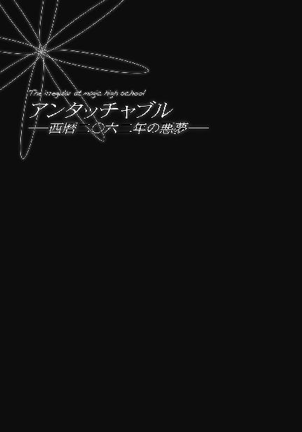

| 魔法科高校の劣等生(8) 追憶編 (電撃文庫) | |
| 佐島 勤 | |
| (2016) | |
本書（電子版）に掲載されているコンテンツ（ソフトウェア／プログラム／データ／情報を含む）の著作権およびその他の権利は、すべて株式会社ＫＡＤＯＫＡＷＡおよび正当な権利を有する第三者に帰属しています。
法律の定めがある場合または権利者の明示的な承諾がある場合を除き、これらのコンテンツを複製・転載、改変・編集、翻案・翻訳、放送・出版、公衆送信（送信可能化を含む）・再配信、販売・頒布、貸与等に使用することはできません。

［１］西暦二〇九五年十一月六日／四葉本家・応接室
大き目の武家屋敷調伝統家屋。
それが門の外から見た四葉本家の印象だった。
一般家屋と比較すれば、確かに広い。お屋敷、と表現しても違和感が無い。
だが七草家や一条家の大邸宅を見たことがある者ならば、質素でこじんまりとしたたたずまい、とむしろ驚くだろう。
四葉は屋敷の広さなど気にしない。徹底した秘密主義を貫く四葉家は外部から大勢の客を招くようなことが無いのだから、大邸宅など邪魔なだけだと思っているのかもしれない。
母親の実家であるにも関わらず他人事の様にそう考えて、深雪は兄と共に、重厚な作りの門へ足を踏み入れた。
あの日──後世に「灼熱のハロウィン」として知られる日から、一週間。
兄妹が地図にも記されていない山村に足を運んだのは、叔母の招き──という名の出頭命令によるものだった。
外の構えからは想像できないモダン、かつ広々とした応接室に通され、そこで待つように伝えられる。プライベートに使用される小さな応接間ではなく、「謁見室」と通称される大応接室に通されたということは、今日の呼び出しが叔母の私的なものではなく、四葉家当主としてのもの、ということだ。──まあ、最初から分かり切っていたことだが。
それにしても、と深雪は思う。
この部屋に、兄と共に呼び出されたのは三年振りとなる。
今まで何だかんだと理由をつけて親族一同が揃っている慶弔の場を除き兄と直接会おうとしなかった叔母が、自分が同席しているとはいえ、三年振りに兄と間近で顔を合わせる。
果たして、それが良いことなのか悪いことなのか、深雪には判断がつかない。
「──心配するな。俺たちは、三年前の俺たちじゃない」
不安が、顔に出ていたのだろう。上目遣いに、窺い見るように向けた深雪の眼差しに、達也が力強く頷いた。
ソファに座った深雪の横に、立ったままで。
三年前も、この姿勢だった。
三年前は、深雪の後ろに立っていた。
そう......三年前とは、違う。
達也はおそらく、三年前とは実力が違うと言っているのだろう。確かに三年前とは比べものにならないくらい、二人は力をつけている。特に達也は、世界最強の魔法師の一人と言われている叔母、「極東の魔王」「夜の女王」と呼ばれる四葉真夜に匹敵する戦闘力を有するに至っている。魔法の相性を考慮すれば、一対一なら間違いなく、達也が勝利する。
しかし、叔母との力関係以上に、三年前とは変わったものがある、と深雪は思った。
──それは、兄と、自分の関係。
──兄に向ける、自分の心。
ソファに深く座り直した深雪の意識は、三年の時を遡っていた......。
［２］西暦二〇九二年八月四日／沖縄・那覇空港～恩納瀬良垣別荘
──西暦二〇三〇年前後より始まった地球の急激な寒冷化により、世界の食糧事情は大幅に悪化した。二〇二〇年代より進められていた農業生産の太陽光工場化により先進国がこうむった影響は限定的なものに抑えられたが、急激な経済成長により人口爆発を加速させていた新興工業国が受けた打撃は深甚なものだった。
最も深刻な事態に直面したのは、寒冷化と砂漠化が同時に進行した華北地域だった。
華北の住民たちは民族的な伝統に従いこの難局を乗り切ろうとした。越境殖民──つまりは不法入植によって。
だが不法入国者の流入を、ロシアは許容しなかった。例え無人の荒野であろうと、軒を貸して母屋を取られる結果となる不法入植を徹底的に排除した。
実力を以て、流血を厭わず。
中国は人道の名の下にロシアを非難し、ロシアは国際法の名の下に中国を非難した。
両国の対立は、両国にとどまらなかった。
人道の名の下に国境を越え、国際法の名の下にこれを排斥する。
世界中に、火種がばら撒かれた。
その背景にあるのは、寒冷化による食糧不足。
それを補う為の、エネルギー資源争奪戦。
火種が大火となるには、ほんの些細なきっかけがあれば十分だった。
西暦二〇四五年、第三次世界大戦──二十年世界群発戦争の勃発。
二〇四五年から二〇六五年にかけて、世界中で大規模な国境紛争が続いた戦乱の時代。
傍観者でいられた国が唯の一つも無い、真の意味での世界大戦。
大戦終了時に世界の人口は二〇四五年時点の三分の一、三十億人にまで減少した。
ロシアはウクライナ、ベラルーシを再吸収して新ソビエト連邦（新ソ連）に、中国はビルマ北部、ベトナム北部、ラオス北部、朝鮮半島を征服して大亜細亜連合（大亜連合）に、インドとイランは中央アジア諸国を吞み込んでインド・ペルシア連邦を形成し、ＵＳＡはカナダ、メキシコを吸収して北アメリカ大陸合衆国（ＵＳＮＡ）に、それぞれ拡大。対照的にＥＵ諸国は統合に失敗し、ＥＵ自体が東西に分裂、アフリカでは諸国の半分が国家ごと消滅、南アメリカはブラジルを除き地方政府レベルの小国分立状態に陥っている。
世界にこの様な激変をもたらした二十年戦争が熱核戦争にならなかったのは、ひとえに魔法師の世界的な団結によるものだった。
西暦二〇四六年、「国際魔法協会」の設立。
その目的は、放射性物質により地球環境を回復不能なまでに汚染する兵器の使用を実力で阻止すること。
核兵器の使用を阻止するという目的に限り、魔法師はその属する国家のくびきを離れ、紛争に実力で介入することが許される。最前線で殺し合いを演じていた魔法師も、核兵器使用の兆候が観測された時点で闘争を中止し、自国・他国を問わず核の使用阻止に協力する。
熱核兵器の使用阻止が、世界中の魔法師にとって最優先される義務と定められた。
この協定、「国際魔法協会憲章」の対象となるのは放射性物質により環境を汚染する兵器であり、厳密に言えば純粋な核融合爆弾はその対象にならないが、大戦時の技術水準では核融合爆弾を起爆させる為に小型の核分裂爆弾が必須だった為、熱核兵器の全面阻止という結果につながった。
こうして、二十年に及ぶ戦乱の時代、熱核兵器が使用されることは一度も無かった。
国際魔法協会はこの功績を認められ、国際的な平和機関として大戦後の世界でも名誉ある地位を占めている──
シートベルト着用のアナウンスが聞こえたのを機に、わたしは『読本・現代史』とタイトルがつけられた魔法師向けの教材ファイルを閉じた。中学生になったばかりのわたしには少し難しい内容だったけど、このくらいの方が退屈しないで良い。
現代の航空機は情報端末の電波如きで航行に支障を来たすことは無いと聞いている。でも離着陸時に情報端末をオフにするのは伝統的なマナーだ。わたしだけじゃなく、他の乗客の人たちも端末をオフにしている。一人だけ常識に逆らうような子供じみた真似をするつもりは無かった。
シートを覆う卵形の安全シールド、その内側に投影された南の島のリアルタイム映像。
その鮮やかな緑と輝く海を見ていると、世界の寒冷化などフィクションの中の出来事に思えてくる。
しかし、それは紛れも無い事実。
わたしたちが生まれる前に世界の気候は温暖化へ向かったが、寒冷化の様々な名残をわたしたちの身近なところに見ることができる。
例えば、ドレスコード。
素肌を露出しない、という服装マナーは、寒冷化が深刻化した時代の名残に他ならない。
まあ、わたしは肩や胸元をむき出しにするドレスは趣味じゃないし──そもそもまだ似合わないし──、裾を引きずるほど長いスカートを強要されるわけでもないし、着物は好きだし、プライベートでは全く拘束を受けないマナーなので実害は無いのだけど。
つまらないことを考えている内に、飛行機は那覇空港に接近した。
ほとんど振動を感じることの無い着陸。
形式以上の何の意味も無いシートベルトを外して、わたしはカプセルシートのシールドを開いた。
下のノーマルシートでは、肘がぶつかり合うほど狭い座席に何列にも押し込められるそうだが、見ず知らずの人とそんな至近距離で一時間も同席するなんて、わたしなら耐えられない。
お母様がシートから出てくるのを待って、一緒に乗降口へ向かう。
夏休みを利用した、プライベートな家族旅行。
家族旅行は本来、プライベートなものだと思うのだけど、我が家の場合は家族旅行でもプライベートじゃないケースがほとんどなので、ガラにも無くウキウキしてしまう。
お母様と二人きり、ではなく、兄も一緒というのが玉に瑕なのだけど。
◇ ◇ ◇
到着ロビーの会員制ティーラウンジを出ると、預かり手荷物を取りに行っていた兄が待っていた。
兄一人別行動だったのは、別に嫌がらせではない。
エグゼクティブクラスの乗客は優先的に飛行機から降ろされる。荷物も優先的に返却されるとはいえ、やはり少しは待たなければならない。荷物が出て来る時間を考えれば、ノーマルクラスの兄に取りに行ってもらう方が時間が無駄にならない。
兄一人をノーマルシートに座らせたのもちゃんと理由がある。
エグゼクティブクラスには通常のキャビン・アテンダントの他に、荒事専門の警備用乗務員が目を光らせている。ハイジャックや自爆テロなどの犯罪が発生するとすれば、警備が緩いノーマルクラスの方だ。兄がノーマルに席を与えられたのは、万が一の事態に対応する為なのだ。
とはいうものの──家族の普通のあり方から外れていることはわたしにも分かっている。
お母様の隣を歩きながら肩越しにチラッと振り返ると、当たり前のようにわたしたちの荷物を載せたカートを一人で押す兄が、不満そうな顔一つせず黙々とついて来ていた。
いつもどおりに。
わたしは別に、この兄が嫌いではない。
ただ、苦手なだけだ。
一体何を考えているのか分からない。
何故、家族でありながら使用人同然の──使用人そのものの──扱いを受けて平気なのだろうか。
そういう役目を与えられているのだということは知っている。
家が特殊なのだということも分かっている。
しかし、兄はまだわたしと同じ中学一年生でしかない。
四月生まれの兄に対して、わたしは三月生まれ。
年子のわたしたちが同じ学年になっているのは二人の生まれ月がもたらした偶然だけれども、それでも、今年の三月までわたしと同じ小学生だったことに変わりはない。
それなのに何故、妹にあごで使われて平気でいられるのか──
兄とわたしの、目が合った。
何度も振り返っていたわたしの視線が気になったのだろう。
「......何ですか？」
わたしがチラチラ見ていたから兄もわたしの方へ目を向けたのだ、と理性では分かっている。
だけどわたしの口からは、不機嫌な声しか出て来なかった。
「何でもありません」
女主人に仕える執事のような丁寧な口調で兄が応えた。
好意も嫌悪も、兄妹愛も近親憎悪も、そこに兄が妹に向ける感情は、肉親の情は無かった。
「でしたらジロジロ見ないでください。不愉快です！」
理不尽だ、とは分かっている。
兄を使用人扱いしているのはわたしたちの方であって、兄がそれを望んだわけではない。
それなのにわたしは、兄に自分勝手な苛立ちをぶつけている。
「失礼しました」
兄は立ち止まり、わたしに向かって頭を下げた。
そして、さっき迄より少し離れて、わたしたちの後をついて来る。
何故、と思う。
今のは、わたしのわがままなのに。これじゃあ、わたし、嫌な子だわ。
──やはりわたしは、この兄が苦手だ。
◇ ◇ ◇
今回わたしたちが滞在するのは、恩納瀬良垣に買ったばかりの別荘だ。わたしはホテルでも良かったのだが、お母様は人の多いところが苦手だから、という理由で父が急遽手配したものだった。
相変わらずあの人は、愛情をお金で購えると考えているらしい。......そのお金も、お母様を娶って手に入れたものなのだけど。
父も若い頃は人並み外れた──魔法師としても規格外のサイオン保有量から、その潜在能力を高く評価されていた魔法師だったらしいけど......今の魔法技術体系においてサイオン保有量は、魔法技能の優劣を左右するものではなくなっている。潜在能力を結局、顕在化させることのできなかった父は、魔法師として身を立てる道を諦め、今ではお母様の実家が作った会社の役員に収まっている。
そんな経緯があるから、お母様に対して引け目に感じる気持ちは分かるのだけど、娘としてはもう少し父親らしく頼りがいのある姿を見せて欲しい。
......わたしは軽く頭を振って、つまらない思考を頭の中から追い出した。せっかくバカンスに来ているというのに、不愉快な想いに囚われているなんて愚かしいことだと気がついて。
「いらっしゃいませ、奥様。深雪さんも達也君も良く来たわね」
別荘でわたしたちを出迎えてくれたのは、一足先に来て掃除や買い物を済ませておいてくれた桜井穂波さんだった。
彼女は、お母様のガーディアンだ。
五年前まで桜井さんは警視庁のＳＰだった。退職する時は随分と強く引き止められたらしいけど、彼女がお母様のガーディアンになるのは警視庁に就職する前から決まっていたことで、警視庁に入ったのは護衛業務のノウハウを学ぶ為だった。
彼女は遺伝子操作により魔法資質を強化された調整体魔法師「桜」シリーズの第一世代。二十年戦争末期に研究所で作られ、生まれる前から四葉に買われた魔法師だ。
しかしそんな生い立ちを少しも感じさせない明るくさっぱりした女性で、ガーディアンの本分である護衛業務以外にも、お母様の身の回りの細々としたお世話をしてくれる。本人曰く、家政婦の方が性に合っているのだそうだ。
本来護衛対象から離れることの無いガーディアンが一足先に別荘へ来ていたのは、現地の情報収集の為であり、兄がわたしとお母様の傍にいたからなのだが、だったら桜井さんと兄の役目を逆にして欲しかった。──兄に生活環境を整えさせるのは無理だから、仕方のないことなのだけど。
「さあ、どうぞお入りください。麦茶を冷やしておりますよ。それともお茶を淹れましょうか？」
「ありがとう。せっかくだから麦茶をいただくわ」
「はい、畏まりました。深雪さん、達也君も麦茶でよろしいですか？」
「はい、ありがとうございます」
「お手数をお掛けします」
唯一つ桜井さんに不満があるとすれば、兄をお母様の息子として──わたしの兄として扱うことだろうか。
言ってしまえば、当たり前のことだ。
だけどわたしには......その当たり前のことができない。
そんな自分が、この時、訳も無く歯痒かった。
「お母様、少し歩いてきます」
着いたばかりで泳ぎに行くのも慌ただしい気がしたし、かといって別荘に閉じこもっているのももったいなかったので、散歩に行くことにした。徒歩だと万座毛は少し遠すぎて無理だけど、ビーチ沿いの遊歩道をのんびり歩くだけでも気持ちが良いに違いない。
「深雪さん、達也を連れてお行きなさい」
しかしお母様の返事を聞いて、せっかくのお散歩が最初から台無しになった気がした。
一人でも大丈夫です、と本当は主張したかったけれども、余計な心配は掛けたくない。
「──わかりました」
声が尖らないようにするのが精一杯。
つばの広い麦藁帽子を目深に被り、振り返りもせず、わたしは傾いた日差しの下へ歩み出た。
サマードレスの裾を揺らす海風が、思ったとおり、心地良い。
桜井さんに手伝ってもらって足の爪先から瞼まで隙間無く日焼け止めを塗っているので、日差しを気にせず腕や脚で風を感じることができる。
褐色のクリームで覆われた肌は、地元の女の子と比べても違和感が無い、と思う。
そのお蔭で、なのか、すれ違うたびにジロジロ見られないのも気分が良かった。
日に焼けるということを知らないわたしの肌は、自慢じゃないけどビーチやこういう所では悪目立ちしてしまう。
──いや、本当に自慢じゃないのだ。
小学校の友達とプールに行った時、「雪女みたい」と言われて激しくショックを受けた記憶は、未だ消し去ることができない。何気の無いセリフで決していじめとか陰口とかじゃなかったから余計にショックを受けた。
色素が足りないわけではないはずだ。髪の色は重過ぎるほど真っ黒なのだから。
血統的なものだろうか？ 過去五世代、わたしの家系にコーカソイドの血は混じっていないはずなのだけど......まあ、それ以前は分からないから超隔世遺伝という可能性も無いわけじゃないのだけれど。でも、お母様も夏は多少日焼けするし、兄は褐色というか赤銅色というか、元の肌色が分からないくらい見事に日に焼けているのだから、家系的なものとも言い切れない気がする。
「──っ」
意識的に考えないようにしていたことを意識に乗せてしまって、わたしは意識的に視線を前へ固定し、後ろを見ないように、過剰に意識した。......一体何を「意識」しているのか、自分でも混乱しそうだ。
耳を澄ませても、足音は聞こえない。気配も無い。──もっともわたしには最初から、気配を読むなんて芸当はできないのだけれど。
しかし振り返れば間違いなく、少し離れて、兄がついて来ているはずだ。
兄はわたしのガーディアンなのだから。
何故「ボディガード」ではなく、わざわざ「ガーディアン」などという大袈裟な呼び方をするのか、わたしにはその理由がいまひとつ理解できない。しかし、四葉の「ガーディアン」と単なる「ボディガード」がどう違うのか、それは理解できている、と思う。
ボディガードは「仕事」で、ガーディアンは「役目」。
ボディガードは護衛対象を命懸けで護る代わりに、金銭的な報酬を得る。警察のＳＰのように職務として護衛を行う例もあるけど、そういう人たちも職務に応じた俸給を得ているから、広い意味で金銭的な対価を得る為に護衛を生業としていると言って間違いじゃないと思う。
それに対してガーディアンには、金銭的な報酬が無い。衣食住は四葉に与えられ、金銭の必要があればその都度、四葉から支給される。ただしそれは報酬ではなく、護衛の力を維持する為のコストだ。
極論すれば、ボディガードは食べる為に護り、ガーディアンは護る為に食べる。
ガーディアンに私生活は無い。彼ら、彼女たちの全ては、マスターあるいはミストレスと呼ばれる護衛対象に捧げられている。
わたしは、わたしたちは、それを当然のものと考える一族だ。当然と考えることができなければ、ドロップアウトするしかないのが、わたしたち「四葉」だ。──ミストレス、なんて恥ずかしい呼び方をされるくらいなら、放り出された方がマシな気もするけど。そこは幸いなことに「マスター」や「ミストレス」の呼称は、「ガーディアン」ほど普通に使われるには至っていない。
兄がわたしのガーディアンになったのは、わたしが六歳の時。わたしの初めてのガーディアンは兄で、多分それは、これからずっと変わらない。
兄は四葉当主の姉の息子ではなく、次期四葉当主候補の守護者として、わたしが当主になったならその影として、一生を終えることになる。
わたしが、ガーディアンの任を解かない限りは。
そう、ガーディアンは唯一、護衛対象に解任された場合に限り、その義務を免れ一人の人間として生きることが許される。
兄がわたしについて来る。
あの人が後ろから追いかけて来る。
わたしはあの人から離れられない。
あの人はわたしから逃げられない。
逃がさないのはわたし。
逃げられないのはあの人。
わたしだけがあの人を普通の中学生に戻してあげられるのに。
あの人が、兄が普通の中学生でいられないのは、わたしが兄を辞めさせないから。
──わたしは兄が苦手だ
──わたしは兄が嫌いではない
では何故、わたしは兄をこの酷い境遇に縛り付けているのだろうか？
答えは出ない。
このことを考えようとすると、どういう訳かわたしの頭は働かなくなってしまう。
足元に視線をしっかりと固定したまま、わたしは足を速めた。
俯いたまま早足で歩いていたわたしは、突然腕を摑まれ、後ろへ倒れこみそうになった。
その直後、前からドシンという衝撃を受け、兄の胸の中へ倒れこんでしまう。
兄に文句は無かった。
今のは、前を見ていなかったわたしが悪い。──反射的に声を荒げそうになったのは、誰に告げる予定も無い秘密だ。
問題は、わたしの身体が兄に引き止められた後、前からの衝撃を受けたということ。わたしがぶつかったのではなく、明らかに、わたしがぶつかられたのだ。
これは怒っても良い場面だろう。
わたしは怒りを込めた眼差しを上に向けた。だが、そこには分厚い肉の壁しか見えない。
目線を更に上げる。
ようやく前からぶつかってきた相手の正体が分かった。
軍服をだらしなく着崩した、黒い肌の大男──「取り残された血統」だ。
二十年戦争の激化により、沖縄に駐留していたアメリカ軍（当時はまだＵＳＡ）がハワイへ引き上げた際、取り残された子供たち。その大半は親に捨てられたのではなく父親が戦死した為だけど、彼らの多くは米軍基地を引き継いだ国防軍の施設に引き取られて育ち、そのまま軍人になった、そうだ。
彼らは勇猛な兵士として国境防衛の任務を立派に果たし、その子供たちも軍人になった者が多い。しかし当の子供たち、つまり第二世代は素行が良くない者も多いから気をつけるべし、というのが沖縄観光に関するプライベート・サイトに共通して掲載されている注意書きだ。
大男の後ろには、同じように軍服を着崩した同じくらいの体格の青年が二人、ニヤニヤと気持ちの悪い笑みを浮かべている。
反射的な怒りは、生理的な恐怖に取って代わられた。
いざとなったら魔法を使う、という当然の対処法すら思いつかないほど心がすくんでいた。
──視界が、兄の背中に塞がれるまでは。
少年の、華奢な背中。
それでもわたしより、広い背中。
わたしはいつの間にか、兄の背後にかばわれていた。
「あぁ？ ガキに用は無いぜ？」
こちらを見下しきった嘲笑で、大男が兄の顔をのぞき込む。
兄は、何も答えない。
「ビビッて声も出せねえのか？」
「ハッ、チキン野郎が。カッコつけてんじゃねえよ！」
後ろの二人が兄に対して嗤い、凄む。
怒りが心の中に蘇った。
さっきよりずっと、明瞭な形で。
わたしは「ＣＡＤを持って来るべきだった」と悔やんだ。補助具無しでは加減が上手くできない。こんな相手でも大怪我をさせてしまうのは、色々な意味でまずい。
ＣＡＤが手元にあれば、こんなやつらに好き勝手を言わせたりしないのに！
一体何に対して熱くなっているのか自分でも分からないまま、わたしは兄の前に立ちふさがる大男を「キッ」と睨みつけた。
大男の目がわたしを見て、スウッと細められた。
唇が動いた。
それが笑う為だったのか、喋る為だったのか、確かめる術は無い。
「わびを求めるつもりは無いから来た道を引き返せ。それがお互いの為だ」
およそ少年らしさの無い落ち着いた口調の、まるきり子供らしくないセリフが大男の表情を強張らせたからだ。
「──なんだと？」
低い、低い、囁くような問い掛け。
「聞こえていたはずだが？」
感情の欠落した、独り言のような反問。
男の両眼に、凶悪な光が宿った。
「地面に頭を擦り付けて許しを乞いな。今ならまだ青痣くらいで許してやる」
「土下座しろ、という意味なら、頭を、ではなく、額を、と言うべきだ」
その、直後。
何の合図も前触れも無く、男が兄に殴りかかった。
兄は同年代の中で大柄な方と言っても、所詮、中学一年生の身体。目の前の男とは文字どおり、大人と小人。
わたしは反射的に、目をつぶった。
パシッ、という音がした。
兄が殴られれば後ろにいる自分は巻き添えになる、と今更の様に思いついて、そうならなかったことを不思議に思った。
恐る恐る目を開ける。
最初に目に入ったのは、信じられない、という表情に固まった大男。
この男が何故そんな顔をしているのか、悩む必要は無かった。
中途半端に伸ばされた男の右腕。
その拳を、兄が両手で受け止めている。
片手と両手、ではあったが、二人の間にはそんなことなど関係なくなる体重差があるはずだ。
大男の体重は、もしかしたら兄の倍以上。
それなのに兄は、ウエイトの乗った男のパンチを、一歩どころか半歩も下がらず、受け流したのではなく正面から受け止めている。
魔法を使った？ ──いいえ、そんな兆候は無かった。
学力とか体力とか運動技能とかならともかく、魔法なら兄よりわたしの方が上だ。兄が魔法を使って、わたしが気づかないはずは無い。
「面白い......単なる悪ふざけのつもりだったんだが......」
大男はニヤリと笑うと、腕を引いて左右の拳を胸の前に構えた。
ボクシング？
空手？
格闘技や武道にはまるきり素人なわたしには見分けがつかない。だけど遊び半分だった相手が本気になった、ということだけは何となく分かった。
わたしは逃げることも忘れて、あの人の背中の陰から大男の様子を窺っていた。何も言えず息をひそめていたわたしの耳に、あの人の思い掛けないセリフが飛び込んで来た。
「いいのか？ ここから先は、洒落じゃ済まないぞ」
何故そんな挑発的な言い方をするの!?
普通にやったら、敵うはずが無い。
普通なら、逃げるべきだ。
いえ、兄の思惑なんてどうでも良い。
わたしだけでも、逃げるべきだ。
──わたしの頭はそう考えているのに、わたしの身体は兄の背中から離れようとしない。
「ガキにしちゃ、随分と気合いの入ったセリフを吐くもんだ、な！」
そこから先を、わたしは目で追うことができなかった。
わたしに分かったのは結果だけで、そこから何が起こったのかを推測するだけ。
前へ踏み出した男の左足。
その左足と右足の間にねじ込むような形で、兄が左の足を踏み込んでいる。
肩口に引かれた男の右手は、まさにパンチを繰り出そうとしているところ。
その胸板の中央に、兄の左拳が添えられている。
少し隙間が空いているのは、これから打ち込むところではなく、打ち込んだ反動で跳ね返ったからに違いない。
ドン、と太鼓でも叩いたような音が、きっと、兄の拳の音。
兄が踏み出した足を引くと、示し合わせたように大男の身体が沈み、痛そうな音を立てて路面に両膝をついた。
兄は蹲ったまま苦しそうに咳き込む大男を見下ろし、背後の二人へおもむろに目を向けた。
男たちは立ちすくんだまま、動かない。
兄は男たちに背を向けた。
「帰りましょう」
兄が、わたしの腕に手を添える。
呟いたその言葉が自分に向けられたものだと、わたしはそれで、ようやく気がついた。
「深雪さん、何かあったんですかっ？」
打ち切りとなった散歩から戻ると、桜井さんが顔色を変えて小走りに駆け寄ってきた。
そんなに酷い顔はしていないと思うけど、少し青ざめているという自覚はあるので、誤魔化すことは最初から諦めていた。
「ちょっと......男の人に、絡まれてしまって」
「まあ......！」
それだけで桜井さんは大体の事情を覚ったようだ。
さり気なくこちらを観察しているのは、衣服に乱れが無いか、チェックしているのだろう。
「大丈夫です」
少し無理をしたけど、自然な笑顔を作れたと思う。
わたしが笑顔を向けると、桜井さんもホッとしたような笑みを返してくれた。
でも、わたしの作り笑いは長続きしなかった。
兄が助けてくれましたから──そのセリフが、わたしの口から旅立つことは無かった。
そう言おうと思って目を向けたのに、兄は素知らぬ顔で、相も変らぬ無表情で、桜井さんに軽く会釈して、それなのにわたしの方は見向きもせずに、奥の部屋へ引っ込んで行った。
苦労して浮かべていた作り笑いが、今にも崩れてしまいそうだ。
「──シャワーで汗を流してきますので」
そんなに汗はかいていないけど、わたしはそれを口実に、シャワー室へ逃げ込んだ。
熱いシャワーが肌の上ではじける。
撥水性のクリームを落とすのも忘れて、わたしはその熱を感じていた。震え出しそうになる身体を温める為に。
「なんで......」
シャワーを頭からかぶる。熱い雫が顔を伝い、目尻と目元で、別の雫と混じり合う。
「なんでわたしは泣いているの......？」
不思議そうな声が、自分の耳に届く。泣き声ではなく、まるで他人事のよう。
「何故わたしが泣かなければならないのっ？」
ヒステリックに叫んでみても、答えは無い。ここには、わたししかいない。
「何故......なんでよ......」
聞こえてくるのはシャワーの音だけ。わたしの疑問に、誰も答えてくれなかった。
［３］西暦二〇九五年十一月六日／四葉本家・応接室
「おや」
中庭に面した窓から外を見ていた達也がふと漏らした声で、深雪の意識は過去から現在へ復帰した。
「お兄様？」
「黒羽の姉弟だ」
眼差しで問い掛けてくる妹に、達也はわずかに驚きを滲ませる表情で答えた。
「亜夜子さんと文弥くんですか？」
達也は驚きを滲ませる程度で済ませたが、深雪はそうも行かなかったようだ。慌てて腰を浮かせ、中途半端な体勢でしばし固まって、思い直したように腰を下した。
「ちょうど帰るところのようだ」
黒羽姉弟が出て来た離れには、彼女たちの祖母、故人である達也たち兄妹の祖父の妹、現当主の真夜にとって叔母に当たる人物が住んでいる。
黒羽文弥は四葉の次期当主候補ナンバーツーだ。祖母のところへご機嫌うかがいに来ても不思議は無い。深雪も、彼女たちがここに来ていること自体に驚いたわけではなかった。
「......偶然でしょうか？」
「俺たちがここにいることを知っていて、素通りする二人じゃないと思うがね」
確かにそうだ、と深雪は思った。
「縁が濃いのか薄いのか、あの二人とはニアミスを起こす巡り合わせのようだな」
完全に鉢合わせるのでもなく、完全にすれ違うのでもなく。
兄と同じことを考えていた深雪は、一晩だけの接近遭遇となったあの日の出来事を思い出していた......。
［４］西暦二〇九二年八月四日／沖縄・別荘～ホテルパーティ会場
バカンスに来ているといっても、世間のしがらみと縁を切ってしまうことはできない。わたしはまだ中学生になったばかりだけど、招かれて断れない相手がいないわけじゃない。
親戚筋ばかりで、そんなに数が多くない、というのは不幸中の幸いだけど......その少ない相手が同じ時期に同じ場所に来ているなんて全くの予想外だった。
招待主は黒羽貢さん。お母様の従弟に当たる方だ。
時計の針は午後六時を指している。そろそろ別荘を出なければならない時間だ。
わたしは鏡台の前に座り、ブラシを手に取った。
「ハァ......」
思わず口からため息が漏れる。鏡の中のわたしは随分と冴えない顔をしていた。
パーティーそのものは苦手じゃない。でも今日は東京から沖縄に移動した当日だ。せめて今晩だけはゆっくりしていたかった。
「深雪さん、用意はできましたか？」
ノックの後、ドア越しに掛けられた声。自分の部屋でグズグズしていたわたしを、桜井さんが呼びに来たようだ。
「あっ、はい」
知られたら間違いなくお小言をもらいそうなことを考えていたわたしは、反射的に立ち上がってそう答えを返した。
わたしの返事を入っても良いという意味に解釈した桜井さんがドアを開ける。──確かにそういう意図もあったから、別に慌てたりしなかったけど。
「なんだ、もう済ませていらっしゃるじゃないですか」
カクテルドレスに着替えて、髪留めとネックレスを着けて、ハンドバッグを手にしたわたしを見て、桜井さんは苦笑気味の笑みをこぼした。
「そんな不機嫌そうなお顔をなさっては、せっかくのお召し物が台無しですよ？」
わたしはそんなに判りやすい顔をしているのだろうか？
「......わかりますか？」
相手が桜井さんとはいえ、他人の目に変わりは無い。不機嫌を覚られないよう気を遣っているつもりだったのに。
「私には、ね」
そう言って、桜井さんは少し得意げにウインクして見せた。......って、他の人に覚られるような顔はしていないということ？
「もう......からかわないでください」
思わずぷくっ、と頰を膨らませて、慌てて淑女らしい表情を精一杯取り繕ったけれど。
クスッ、と桜井さんが笑みをこぼしたのを見て、顔が熱くなるのを感じた。
もう中学生なんだから、こういう子供っぽい真似はやめようと思っていたのに。
「ゴメンナサイ......でも」
三十歳とは思えない──せいぜい二十歳過ぎにしか見えない──可愛い笑顔でひとしきりクスクスとやった後、桜井さんは急に表情を改めた。
わたしも自然と気持ちが引き締まる。
「私以上に鋭い『目』を持つ人だって、世の中には大勢いますから。私は深雪さんのことを良く知っているからこそ、嫌がっていることも分かります。でも、もしかしたら一目見ただけで深雪さんの表情を読むことができる人もパーティーに来ているかもしれません。深雪さんは普通の中学生じゃないんですから、隙につながるようなところは無くすべきだと思いますよ」
的のど真ん中を射たアドバイスで、反論しようという気持ちも起こらなかった。
「......どうしたら良いでしょう？」
「どんなに上手く隠したつもりでも、気持ちというものは目の色や表情の端々に表れてしまうものですからね」
......それって、どうしようもないということ？
「必要なのは、自分の気持ちを上手に騙せるようになること、でしょうか。建前というのは、まず自分自身を納得させる為のものなんですよ」
わたしの不満を読み取ったのか、桜井さんは宥めるような、言い含めるような口調で続けた。
◇ ◇ ◇
とはいうものの、建前で自分の心を覆い隠してしまうには、わたしはまだまだ子供なわけで。
パーティー会場に近づくにつれて、気分が沈みこんで行くのを止められなかった。
悪い人ではないのだ、黒羽の叔父様は。（正確には「叔父」ではないけれど）
ただ、奥様を早くに亡くされているからなのかどうなのか、親バカ振りがちょっと......というか、正直かなり鬱陶しい。
まったく、子供を相手に自分の子供を自慢するなんて、どういうつもりなのだろう？ いえ、わたしがどう感じるかなんて、きっと考えていないのだろうけど、そういうのは大人同士でやって欲しい。
ハァ、と口からため息が零れる。
思わず、ではなく意識的に。
今の内にため息を吐き出しておかないと、本番で我慢できないような気がしたから。
既に、ホテルの敷地内。
無駄に派手な──わたしの主観的に、だけど──エントランスがもう見えている。
無人運転のコミューターが停止した。
キビキビした動作で兄がコミューターを降りて、ドアを押さえ、わたしが降りるのを待っている。
わたしは表情を引き締めて、退屈で憂鬱な戦場へ足を踏み出した。
ロビーには強面のおじさん、お兄さんたちと、凛々しいお姉さま方がいた。全員、目立たないようにしているつもりなのだろうけど、生まれた時からこういう人たちと付き合ってきたわたしの目を誤魔化すには力量不足。
他人事ながら、もっと修行した方が良いですよ、と言いたくなってしまう。
もっとも、かく言うわたしも今晩連れているのは兄だけではなかった。
全国区の警備会社から女性のボディガードが二名、臨時についている。
パーティーなんかだと男性では同伴できない場所も多いし、夕方のこともあるからだ。いつもは桜井さんがいてくれるからこんな心配はしなくていいのだけど、今はお母様の側にいてもらっている。
お母様は少し身体が弱く、今も別荘でお休みになっている。それは仕方の無いことだけど、お蔭でわたしは、一人で叔父様の相手をしなければならなくなった。
気が重い。
父は最初から当てにならないとしても、本当ならこういう付き合いは、妹のわたしではなく、兄であるこの人がこなすべきことのはずなのに。
わたしは一歩先を進む兄の背中を、恨めしげに見詰めた。
「叔父様、本日はお招き、ありがとうございます」
予想どおり個人のパーティーには大きすぎる会場で、予想どおりの豪華なテーブルを背景に、予想したとおり高価なスーツを身にまとって出迎えてくれた叔父様に、わたしは型通りのあいさつを送った。──こういうことに独創性を求めても意味は無い。
「良く来てくれたね、深雪ちゃん。お母様は大丈夫かい？」
叔父様は、大層フレンドリーな言葉を返してくれた。
わたしのことを未だに「ちゃん」付けで呼ぶのはこの人くらいだ。
そして、兄の存在を空気の様に黙殺しているのも、いつものとおり。
兄も黙ってわたしの後ろに立っているだけだから、どっちもどっちではあるのだが。
「お気遣い、おそれ入ります。少し疲れが出ているだけだと思いますが、本日は大事を取らせていただきました」
「それを聞いて私も一安心だよ。おっと、こんな所で立ち話もなんだな。ささ、奥へどうぞ。亜夜子も文弥も、深雪ちゃんと会うのを楽しみにしていたんだよ」
当然と言えば当然のことだけど、やはりあの二人が来ているのね......
あれほど強く自分に言い聞かせたのに、わたしの口はため息を吐きたがっていた。
叔父様に背中を押されて、わたしは奥のテーブルへ連れて行かれた。
兄は入り口で置き去りのまま。
ボディガードは壁際で控えているのが慣わし、ということだ。
自分も同じ仕打ちをしているのに、他人が兄を使用人扱いすると無性に気に障るのは......多分わたしが、身勝手なのだろう。
それはともかく、わたしはこうして、当面のところ孤立無援で、黒羽親子の相手をしなければならなくなった。
「亜夜子さん、文弥くん、二人ともお元気？」
わたしから声を掛けると、文弥くんは嬉しそうに、亜夜子さんは待ち構えていたような、それぞれにいつもの笑顔で迎えてくれた。
「深雪姉さま！ お久し振りです」
「お姉さまもお変わりないようで」
亜夜子さんと文弥くんはわたしより一学年下の小学六年生。
わたしたち兄妹と違って、本物の双子だ。
一学年下といってもわたしが三月生まれ、二人は六月生まれだから歳は同じ。
だからなのかどうなのか、昔から亜夜子さんはわたしに対してあからさまにライバル心を向けて来て......これもこの一家との付き合いが鬱陶しい理由の一つだ。
後継者候補は亜夜子さんじゃなくて文弥くんの方なのだから、競争意識を持たれても......というのがわたしの偽らざる本音だったりする。
文弥くんは素直に慕ってくれるから可愛いのだけど、男の子としては、少し可愛すぎる気もする。兄と比べるとどうしても......いえ、あの人は例外か。
今日も可愛らしすぎる二人の衣装を見て、わたしは表情筋の動きを抑えるのに苦労しなければならなかった。
文弥くん、いくら冷房が効いているといっても、今の季節にその格好は暑くないかしら？ カジュアル風にアレンジされているとはいってもメスジャケットにカマーバンドまで着けてるし......プライベート・パーティーなんだから、そんなに気合いを入れる必要は無いと思う。
一方、亜夜子さんは......まあ、いつもどおりと言えばいつもどおりだ。リボンとフリルと飾りボタンをふんだんに使ったワンピースに膝上のソックスとリボンがあしらわれたローファー。綺麗に巻かれた髪を飾る、フリルで縁取られたヘアバンド。別に、他人の趣味にケチをつけるつもりは無いけれど、夏のリゾートにはちょっと不似合いなファッションではないだろうか。
本人も親御さんも喜んで着て（着せて）いるのだから、本当に、余計なお世話だと思うけど。
わたしがそんなことを現実逃避気味に考えている間にも、叔父様の自慢話は続いている。亜夜子さんがピアノコンクールで入賞したとか、文弥くんが乗馬の先生に褒められたとか、そんなどうでもいいことに適当な相槌を打ちながら、時間が過ぎ去るのを待つ。
これは一体、何の罰ゲームなのだろうか、といつも思うけど、幸いなことに毎回、そう長い時間の忍耐を強いられることはない。今日もそろそろ、文弥くんがソワソワし始めた。
「ところで深雪姉さま......達也兄さまはどちらに？」
ほら来た。
文弥くんはとても良い子でわたしのことを亜夜子さんと同じように、つまり実の姉の様に慕ってくれているけど、それ以上に兄のことを慕っている、と言うか、尊敬している節がある。
いえ、憧れている、と言った方が適当かしら？ それもまあ、理解できなくもない。
一般的な意味で──魔法協会が定めた基準に則って判断する限りは、という意味で──魔法の才能に恵まれなかった兄だけど、あの人にはそれを補って余りある頭脳と肉体と特殊技能がある。
学校の成績は飛び抜けて優秀。
スポーツは何をやらせても一流、あるいは超一流。
そして、全ての魔法師の天敵ともなれる、あの人だけの切り札。
男の子が憧れるヒーローは、きっと兄のような人なのだろう。
いいえ。きっと、男の子だけじゃなくて。
見掛けの優しさとか爽やかさとか甘いマスクとか、そんなものとは無縁だけど。
兄は、すごく格好良い......。
......って、わたし、一体何を考えているの!?
あの人はわたしの護衛でしかないのに。
あの人とわたしは、血がつながっているだけの兄妹でしかないのに。
これではまるで、わたしがブラコンみたいじゃない......！
「あそこに控えさせているわ」
突然心の中に湧いた黒い雲を覚られないように、かなりの気合いを入れて作った笑顔でわたしは壁際を指し示した。
あっ、文弥くんの頰が赤くなっている。
どうやら誤魔化せたようだ。
「......えっと、どちらでしょうか？」
わたしから目を逸らすのと兄を探すのと半分半分で目をさまよわせる文弥くんの隣で、亜夜子さんも無関心を装いながらチラチラと壁際に目を遣っている。
彼女の判りやすい態度がおかしくて、つい口元がほころんでしまったけど、亜夜子さんはそれが文弥くんに向けられたものだと思ったようだ。関心の無いふりを貫く彼女の隣で、わたしは文弥くんに兄の立っている場所を指し示した。
兄は、わたしたちの方を見ていた。
「達也兄さま！」
文弥くんはパッと顔を輝かせて、兄の許へ小走りに駆け寄った。
「もう、仕方ないわね」
文句を言いながらも、亜夜子さんは足早に文弥くんを追いかけて行く。如何にも、走り出すのを我慢している、という風情。
そんな二人を見て、叔父様が苦虫を嚙み潰していらっしゃるのも、毎回のことだ。
叔父様がゆっくりと、亜夜子さんとは対照的な歩調で歩き出したので、わたしもその後に続いた。
文弥くんが兄に、何事か一所懸命話し掛けている。
兄は何度か小さく頷き、唇の端を小さく吊り上げて、わずかに歯を見せて──笑った？
あの人が？
嘲笑でも苦笑でもなく、あんなに普通に？
何故......？
わたしには、あんな笑顔を向けてくれたことは無いのに......！
「こらこら、文弥、亜夜子。達也君の仕事の邪魔をしてはいけないよ」
愛想笑いを維持する為に、爪が掌に食い込むほど手を強く握り締めなければならなかったわたしの前で、叔父様は本音をまるで窺わせない完璧な作り笑いを自然に浮かべていた。
「ご苦労様。しっかりお勤めを果たしているようだね」
「おそれ入ります」
叔父様に向き直った兄は、いつもの兄だった。さっきまで浮かべていた笑みが噓のような無表情。
「あら、お父さま。少しくらい、よろしいのではありません？ 深雪お姉さまはわたくしたちがお招きしたお客様。ゲストの身辺に危害が及ばぬよう手配するのはホストの義務ですもの。ここにいらっしゃる限り、達也さんのお手を煩わせることは無いと思いますけど」
「姉さまの言うとおりですよ。黒羽のガードは一人のお客様の身の安全も保証できないほど無能ではありません。そうでしょう、父さん？」
あらっ？ 文弥くん、叔父様のことを「父さま」と呼ばなくなったのね......。
そんなどうでも良いことが気になって、そのお蔭で気持ちが逸れてくれた。
「それはそうだが......」
わたしの思いとは無関係に、叔父様は困惑顔で言葉を濁した。
わたしもそうだけど、多分、亜夜子さんも文弥くんも叔父様の本音は分かっている。叔父様は自分の子供たちが、特に文弥くんが兄に好意を向けているのが気に入らないのだ。
文弥くんは四葉の次期当主を狙う候補者。
兄は、同じく四葉の次期当主候補であるわたしの、単なる護衛役。ガーディアンという特別な呼び方をされてみたところで、所詮は使用人、悪く言えば使い捨ての道具に過ぎないのだ。
道具、と割り切ることができなければ、四葉の後継者とはなり得ない。
もっとも、兄はわたしの護衛役なのであって、文弥くんと兄の関係は再従兄弟同士でしかないのだから、文弥くんが兄のことを慕っていても本当は何の問題も無い。それは亜夜子さんも同じで、亜夜子さんが兄に好意を持っていても、それがどんな種類の好意であっても、特に問題は無い。真夜叔母様は、そんなことを気にしたりなさらないだろう。
極端な言い方をすれば、叔父様が外聞を気にしているだけなのだ。叔父様は兄を使用人、使い捨ての道具としか見ておらず、そういう意味で黒羽貢という人は骨の髄まで「四葉」なのだろう。だから、自分の子供たちが道具に感情移入しているのがみっともない、と感じているに違いない。
それが「四葉」として当然のあり方だ。
わたしが「四葉深雪」になる為には、わたしも叔父様と同じ心掛けを持たなければならない。
兄である前に、ガーディアン。
あの人はわたしの護衛役。いざとなれば、自分の命と引き換えにわたしを護ることを義務付けられた盾。
道具であるあの人がわたしに愛情を持たないのは当たり前のことで、わたしもあの人に情愛を懐くべきじゃない。
自分にそう、言い聞かせる。
呪文の様に、繰り返し。
兄は、わたしの護衛役。
わたしを護る盾。
それが兄に与えられた役目で、わたしは真夜叔母様の跡を継がなければならなくて、だから兄はわたしのお兄様ではなくて──
キリッ、と頭の芯が痛んだ。
一瞬、自分が何処にいるのか分からなくなった、気がした。
もちろんそれは錯覚で、わたしは黒羽の叔父様のパーティーに招かれていて、わたしの前では叔父様が難しいお顔をなさっている。
......何か大切なことを考えていたような気もするけど......多分、気の所為よね。
「......文弥、あまりお父上を困らせるものじゃないよ」
意外なことに、叔父様に助け舟を出したのは兄だった。
文弥くんのことを「文弥」と呼んで。
まるで実の弟に対するように、親愛のこもった口調で。
頭の奥で、微かな疼痛を感じた。
不快感に思わず顔を顰めそうになる。
ダメだ。
ここでわたしが不機嫌そうな表情を見せたりすれば、叔父様と兄の対応に不満を持っていると誤解されかねない。
......誤解、なのかしら......？
ダメダメ、そんなことを考えては！
ええと、こういう時はどうすれば良いんだっけ？
出かける前に桜井さんが教えてくれたはずだ。
そう、必要なのは、自分の気持ちを上手に騙せるようになること──
「黒羽さん、会場の中はお任せしてよろしいですか？ 自分は少し、外を見回ってきますので」
「おお、そうかい？ それは立派な心掛けだ」
兄の申し出に、叔父様は大袈裟に驚いて見せて、殊更に兄を称賛した。
「分かった。深雪ちゃんのことは任せておきたまえ。この場は責任を持ってお預かりしよう」
それは、リップサービスの称賛ならいくらでも出て来るだろう。
態の良い厄介払いの口実を、当の本人が言い出してくれたのだから。
実に都合の良い建前を。
『建前というのは、まず自分自身を納得させる為のものなんですよ』
──兄は自分に与えられた役割を忠実に果たそうとしている。
「そんな！ 僕たち、明日には静岡に帰るんですよ！ ただでさえ中々会えないのに、ゆっくりお話もできないなんて」
「文弥、少し落ち着きなさい......達也さん、文弥が言ったとおりの事情ですので、早めにお戻りくださいね？」
「分かった。一通り見て回ったら戻ることにするよ。では黒羽さん、少し外させていただきます」
──だからわたしも、わたしに与えられた役割を精一杯演じなければならない。
文弥くんの抗議と亜夜子さんのお願いと、優しい口調で応える兄の声を聞きながら、わたしは自分にそう言い聞かせた。
［５］西暦二〇九五年十一月六日／四葉本家・応接室
──フフッ──
突然深雪が漏らした笑い声に、窓から外を見ていた達也は室内へ目を向けた。
和風建築と裏腹な洋風の大部屋。明るい色調の壁に掛かる大きな風景画はディスプレイでも複製でもなく、著名な現代画家の手によりカンバスに描かれた本物の油絵だ。重厚な天然木のテーブルは、十人以上の席を用意できそうなサイズだった。
それでも、この部屋はガランとした印象がある。それは多分、十脚以上の椅子を並べられるテーブルに四脚のソファしか置かれていなかったり、テーブルとソファ以外に調度品が全く無かったりと、部屋の空間に余裕がありすぎる所為だろう。必要以上に部屋を広く見せることで心理的な圧迫感をもたらす効果を狙っているのかもしれない。
もっとも、そんなことに達也が今更注目するはずもない。彼の眼差しは妹へと直行した。
達也の訝しげな視線を受けて、猫足のソファに座った深雪が決まり悪そうに首をすくめる。
「......すみません、お兄様。少し、昔のことを思い出しまして」
「楽しかったことかい？」
笑みを浮かべたままの表情で答える深雪に、達也もつられて微笑んだ。
「いいえ......。昔のわたしが、あまりに愚かだったので、それがおかしくて」
達也が笑みを消し、思わず瞬きを繰り返してしまうほど自虐的なセリフだったが、言葉の内容に反して口調にも表情にもネガティブな要素は見当たらなかった。
「そういえばお兄様は、亜夜子さんと文弥くんには昔から優しかったんですよね......。わたし、結構ショックだったんですよ？」
そう言われて、深雪が一体何時のことを思い出しているのか見当がついて、達也は苦笑を漏らした。
「まあ......昔は俺も子供だったということで勘弁してくれ」
「滅相もありません。愚かな子供だったのはわたしの方です」
二人とも、世間から見ればまだ「子供」と呼ばれる年齢だ。兄妹自身も、自分たちが大人だとは思っていない。
それでも二人は、三年前の自分たちを今よりも「子供」と言い切ってしまうことに違和感や躊躇いを覚えなかった。
「わたしはお兄様の妹でありながら、お兄様のことを何一つ解っていませんでした。いえ......理解しようとしませんでした」
何事か反論しようとした達也だったが、儚い笑みを浮かべて首を振った妹に、何も言えなくなってしまう。
反論すべきことでもなければ、反論する必要のあることでもない。
どちらが悪いわけでも、どちらに責任があるわけでもないということは、達也にも深雪にも分かっていた。
深雪に昔話を続ける気が無いのなら、達也が蒸し返す話でもない。
達也は視線を窓の外へ戻した。
ぼうっと外を見ているようで、彼の五感は如何なる兆候も見落とさないようフル稼働している。五感を超えた彼の超感覚は、情報体次元にいつでもアクセス可能な状態でスタンバイしている。
全ては、深雪を護る為に。
深雪に害を為そうとする存在あらば、先んじてこれを排除する為に。
それは、今も昔も変わっていない。
ただ昔はそれに、気づかなかっただけだ。
ただ昔はそれを、気づかせなかっただけなのだ。
［６］西暦二〇九二年八月五日／沖縄・別荘～恩納海岸沖
昨日の晩は結構遅くなってしまった。沖縄到着初日からパーティーで、ベッドに入った時間も真夜中近くで、随分とハードな一日だった。
それなのにまだお日様も昇りきらない時間に目を覚ましてしまったのは、習慣としか言いようがない。
本当はもっと寝ていたいけど、だらしない女にはなりたくない。二度寝なんてもってのほかだ。気合いを入れて手足に力を入れ、ベッドを降り、カーテンを開けて、ついでに窓を開けて空気を入れ替えることにする。この部屋は裏庭に面した二階だから、パジャマのままでも外から見られる心配は無い。......本当は、それでもまず身だしなみを整えるのが、レディのたしなみなのだろうけど。
わたしは潮の香りがする微風を胸いっぱいに吸い込んで、大きく伸びをした。
ふと目を下に向けると、兄がトレーニングをしていた。
腰を落とし右足を踏み出し右手を突き出し左手を突き出す。
腰を落としたまま左足を踏み出し突き出したままの左手を更に伸ばしたかと思うと、その手を素早く引いて交差するように右手を突き出す。
右足を左足に引き寄せながら身体をターンさせ、右手を内側から外側へ、左手を外側から内側へ、右手を上に、左手を下に、力強く開く。
多分、わたしの知らない、空手か拳法の型なのだろう。
両手に小さな、一キロくらいのハンドウエイトを持って、一つ一つの動作を丁寧に決めていく。それが、一流の舞台役者、あるいは一流の舞踏家の、決めポーズのように鮮やかだった。
裏庭の半分をグルリと一周する円を描いて、兄は動きを止め、身体の力を抜いて大きく息を吐いた。
──えっ、もう終わり......？
深呼吸する兄の後ろ姿を、わたしは未練がましく見詰める。もう一度、あの美しい「舞」を見せてくれないものかと。
もっと見せて。
もう一度で良いから。
貴方の格好良い姿を、妹のわたしに......。
──って！
わたしはそこで、ハッと自分を取り戻した。
──やだ、わたし、見とれてた？
慌ててカーテンを引き、窓際から離れる。
カーテンレールが結構大きな音を立てたけど、庭までは聞こえなかった......と思う。
壁に背中を預けて、そのままズルズルと床にへたり込む。
顔が熱い。
ドキドキと激しいビートを奏でる心臓は、胸を手で押さえても中々落ち着きを取り戻してくれない。
──気づかれてなかった、よね？
兄は一度も顔を上げなかった。
窓辺に立つわたしの姿を見ていないはずだ。
それなのにわたしは、兄に見とれていた自分を、兄に気づかれてしまったような気がしてならなかった。
◇ ◇ ◇
朝食はいつもどおり、桜井さんが用意してくれた。一応この別荘もＨＡＲで管理されていて自動調理機も備わっているけど、他ならぬ桜井さん自身が「自動機械で調理されたものは味気ない」という人だから、特に事情が無い限り我が家の食事は彼女の手作りだ。
最近はわたしも手伝うようにしているけど、腕の方は正直なところ「まだまだ」と自分でも思う。
「今日のご予定は決めていらっしゃいますか？」
食後の紅茶をいただいているところで、桜井さんがそう訊ねた。形の上ではお母様に対してだけど、わたしの予定も訊かれているのはいちいち確かめる必要の無いことだ。
「暑さが和らいだら、船で沖へ出るのも良いわね」
お母様は少し考える素振りをなさって、そう答えた。
「ではクルーザーを？」
「そうね......あまり大きくないセーリングヨットが良いわ」
「分かりました。四時に出港ということでよろしいですか？」
「ええ、それでお願い」
慣れたもので、桜井さんはやや具体性に欠けるお母様の言葉からその意図するところを汲み取って、スルスルっと段取りを組み上げた。
これでわたしも、四時以降の予定が決まったことになる。お母様はそれまで別荘の中で過ごされるおつもりなのだろうけど、さて、わたしはどうしようか？
「深雪さん、特にご予定が無いのでしたら、ビーチに出られては如何です？ 寝転んでいるだけでもリフレッシュできると思いますよ」
考え込んでいたわたしに、桜井さんがそうアドバイスしてくれた。
「......そうですね。午前中はビーチでのんびりすることにします」
「では、お支度を手伝いましょう。うふふ、水着になるのでしたら隅々まで日焼け止めを塗っておきませんとね」
......えっ？ 「うふふ」って......。
「......いえ、大丈夫です。自分で、できますから」
「いえいえ、遠慮なさらずに」
......桜井さん、何だか妙に楽しそうなんですけど。
「南国の日差しは強烈ですからね。塗り残しがあっては大変です」
......桜井さん、何だか目つきが怪しいですよ？
「水着の下までしっかり処置しておきませんと。うふふふふ......」
「えっ、と、桜井さん？」
桜井さん、あのっ、何だか怖いんですけどっ！
「さあ、お支度しましょうね」
無言で逃げ出そうとしたわたしは、一歩も進まない内に手首を桜井さんに摑まれてしまう。痛みを感じるほど強く握られているわけじゃないのに、どうやったって振り解けない。
そのまま二階に引っ張って行かれる途中で、兄が笑い出すのを堪えて顔を背けたのを、わたしは見た、気がした。
......そんな人間的な反応を、あの人がするはずも無いのに。
◇ ◇ ◇
桜井さんの手で、本当に身体の隅々まで日焼け止めクリームを塗りこまれたわたしは、ぐったりした身体に鞭打って別荘最寄のビーチに来ている。
......何故こんなことで疲れなきゃならないのかしら？ と理不尽な思いを懐きながら。
とにかく無性に楽な体勢になりたかったわたしは、前開きのチュニックを脱いで、兄の用意したパラソルの下の、兄が敷いたシートの上に、うつ伏せに身体を横たえた。
身に着けている水着は、ビキニとまでは言わないまでも、かなり露出が多いセパレート。わたしが選んだのではなく、桜井さんに無理矢理着せられたものだ。
そんな、自分で言うのもなんだけど、あられもないわたしの姿を見ても、兄は眉一つ動かさない。膝上丈の海パンにパーカーを羽織ったまま、わたしの隣に腰を下して水平線へ目を向けている。
浅く膝を抱えた姿勢で、ボンヤリと。
横目で窺い見るわたしの視線に気づいた風も無く、じっと彼方を見詰めている。
退屈では、ないのだろうか？
健康な、運動も得意な中学一年生の男の子が、海を目の前にして、ただ座っているだけで。
これが普通？ という疑問に駆られて、肘を突いて身体を起こし、他のパラソルの下をこっそり観察してみた。
あそこは......家族連れね。お父さんとお母さんと、小学校一、二年生くらいの女の子かしら。
と思ったら、女の子より少し年上の男の子が波打ち際から走って来た。
男の子はお父さんの手を引っ張って海の中へ連れて行こうとしている。
その隣のパラソルは空だった。荷物が二人分置いてある。......パーカーが二着だから二人分よね？
多分二人とも海に入っているのだろう。
その向こうは......わわっ！
わたしは慌てて顔を伏せた。
チラッとのぞき見て、もう一度慌てて顔を伏せる羽目になった。
そこでは高校生くらいの──大学生じゃないと思う──男の人が、女の人の身体にオイルを塗っていた。
かなり際どい所まで。っていうか、あれって、完全に触ってない？
こんな人目を遮る物が無い所で、は、恥ずかしくないのかしら？
少なくとも男の人は、見られていることを気にしている様子が無い。女の人の身体を撫で回して楽しそうに笑っている。見ていてあまり気持ちの良い笑顔じゃないわね。
男の人って、ああいうことが好きなのかしら？
耳年増と笑われるかもしれないけど──桜井さん辺りには間違いなく笑われると思うけど、男の人は女の子の身体に触りたがるものだと何かの雑誌で読んだことがある。学校の友達の又聞きで「進んだ」先輩がデートのたびにボーイフレンドから身体を求められて困っている、という話も聞いたことがある。その時は女の子を何だと思っているの、と憤慨したけれど。「フリーセックス」なんて悪しき風習は半世紀も昔に終わっているのよ！ そもそも相手はまだ中学生よ！
......いけない、いけない。落ち着かなきゃ。真夏の沖縄のビーチに霜を降ろすわけには行かないわ。
でも、女の人も嫌がっているようには見えない。
わたしと同じようにうつ伏せになっていてその表情は見えないけれど、男の人のするがままになっているから嫌ではないのだろう。
......わたしと、同じように？
うつ伏せに寝ているわたしと、わたしの隣に座っているあの人。
この人は、そういうことを思わないのかしら？ そういう気持ちにならないのかしら？
わたしは首だけ動かして、兄の顔を再度、窺い見た。
兄は、わたしを見ていた。
目が、合った。
硬直して視線を逸らせなくなったわたしとは対照的に、兄は二、三秒で目線を外して、再び水平線に顔を向けた。
何とか身体の自由を回復したわたしは、兄を怒鳴りつけることもできず、熱くなった顔を腕で隠した。
余程結い上げた髪を解いてカーテンの代わりにしようかとも思ったけれど、後々面倒臭いことになるのは目に見えている。
うつ伏せのまま、頰の熱が引くのを待つしかなかった。
視界を閉ざすと、良い具合に茹で上がった頭は考えなくても良いことばかり考えてしまう。
この人は、一体いつからわたしのことを見ていたのだろう？
わたしの、何処を見ていたのだろうか？
背中？ 脚？ それとも......。
この人もそういうことに興味があるのだろうか？ わたしの身体に触りたい、とか、思うのだろうか......？
血のつながった兄を相手に考えることではない、とは、分かっている。
でもわたしと兄は。
同じ家に住んでいても、普段、家の中で顔を合わせることはほとんど無い。
兄とわたしが一緒にいるのは、登下校を含めた、外出している時間だけ。一日中一緒にいるのは、今回のように、旅行の間だけのことなのだ。
ずっと小さな頃から、一緒にお風呂に入る、どころか、遊んでもらった記憶すら無い。
兄はわたしにとって、家族と言うより、一つ年上の知り合いの男の子、に近い。それがわたしの実感だった。
それは多分、兄にとっても同じで。
わたしはきっと、兄にとって、同じ中学一年生の、一つ年下の女の子......。
不意に、砂がきしむ小さな音がした。
兄が立ち上がったのだと、何となく分かった。
わたしは、顔を上げることができなかった。
枕にした腕に顔をギュッと押し付ける。
手に、脚に、背中に力が入って、身体が強張った、のが分かる。
硬直した身体の内側で、心臓だけがドキドキと暴れている。
兄がわたしの身体の上に身を乗り出した、ような気がした。
息ができない。
頭がぼうっとする。
酸欠には早すぎる、と意味も無く冷静な思考が脳裏を過ぎる。
手足に意味のある命令を下せずにいるわたしの身体に、
ふわり、と薄い布が掛けられた。
──えっ？
肩から太ももまで、薄い布に覆われた感触がする。
それは、わたしが脱いだチュニックだった。
適当に畳まれていたチュニックが、わたしの身体の上に広げられていた。
何だか急に、安心感を覚えた。
無意味な緊張が消えて、その反動で気が緩みすぎたのかもしれない。
その時のわたしはそんな自己分析の余裕も無く、ウトウトと心地の良い眠気に引き込まれて行った。
結果として、桜井さんには感謝しなくちゃならない。いくらパラソルの下とはいえ、あんな炎天下に長時間寝ていたのだ。爪の根元まで日焼け止めでしっかりガードしていなければ、むき出しだった脚は今頃酷いことになっていたに違いない。
「あつ......」
わたしがあまりの暑さに睡眠不足の解消を中断した時、兄はやっぱり、わたしの隣で水平線を見ていた。
「......どのくらい眠っていました？」
「およそ二時間です」
わたしの問い掛けには、何の前触れも無かった。
それなのに兄の回答は、間髪を入れず返って来た。
まるで、わたしが他の質問をしないように。
わたしに考える時間を与えないように、答えを急いだような感じがする。
「そうですか」
何か引っ掛かるものを感じたが、起きたばかりのわたしの頭は、曖昧な違和感の正体について深く考えることができなかった。
身体を起こすと、チュニックがシートの上に滑り落ちた。
海風が砂を飛ばしたのか、シートの上で寝ていたのに、手足が少しザラザラする。
「水に入ってきます」
わたしは短くそう告げて、返事を待たずサンダルを引っ掛けた。
シートの周りには、砂浜を抉った様な足跡が無数に刻まれていた。わたしが眠る前には無かったものだ。所々平に均されているのは、人の背中が落ちた跡っぽい。
ビーチボールで遊んででもいたのかしらね......？
周りのパラソルは全て引き上げられているし。
我ながら随分熟睡していたみたい、と暢気なことを考えながら、わたしは波打ち際へ向かった。
◇ ◇ ◇
遅めのお昼ご飯を食べた後はしばらく部屋で読書をして過ごした。でも、二時間もすると飽きてしまった。本を読むのは嫌いじゃないけど、今日は何となくそんな気分じゃなかった。
お母様に魔法の練習を見てもらおう。
そう思って、わたしはお母様の部屋へ向かった。
わたしの部屋は二階の一番奥。
お母様の部屋は階段を挟んで、二階の反対側の奥。
わたしの部屋から一つ空き部屋を挟んで、階段の横に兄の部屋がある。
その前を通り過ぎた時、中から声が聞こえた。
思わず足が止まる。
この別荘は至極普通のリゾート用だから、自宅の様に完全な防音仕様になんてなっていないけれど、普通の話し声が廊下まで聞こえてくるようなちゃちな作りでもない。余程の大声でなければ、扉の外まで声が漏れて来ないはずだ。
それに今の声は、桜井さん？
わたしは思わず扉に耳を当てていた。
『こんな酷い痣を治療もせずに放っておくなんて！』
桜井さんが、多分、兄を叱り付けている。
......痣？
『大したことはありません。骨に異常はありませんから』
『骨折していなければ良いというものではないでしょう！ 痛くないの!?』
『痛みはあります。しかし、自分がへまをしたペナルティですから』
痛み？
ペナルティ？
一体何を言っているの？
『ハァ......まったくいつもいつも......達也君の意識を矯正するのはもう諦めましたけど......。せめて治癒魔法を掛けておきますから、服を脱いでください』
いつも？
『必要ありません。戦闘行為に支障があるようなら、勝手に治ります』
『......達也君、ガーディアンにだって日常生活はあるんですよ。私たちは戦闘機械じゃないんですから。大体、さっきのことだって、深雪さんを起こして逃げれば良かったんですよ。ガード対象の意思と自由を最大限に尊重すると言ったって、お昼寝の邪魔をしたくないという理由で他人の喧嘩に巻き込まれる必要なんて無かったんです』
......えっ？ わたし？
『反省します』
『本当に、反省してくださいよ？ 逃げるのも立派な戦法なんですから。達也君はもう少し融通を利かせることを覚えてください』
ため息の音は聞こえなかったけど、桜井さんが肩を落としてため息を吐き、踵を返したような気がした。
わたしは慌てて、それでも足音を忍ばせて、自分の部屋へ戻った。
◇ ◇ ◇
桜井さんが手配したクルーザーは六人乗りの電動モーター付き帆走船だった。
わたしたち四人と、舵を取る人とその補助をする人で、ちょうど定員だ。
対面式に設えられた甲板の長椅子に腰掛けて出航を待つ。わたしの真向かいにお母様、船首側の隣に兄が座っている。
帆を広げる様子を見学するふりをして、わたしは兄の横顔を窺い見た。
兄は熱心に操帆手順を見詰めていて、わたしの視線に気づいていない。
わたしは、さっき盗み聞きしてしまったことが、ずっと気になっていた。
兄はわたしの護衛役。
わたしを護る為に怪我をするのは、当然にあり得ることだ。
でもわたしはこれまで、兄が怪我をしているのをあまり見た記憶が無い。
昨日の様に直接トラブルを目にすることも滅多に無かった。
兄の怪我と言えば、訓練によるものばかりだった。
だからわたしは、四葉の後継者候補と言っても、こんな子供に手出しするような卑劣な人間はさすがに少ないのだろう、と思っていた。
そういうのは小説の中の話で、現実には例外的な事態なのだろうと。
文弥くんの所は、四葉の事情というより叔父様のお仕事の都合という側面が強い。
わたしに付けられた「ガーディアン」は、四葉の後継者候補の地位に伴う象徴的なもの。
だから兄のような子供にガーディアンの役目が回ってくるのであり、兄がガーディアンに任命されているのは魔法の才が乏しい兄に四葉の中で居場所を確保する為だ、と自分の中で思っていた節がある。そうして、後ろめたさを紛らせていた感がある。
でもさっきの二人の会話は、怪我をすることが日常的な出来事として語られていた気がする。
「深雪さん、何か気がかりなことでも？」
「え、いえ、何でもありません」
不意に向かい側から声を掛けられて、わたしは慌てて顔の向きを戻した。
いけない、いけない。
お母様に心配を掛けてしまった。
「セーリングは久し振りなものですから......」
「ああ、そういえばそうね」
帆を広げる作業を見学しているふりをしていたのが幸いしたようだ。
でも、ずっと誤魔化せるとは思えないし、考え事は後回しにしよう。
タイミング良く、出航の合図があった。
モーターを使っていないというのに、想像以上のスピードで桟橋から離れていく。
わたしは流れ去る景色に意識のフォーカスを当てた。
西風を受けて、クルーザーは北北西、伊江島の方角へと進路を取った。
夏の沖縄は南東の風が吹くと思っていたから船長さんにそう訊ねてみたら、東の海上に低気圧が近づいているとのことだった。
台風に成長するほどの勢力は無いから安心して良い、と言われた。
そこまで意識していたわけじゃなかったから、かえって心配になってしまったけど......何日も航海するわけじゃないから、多分杞憂なのだろう。
伊江島の方角といっても、船に乗ること自体が目的だから途中で引き返す予定だ。今の風速だと、片道だけで日が暮れてしまう。
セーリングは思ったよりずっと快適だった。
もやもやした気持ちが風にさらわれて飛んで行ったような気がする。
こんなことなら、もっと早い時間から、もっと遠くまで行っても良かった。
わたしは目を閉じて、帆を抜ける風をしばらく肌で感じていた。
このまま終われば、今日は気持ちよく眠れるはずだった。
──はずだった、というのは、このまま終わらないことが分かってしまったからだ。
肌を刺す緊張感に、わたしは目を開けた。
桜井さんが厳しい表情で沖の方を見詰めて、いえ、睨みつけている。
助手の人が必死の形相で無線機に訴え掛けている言葉は──潜水艦？ あの様子は、国防軍のじゃないわよね。もしかして、外国の？ ここは日本の領海なのに。まさか......侵略!?
慌てているのはわたしだけじゃなかった。船までが慌てふためいているかのように、モーターがきしむような唸りを上げて帆を巻き上げていく。
大きく舵を切ったクルーザーが傾いて、わたしは長椅子の手摺を摑んだ。
「お嬢様、前へ」
そんな場合ではないと知りつつ、兄から「お嬢様」と呼び掛けられたことが、いつになくショックだった。
いつものことなのに、その他人行儀な呼び方が哀しかった。
その所為で余計に、わたしの態度は突っ慳貪なものとなってしまった。
「分かっています！」
全く必要も意味も無い高圧的なセリフに、兄は逆らわず席を譲った。
そして、泡立つ海面を観察する。
兄の背中にかばわれたわたしに兄の顔は見えないけれど、この人がどんな眼をしているのか、手に取るように分かる。
睨みつける、でもなく、見詰める、でもない。
一切の感情がうかがえない、あの、虚空の瞳。
桜井さんもお母様をかばって船尾側に立っている。
お母様はとても強力な魔法師だけど、最近はその魔法の出力に身体がついていかなくなって来ている。魔法と肉体の相互作用はまだまだ未解明の部分が多いけれど、強力な魔法の行使はその出力に応じて体力を削ることが経験則的に分かっている。
お母様に魔法を使わせてはならない。
わたしはそのことに思い至って、慌ててポーチからＣＡＤを取り出した。
桜井さんはとっくにＣＡＤをスタンバイさせている。
そして兄は──手ぶらのまま、立っているだけだった。
沸き立つ泡の中から、二本の黒い影が、こちらへ向かって来るのが見えた。
イルカ？ なわけはない！
わたしは直感的に、その正体を覚った。
魚雷!? 何の警告も無しに!?
硬直したわたしの前で、兄が不可解な仕草を見せた。右手を海中の、迫り来る黒い影へ向けて差し伸べたのだ。
ＣＡＤも持たず、そんな真似に何の意味があるというの？
貴方は一応でも、魔法師でしょう!?
わたしは八つ当たり気味に、心の中でそう罵っていた。何もできない自分に対する苛立ちを、訳も分からない真似をしている兄に対する苛立ちに上乗せして。
そしてわたしは、すがりつく思いで桜井さんの横顔を見上げた。お母様のガーディアンである桜井さんが、役に立たない兄やわたしの代わりにきっと何とかしてくれるはず、と現実逃避の代わりに決めつけていた──けれど。
わたしの予想は外れた。
桜井さんが魔法を発動するより早く、
兄から、雲間に閃く稲妻の如き強力な魔法が放たれた。
あまりに一瞬のことで、魔法が発動した兆候だとすぐには分からなかったほどだった。
魚雷が二本とも、海の底へ沈んで行く。
沈みながら黒い影が広がりを増しているのは、魚雷がバラバラに分解されたから？
この人がやったの......？
何の補助具も無しに......？
心の中で疑問と否定の言葉をいくら並べてみても、魔法師としてのわたしはこの現象が間違いなく兄の魔法による事象改変、構造情報への干渉による構造体の分解という極めて高度な術式の所産と理解していた。
相手の魔法を無効化する以外、目立った魔法技能を持たないはずの、この人が......？
もしかしてわたしは、この兄のことを何も知らない？
兄のことを、全く分かっていない？
桜井さんが水面下に魔法を叩き込んでいる傍らで、わたしは兄の背中を見詰めたまま、長椅子の上で居すくまっていた。
［７］西暦二〇九五年十一月六日／四葉本家・応接室
窓の外を見ていた達也が、急に、出入り口の方へ振り返った。
この屋敷、外見は伝統的な日本家屋だが、中は無節操なまでに和洋折衷だ。
和洋混在、と表現する方が適切かもしれない。部屋によって純和風だったり純洋風だったりしている。
この応接室──「謁見室」は純洋風だった。壁紙も天井も床も窓も照明も調度品も全て洋風。出入り口も外開きの木の扉だ。
その扉が達也の視線の先で「コンコンコンコン」と音を立てた。
深雪がソファに座ったまま「どうぞ」と応えると、「失礼します」という声と共に扉が開いて、着物の上にエプロンを着けた「女中さん」が姿を見せた。......「メイドさん」よりはこの屋敷のイメージに合っている、とは思うが、時代錯誤という印象は拭い去れない。
その「女中さん」は深々とお辞儀をしてから、身体を横にずらした。
彼女の後ろには、スーツ姿の男性が立っていた。
その男性は、達也が良く知っている人物だった。
深雪が片手で口元を押さえた。「あっ」という形に開かれた口を隠す為にだ。
達也ほどではないが、深雪も一応、その男性の素性は知っている。
男が部屋の中に入ると、女中はもう一度お辞儀をして、事情説明も無く扉を閉めた。彼女は単なる案内役だったようだ。
「久しいな、達也。先週会ったばかりだが」
矛盾したあいさつを淡々と告げたのは、独立魔装大隊隊長の風間玄信だった。
「少佐......何故、いえ、叔母に呼ばれたのですか？」
達也は理由を問い掛けて、途中で「質問」を「確認」に差し替えた。風間の方から四葉本家を訪問する理由など無いのだから、四葉が独立魔装大隊の隊長を呼び出したのは明らかだった。
「そうだ。貴官が同席するとは聞いていなかったが」
「......申し訳ありません」
謝罪を口にしたのは、風間の入室と同時に立ち上がっていた深雪だった。
風間のセリフは単に事実を述べただけのものだ。彼はそのようなことで気分を害するほど狭量な男ではない。
それを知っている達也は肩をすくめるだけで済ませたが、深雪は身内の不手際をスルーできなかったようだ。
「気にする必要は無い」
風間と深雪はそれほど接点を持たない。
達也抜きでは一度も顔を合わせたことが無いはずだ。
だから風間も、第三者が同席している場では、深雪に対してこれ程ざっくばらんな話し方はしない。しかし同席者が達也だけの場合は、どうしても「達也の妹」という認識になってしまうようだ。
ただ、会った回数が少ないといっても、知り合った時期は達也と同じだ。
風間との付き合いは、三年前のあの事件から続いている。
［８］西暦二〇九二年八月五日／沖縄・別荘
国防軍の沿岸警備隊が駆けつけた時には、不審潜水艦は姿をくらませた後だった。
桜井さんは領海内に侵入されて気づかないなんて言語道断の不祥事、と憤っていたけど、わたしは正直なところあまり関心を持てなかった。
責任を追及するよりも、少し休みたかった。
肉体的な疲れよりも、精神的な疲れの方が大きい。
警備隊の責任者から事情を聴きたいと言われたけれど、あの時はとてもそんな気になれなかった。それはわたしだけでなく、お母様と桜井さんも同じ意見だった。だから訊きたいことがあれば後で訪ねてきてもらうことにして、わたしたちは別荘に戻った。
わたしは今、自室で横になっている。
時間を掛けてシャワーを浴びたけど、頭の中はすっきりしないままだ。
梅雨時の雲の様に頭の中に居座っているもやもやは、兄が見せたあの魔法。わたしの感覚に間違いが無ければ、対象物の構造情報を直接改変することによる対象物の分解。
でも、わたしの記憶に間違いが無ければ、構造情報に対する直接干渉は魔法として最高の難度にランクされるもののはずだ。わたしには真似できないし、お母様や叔母様にも多分無理だろう。
それをあの人は、ＣＡＤも使わずに......。
あの人は、魔法の才能が乏しかったから、後継者候補から外されたのではないの？
魔法が思うように使えないから、わたしの護衛になったのではないの？
わたしはずっと、そう聞かされて来たし、無系統対抗魔法「術式解散」以外で、あの人がレベルの高い魔法を使ったのを見たことが無かった。
現代魔法の主流である系統魔法を上手く使えないから、高い身体能力と固有技能とも言える対抗魔法を活用することで、四葉の中に居場所を作った──それが、兄をわたしのガーディアンにした理由だったはずだ。
分からない。
知らない。
家族なのに、兄妹なのに、わたしは何も理解していない。
理解していないということさえ、わたしは今日まで知らなかった。
愕然とした。
考えてみれば、中学生になって本格的に家を離れるのは、今回の旅行が初めてだ。
本当の意味で、兄が独りでわたしの護衛についたのは、昨日が初めてではなかっただろうか？
わたしが六歳、兄が七歳。
それが、兄が護衛役に、わたしが護衛対象になった年齢。
あれから六年、兄はわたしの護衛を務めている。
でも小学生の子供に、誘拐や暴行の怖れがある護衛対象を任せきりにするはずも無く。
そうか、だからわたしは、あの人の真価を、あの人の本当の力を知らないんだ......。
じゃあ、誰に訊いたらあの人の本当の姿が分かるのだろう？ 誰が本当のあの人を知っているのだろう？
お母様？ 桜井さん？ それとも叔母様？
思考の迷路から脱出する糸口を見つけた、と思ったちょうどその時、ドアがノックされた。
不意を突かれたわたしは慌ててベッドから起き上がり、手櫛で髪を整えながら用件を訊ねた。
「お休みのところすみません。防衛軍の方が、お話をうかがいたい、とのことですが......」
桜井さんの躊躇いがちな声が扉の外から用件を告げる。
「わたしに、ですか？」
ドアを開けると同時に、わたしは問い返した。あまり礼儀正しい態度じゃないけど、分かっていながらそういう振る舞いをしてしまう程に、わたしは驚いていた。
「ええ......私と達也君で訊きたいことには答えると言ったんですけど......」
桜井さんはすごく申し訳なさそうな顔をしているけど、別に彼女が悪いわけじゃないし......そんなに恐縮されると、こちらが心苦しくなってしまう。
「分かりました。リビングですか？」
桜井さんが頷くのを見て、着替えてからすぐに行く旨を告げた。
事情聴取に来た軍人さんは、風間玄信大尉と名乗った。
一通り自己紹介を済ませると、大尉さんは早速本題に入った。
「......では、潜水艦を発見したのは偶然だったんですね？」
「発見したのは副長さんですから。どのような経緯で発見に至ったかは、あちらに訊いてください」
「何か、船籍の特定につながるような特徴に気がつきませんでしたか」
「相手は潜航中だったんですよ。船籍の特定なんて素人には無理です。例え浮上していたとしても、潜水艦の特徴なんて分かりません」
質疑応答は大尉と桜井さんの間で行われていた。
お母様は桜井さんに全て任せているご様子だったし、わたしはあの時冷静さを失っていて、口を挿みたくてもお話できることは無かった。
「魚雷を撃たれたそうですね？ 攻撃された原因に何か心当たりは？」
「そんなものありません！」
桜井さんはかなりイラついているようだ。彼女は最初から国防軍の対応に不満を持っていたし、今の「何か余計なことでもしたんだろう」と言わんばかりの質問にはわたしも少しカチンと来たから、桜井さんが怒りを覚えても無理はない。
「──君は何か気づかなかったか」
桜井さんに睨まれた大尉さんは、兄に問いを向けた。それは、特に深い意味の無い行為だったのかもしれない。刺々しくなった雰囲気を和らげる為に、目先を変えただけかもしれない。
「目撃者を残さぬ為に、我々を拉致しようとしたのではないかと考えます」
しかし兄の回答は、違和感を覚えるほどはっきりしたものだった。
「拉致？」
大尉さんも意外感を露わにして、同時に面白そうな目をして、兄に説明を促した。
「クルーザーに発射された魚雷は、発泡魚雷でした」
「ほぅ......」
はっぽう魚雷？ ......発泡魚雷、かしら？ 泡を作り出す魚雷、という意味よね......？
「発泡魚雷？ 何ですか、それ？」
わたしが首を捻っていると、代わりに桜井さんが兄に訊ねてくれた。
大尉さんに訊かなかったのは、彼女もまだ気持ちが治まっていないからだと思う。
「化学反応で大量の泡を長時間作り出す薬品を弾頭に仕込んだ魚雷です。泡に満たされた水域ではスクリューが役に立たなくなります。重心の高い帆船ならば転覆する可能性も高い。そうして相手を足止めし、事故を装って乗組員を捕獲することを目的とした兵器です」
「何故そう思う？」
大尉さんは兄のことを、とても興味深げに見ている。
わたしは、こんなことを知っている兄に、ただ驚いていた。
「クルーザーの通信が妨害されていましたから。事故を偽装する為には、通信妨害の併用が必須です」
そして、あの状況で通信が不調だったことまでしっかり見ていたことに、もっと驚いた。
「......兵装を断定する根拠としては、いささか弱いと思うが」
「無論、それだけで判断したわけではありません」
「他にも根拠があると？」
「はい」
「それは？」
「回答を拒否します」
「............」
何の躊躇いも無く、あっさり告げられた黙秘の表明に、大尉さんは言葉を失っていた。
いえ、絶句したのはわたしと桜井さんも同様だったけど。
「根拠が必要ですか？」
「......いや、不要だ」
更に畳み掛けていく兄を、大尉さんは少し、持て余しているように見えた。
「大尉さん、そろそろよろしいのではなくて？ 私たちに、大尉さんのお役に立てるお話はできないと思いますよ」
自己紹介をしたきりでずっと沈黙を守っていらしたお母様が、いきなり、退屈そうな声でそう仰った。
退屈そうで、それでいて抗い難い声。
そこに込められた拒絶の意思に、大尉さんはすぐ気づいてくれた。
「そうですな。ご協力、感謝します」
大尉さんはおもむろに立ち上がり、敬礼しながらそう言った。
大尉さんたちのお見送りは、わたしと兄が出た。
表の通りに車が止めてあって、体格の良い兵隊さんが二人、背筋を伸ばして立っている。
その内の一人が、兄の顔を見て目を見張った。
わたしもその顔に見覚えがあった。昨日の夕方、散歩道で絡んできた「レフト・ブラッド」の不良軍人──。
「なるほど」
兵隊さんの驚愕の表情を見て、風間大尉はすぐ、訳知り顔で頷いた。
「ジョーを殴り倒した少年というのは君だったのか」
大尉さんの言葉に、わたしは反射的に身構えた。
しかし、大尉さんの顔が楽しげに笑っているのを見て、身体の力が抜けた。
兄の身体は、何の反応も示さなかった。
「その若さで裏当てを修得しているとは驚くべき天分だな」
足の爪先から頭の天辺まで繁々と観察されても、兄は嫌がる素振りすら見せない。
でも「裏当て」って何だろう？
とても高度な技術みたいな言い方だけど......。
「桧垣上等兵！」
怒鳴りつけるような大声で名前を呼ばれて、昨日の不良兵士がビクッと身体を震わせた。
強い視線を向けられ、慌てて大尉さんの前に走って来た。
敬礼して、それから直立不動で固まった上等兵に、大尉さんはジロリと一瞥をくれる。
そして、兄へと向き直り、頭を下げた。
「昨日は部下が失礼をした。謝罪を申し上げたい」
意外な光景に、わたしは何を言えばいいのか分からなくなっていた。
腕を後ろに組んで、足を開いて、頭を軽く下げただけの、世間的な作法から見れば随分とぞんざいな頭の下げ方だけど、大尉のような厳つい軍人さんが、兄のような子供に潔く謝罪するなんて意外すぎた。
「桧垣ジョセフ上等兵であります！ 昨日は大変、失礼を致しました！」
大尉さんの言葉に続いて、桧垣上等兵が昨日とは打って変わった鯱張った態度で口上を述べ、大尉さんと違って深々と頭を下げた。
元々そんなに悪い人じゃないみたいだ。
そしてそれ以上に、大尉さんのことを怖れているように見えた。
「──謝罪を受け容れます」
一呼吸置いて、兄が答えた。
「ありがとうございます！」
わたしにも異論は無い。
そもそも最初から口を挿むつもりは無かった。
桧垣上等兵を従えてオープントップの大型車へ向かった風間大尉が、三歩も歩かない内に足を止め、振り返った。
「司波達也君、だったか？ 自分は現在、恩納基地で空挺魔法師部隊の教官を兼務している。都合がついたら是非、基地を訪ねてくれ。きっと、興味を持ってもらえると思う」
風間大尉はそう言い残して、兄の返事を待たず、車に乗り込んだ。
［９］西暦二〇九二年八月六日／沖縄・別荘～恩納空軍基地
バカンス三日目は、朝から荒れ模様だった。
空はどんより曇って、強い風が吹いている。
東の海上から熱帯性低気圧が接近しているらしかった。
ここまで来て台風に成長することは無い、とのことだったけど、台風の一歩手前、くらいの低気圧らしい。
今日はマリンスポーツを避けた方が良いと、どのチャンネルでも言っていたけど、この天気の中をわざわざビーチへ出ようとは思わない。沖に出るなど論外だ。
ここには二週間の滞在を予定しているのだから、一日や二日、無理をする必要は無い。
「今日のご予定はどうなさいますか？」
お母様に焼きたてのパンを渡しながら、桜井さんがそう訊ねた。
「こんな日にショッピングもちょっと、ねぇ......」
チョコンと首を傾げて独り言の様に呟くお母様。こんな仕草をすると、まるで少女のように清楚で可愛らしい。今更だけど、本当にお若い。
「どうしようかしら？」
逆に質問されて、桜井さんも食事の手を止め首を傾げた。
彼女も大概若く見える人だけど、お母様と比べると桜井さんの方が「お姉さん」に見えるわね......実年齢はお母様の方がずっと上なんだけど。
「そうですね......琉球舞踊の観覧なんて如何でしょうか？」
桜井さんはそう言って、壁に掛かったディスプレイのスイッチを入れた。
手元のコントローラーをチョコチョコ操作して、琉球舞踊公演の案内を呼び出す。
「衣装を着けて体験もできるみたいですよ」
「面白そうね。深雪さんはどう思いますか？」
「わたしも面白そうだと思います」
「ではお車の手配をしておきます。ただ、一つ問題が......」
わたしとお母様が頷き合うのを見て、桜井さんは少し、顔を曇らせた。
「この公演は女性限定なんです」
あっ、本当だ。動画映像の下の案内にそう書いてある。
じゃあ、兄は......
「そう......」
お母様は小さく千切ったパンを口に運んでモグモグと召し上がった。
「......達也、貴方、今日は一日自由にして良いわ」
「はい」
「確か昨日の大尉さんから基地に誘われていたわよね？ 良い機会だから見学して来なさい。もしかしたら訓練に参加させてもらえるかもしれないし」
「分かりました」
自由に、と言いながら、お母様は思いつきのままに、兄にそう命じた。
兄は不満も不平も見せず、それを無表情に受け容れた。
いつもどおりに。
「あの、お母様！」
何故そんなことを言い出したのか、自分でも分からない。
「わたしも、に、兄さん、と、一緒に行っても良いですか？」
わたしの唇と舌と声帯は、勝手にそんなことを口走っていた。──兄さん、と発音するのに嚙んでしまったのは、普段心の中で「兄」とか「あの人」としか呼んでいないからに違いない。別に、緊張したわけではない......はずだ。
「深雪さん？」
自分でも唐突な発言と思う。予想されたことだけど、お母様から訝しげな目を向けられてしまった。
ううっ、居心地が悪い......！
「あっ、えっと、わたしも軍の魔法師がどんな訓練をしているのか興味がありますし、その、ミストレスとして自分のガーディアンの実力は把握しておかねばと思いますので......」
「そう......感心ね」
ミストレス、と口にするのに、すごく抵抗があった。
それはともかく、わたしの苦し紛れな言い訳を、お母様は信じてくださったご様子。
何となく、罪悪感......。
でも、噓をついているつもりは無いのだ。──噓とか出任せとか以前に、自分の本心が解っていないのだから。
「達也、聞いてのとおりです。基地の見学には、深雪さんが同行します」
「はい」
「ついては、一つ注意しておきます。人前では、深雪さんに敬語を使ってはなりません。深雪さんのことは『お嬢様』ではなく『深雪』と呼びなさい。深雪さんが四葉の次期当主だと覚られる可能性のある言動は禁止します」
「......分かりました」
今度は、兄が頷くまで少し間があった。
戸惑いを覚えているのは兄だけではない。
わたしも絶賛当惑中だ。「候補」が抜けていたことについて、ではなく、兄から「深雪」と呼ばれた場面を想像して。
「くれぐれも勘違いをしてはなりませんよ。これはあくまで、第三者の目を欺く為の方便です。深雪さんと貴方の関係に何らの変更もありません」
小さな違和感を誘うお母様のお言葉に、兄は短く「肝に命じます」とだけ答えた。
◇ ◇ ◇
わたしたちはバカンス中だけど、相手はお仕事中で場所は国の機関だ。失礼にならないようにわたしは露出が少なめで柄も控え目な半袖ワンピースに紫外線防止のシースルーカーディガン、兄は無地の半袖ポロシャツにサマージャケット、足首丈の綿パンツという出で立ちで風間大尉の基地を訪れた。
「防衛陸軍兵器開発部の真田です」
基地で出迎えてくれた軍人さんはそう名乗った。階級は中尉さんだそうだ。それを聞いて、兄が驚いた顔を見せていた。
何故だろう......他人の前の方が、この人は表情が豊かな気がする。
「どうかしましたか？」
「いえ......まさか士官の方にご案内いただけるとは思っておりませんでしたので。それにここは空軍基地だと聞いておりましたから」
真田さんは兄の言葉を聞いて口元をほころばせた。少し態度に親密度が増した感じだ。
「軍のことに詳しいんですね、君は」
「格闘技の先生が元陸軍の方なんです」
「ああ、なるほど......。空軍の基地に陸軍の技術士官がいるのは、本官の専門が少々特殊で人材が不足しているからですよ。案内を下士官に任せなかったのは......君に期待しているから、ですね」
そう言って真田中尉は人好きのする笑みを浮かべた。それほどハンサムな人じゃないけど、相手に警戒感を与えない愛嬌がある顔立ちだと思う。
ただ、兄は何故か、その笑顔を見て身構えた、様に見えた。
真田さんに案内された先は、天井の高い体育館だった。体育館、というのは、あくまでもわたしが知っている物の中で一番印象が近いというだけで、本当は別の呼び方があるのかもしれないけど。
そのビルの五階建てくらいありそうな高さの天井から、何本もロープがぶら下がっていて、兵隊さんたちが大勢、ロープを登っては天井近くから飛び降りる、を繰り返している。パラシュートなんて背負っていない。そもそもこの程度の高さでパラシュートが役に立つかどうか怪しいものだけど、普通なら骨折くらい当たり前の高さだと思う。
加速系魔法・減速術式か......。
およそ、五十人前後。
ロープを登り降りしている兵隊さんたちは、全員、魔法師だ。
レベルはそれほどでもないようだけど、この基地にいる魔法師がこれで全部ということはないだろう。一地方基地にそれだけの数の魔法師を揃えているなんて......さすがは国境最前線ということかしら
例の不良兵士、ええと、桧垣上等兵の姿も見える。
あの人、魔法師だったのね......
風間大尉はわたしたちのことを待っていた。それは、真田さんを迎えに出した時点でわたしたちが来ていることは分かっていたのだろうけど、訓練の監督を部下に任せてわたしたちの到着を待ち受けているなんて思わなかった。
いえ──待ち受けていたのは「わたしたち」じゃなくて、兄を、か。
「早速来てくれたとは、軍に興味を持ってもらっていると解釈してもいいのかな？」
風間大尉は厳つい顔に不器用な笑みを浮かべて、兄にそう話し掛けた。
「興味はあります。ただ、軍人になるかどうかは決めていません」
「まあ、そうでしょうな。まだ中学生でしたか？」
昨日とは異なる言葉遣いは、なにがしかの下心──と言っては酷かもしれないけど──を感じさせた。
「中学生になったばかりです」
「十二、いや、十三歳ですかな？ それにしては落ち着いている」
「十三歳です」
兄は大尉さんの質問に、無難な受け答えをして見せた。正直、意外感を禁じ得なかったが、すぐにそれがわたしの思い込みによる誤解に過ぎないと思い至る。
学校での兄は優等生なのだ。小学校でもそうだし、入ったばかりの中学校でも、魔法と関係の無い部分ではずっと優等生だった。
社交的とはお世辞にも言えないけど、同級生や後輩から色々な場面で頼りにされてきたし、先生方にも一目置かれている。
もし魔法とは関係の無い家に生まれていたなら。
四葉家当主の甥でなかったら。
お母様の息子でなかったら。
わたしの兄で、なかったら。
......考えても意味は無い、か。
それは、もしわたしが「四葉」深夜の血を引いていなかったら、という仮定に等しい。
わたしが気持ちを切り替えている内に、いつの間にか、ロープ登りの訓練に参加してみないか、という話になっていた。もちろんわたしは関係なくて、兄が、だ。
「いえ、僕は魔法がそれほど得意じゃありませんから」
僕、という一人称を聞いて、背中がむずがゆくなった。お母様から普通に見えるよう、注意を受けたからかしら？
似合ってないんですけど......いえ、そんなことよりも！
「あの、兄さんが」
またしても、「兄さん」と口にするのに、強い違和感を覚えた。
どうして？
この人がわたしの兄であるのは、紛れもない事実なのに。
「魔法師だと、何故分かったんですか？」
でもこんなところで詰まったりしては、不自然極まりない。
それより、こっちの方が重要だった。
兄は普段、ＣＡＤを身につけていない。呪符とか金剛杵とかの伝統的な補助具も、当然持っていない。
お母様とわたしは携帯端末形態のＣＡＤを愛用していて、一目見て魔法師だと分かる格好をしていたのは桜井さんだけのはずだ。
もしかして、わたしたちの素性を調べている......？
「......何となく、ですかな」
風間大尉はわたしから質問を受けるとは思っていなかったみたいで、少し意外そうな顔をしてから、真面目くさった表情であまり真剣味の感じられない答えを返してくれた。
何となく、って、何それ？
はぐらかすつもり!?
「別に、韜晦しているつもりは無いのですが」
──っ!?
まるで心を読まれたようなタイミングに、わたしは顔を強張らせてしまう。
「何百人も魔法師を見ていると、雰囲気で分かるようになるのですよ。魔法師か、そうでないか。強い魔法師か、弱い魔法師か」
いけない、と思いつつ、動揺が顔に出るのを抑えられない。
「ところで何故そのようなことを気に掛けるのですかな？」
まずい......！
過敏な反応をして、不審を持たれてしまった。
お母様から、四葉とのつながりを覚られないよう言われていたのに。
「すみません、僕が魔法の才に乏しいことを、妹は気遣ってくれていて......普段から少々神経質になっているんです」
──焦るばかりでどうしたらいいか分からなくなっているわたしの盾になってくれたのは、兄だった。
「そうですか。いや、良い妹さんだ」
「ありがとうございます。自慢の妹です」
「ははっ、仲が良くて羨ましい」
わたしにとっては痛烈な皮肉にしか聞こえないセリフだ。
でも多分、兄にそんな意図は無い。
単にわたしが困っていたから、助けてくれただけ。
そんなことも分からないほど、ひねくれてはいないつもりだ。
でも何故、そんな風に気遣ってくれたのだろう？
わたしが答えに窮しても、ガーディアンの役目とは関係が無いのに。
四葉の秘密主義を守ったって、兄には何の利益も無いのに。
叱られるのはわたしだけなのに。
何故、普通の兄妹のように、兄が妹をかばうように、わたしのことをかばってくれたんだろう......？
［10］西暦二〇九五年十一月六日／四葉本家・応接室
「それにしても、聞きしに勝る秘密主義だな」
達也と会話する中で、前後の脈絡無く唐突に呟いた風間のセリフが、深雪の意識に引っ掛かった。
「分かりますか？」
「俺を誰だと思っている」
達也は苦笑いを浮かべながら軽く一礼して、風間に対し謝罪の意を表した。
「敷地の中に招き入れられるまで分からなかったが......最前線の野戦病院ほどではないにしても、これほど濃密な死の臭いが漂う場所は滅多にないぞ」
風間の歯に衣を着せぬ評価に、深雪が思わず眉を顰めた。
おそらくは無意識であろう妹の表情の変化を、達也は「無理もない」と思った。
「悪名高き第四研の跡地ですからね、ここは」
「死（四）の魔法技能師開発第四研究所か......地上の建物を見ただけでは到底分からんな」
現代魔法の勃興期、先進各国と同様、日本に設けられた魔法師開発の研究機関。第一から第十まで置かれた研究所の内、今も稼働しているのはその半数。残る半数は魔法師の人権が回復するに連れて、研究内容が非人道的との理由から次々と閉鎖された。
中でも人道、人命を無視した研究が行われていたと噂されたのが魔法師開発第四研究所、通称「第四研」だ。
第四研は研究内容の機密性が特に高いという理由でその所在すらも明らかにされぬまま、ただ閉鎖されたということのみが発表された。
旧第四研の中枢は、この四葉本家の屋敷の地下にある。
第四研で開発された魔法師こそが、唯一「四」の番号を与えられた四葉だった。
苗字に四の字を持つ魔法師は四葉以外にも「四方」や「四方堂」、「四月一日」などが知られているが、彼らは十師族、師補十八家とは無関係。第四研とは無縁に偶然「四」の字を姓に持つだけであり、第四研由来の魔法師は四葉だけである。
「研究施設は全て地下にありますから。この屋敷だけでなく、この村の家屋は全て偽装した第四研の研究施設なんですよ」
「そうらしいな。俺も三年前に初めて知った時には驚いた」
「まあ、地上施設は今でも魔法師の性能試験に使われていますし、この屋敷の武道場は特に使用頻度が高いものですから......少佐が嗅ぎ付けられた死臭は、淘汰された魔法師の死体のものではないかと」
「そうやって、文字通り死と隣り合わせで鍛え上げられたのが、四葉のガーディアンということか。なるほど、軍に入隊してから少しばかり鍛えた程度では、子供にも敵わぬわけだ」
初めてそれを知った時、深雪は実際に両手で耳を塞いでしまった。
今は、その事実を正面から受け止めることができる。
しかし今でも、胸を突き刺す痛みは無くならない。
この痛みに慣れることはできない。
自分がこの痛みに慣れてしまう日が決して来ないことを、深雪は願っていた。
［11］西暦二〇九二年八月六日／沖縄・恩納空軍基地
わたしたちが見学を始めてから、程なくしてロープ登りの訓練が終わった。
ロープ登りが終了すると、今度は組手。格闘技に興味がある人には面白いかもしれないけど、空手と拳法の区別もつかないわたしは正直なところ、すぐに退屈してしまった。
このまま見ているだけでは、兄の実力を確認することもできない。
わたしだけ先に失礼させていただこうかな......。いえ、ダメね。兄がわたしから離れるはずもないし、そうすると何を見に来たのかということになってしまう。それはいくらなんでも、失礼すぎる。せめて、あの人が組手をするところが見られれば良いのだけど......。
そんなわたしの、心の声が聞こえた、わけは無いけれど。
「司波君、見ているだけではつまらないだろう？ 組手に参加してみないか？」
風間大尉に誘いを掛けられ、あの人はわたしの方をチラリと見た。
「そうですね、せっかくですからお願いします」
今の......退屈していたことを、完全に見透かされた？
カーッ、と顔に血が上る。
意地悪、意地悪、意地悪っ！
なんでこんな、気がつかなくても良いところばかり気づくのよ！
──あの人は失笑の欠片すら浮かべておらず、こんなものは子供っぽい八つ当たりに過ぎない、と理性の戒める声がする。
でもわたしの感情は、あの人を糾弾し続けている。
に、兄さんなんて、滅茶苦茶にやられてしまえばいいのよ！
心の中で叫んだだけなのに、わたしは「兄さん」という呼び方に対する違和感を消し去れなかった。
もっと別に、あの人に相応しい呼び方が、本当はある、とでも言うかのように。
それは一体......？
わたしは、自分の心が、良く分からなくなっていた。
兄の相手に呼ばれたのは、二十代後半から三十代前半と思しき中肉中背の軍曹さんだった。
「司波君、遠慮は要らないぞ。渡久地軍曹は学生時代、ボクシングで国体に出た実力者だ」
魔法抜きでも全国レベルの実力者、ということだろうか？
ステップを踏まず足先を滑らせて、小刻みに距離を詰める動作は、ボクシングというより空手の試合に近い気がするけど、沖縄のボクシングはこういうスタイルなのかしら？ それともこれが空軍流？
そんな素人考えに気を取られている内に、組手はあっさり終わってしまった。
フッと訪れた意識の間隙。その一瞬にスルスルと間合いを詰めた兄が、右手を突き出した。
これは結果から導き出した想像だ。
実際にわたしが見たのは、いつの間にか渡久地軍曹の懐に飛び込んで、右手を鳩尾に突き刺している兄の姿。
軍曹さんは声も無く崩れ落ち、両膝をついて何とかそれ以上倒れるのを免れている。
「渡久地！」
見物していた軍人さんが慌てて駆け寄って、脂汗を流す軍曹に応急処置（と思う）を始めた。
兄は最初の位置まで下がって軽く一礼した。
その姿は倒した相手に対して敬意を示しているようにも、自分の勝利を誇示しているようにも見えた。
「これはこれは......」
風間大尉がわたしの隣で感心したように呟く。真田中尉は目を丸くして絶句している。
「南風原伍長！」
「ハッ！」
大尉の声に、二十代半ばくらいの軍人さんが威勢良く進み出た。
さっきの軍曹さんより瘦せているけど、ひ弱な印象はまるきり無くて、炎と鎚と水と砥石で余分なものを削ぎ落とし不純物を取り除いたかの如き、鍛造されたシャープな刃物のようなイメージがある人だ。こうして指名されたことから考えても、おそらく、さっきの軍曹さんより腕は上。
「手加減など考えるな。全力で行け！」
「ハッ！」
答えると同時、南風原伍長が兄に襲い掛かる。
そんな、無茶よっ！
正面から本気で闘って手練の軍人に十三歳の少年が敵うはずがないじゃない！
わたしの口から「止めて！」という叫びが漏れそうになった。
でもそれは、実際の言葉にはならなかった。
ほぅ、と感嘆のため息があちこちから聞こえる。
あの人は伍長さんの猛攻を危なげなく躱している。
霞んで見えるほどのスピードで繰り出されるパンチを、キックを、それ以上のスピードで。
紙一重、ではなく余裕を持って。
「実戦的ですね、彼は。相手が暗器を持っている可能性を想定した間合いの取り方です」
「そうだな」
大尉と中尉の会話は半分も意味が分からなかったけど、兄が互角以上にやり合っているということだけは素人目にも分かった。
だって、伍長さんの表情には余裕が無い。
攻め立てながら、焦っている。
あっ！
あの人が反撃に出た。
でも、伍長さんもさすがだわ。
今度は兄のパンチを右、左、右、左と外側に弾いてさばき、無防備になったところへ、カウンター!?
思わず目を閉じそうになったけど、心の何処かに「そんな必要は無い」と冷静に囁く自分がいた。
あの人がこの程度のことでやられてしまうはずはない、と。
伍長さんの右手が兄を捉える、と見えた瞬間、
兄の身体は、伍長さんの脇をすり抜けていた。
あの人の右手が、南風原伍長の右袖の、肘の上辺りを摑んでいる。
伍長さんに引っ張られる形で兄の身体が止まり、南風原伍長の身体が回転して兄に脇腹を見せる。
そこへ、音も無く踏み込んだ兄の、右肘が突き刺さった。
ぐぁっ、と呻き声を上げて二歩、三歩とよろめく伍長さん。
大尉さんから「そこまで！」と終了の合図が掛かった。
手当を受けた南風原伍長とあの人が握手を交わし、その周りに人垣ができている。
手荒い称賛が浴びせられる中に、大尉さんが割り込んで行く。
わたしはポッカリ空いた人垣の隙間を、大尉さんの後に続いた。
「南風原伍長にまで勝利するとは大したものです。彼はこの隊でも指折りの実力者なのですよ？」
このセリフは真田中尉。
「まさかここまでの腕とは思わなかった。何か、特殊な訓練でも受けているのですかな？」
風間大尉は、見定めるような目つきで兄を見ている。
「いえ、特殊なことは何も。強いて言うなら母の実家に道場がありまして、そこで稽古をつけてもらいました」
「ほぅ......」
完全に納得しているようには見えないが、取り敢えず、これ以上の詮索はしない、という顔つきで大尉さんが頷く。
「しかしこのままでは恩納空挺隊の面目は丸潰れですな......もう一手、お付き合い願えませんか」
詮索をしない代わりに、大尉さんは随分勝手なことを言い出した。兄を組手に誘ったのは大尉の方だ。それなのに、部下が兄にやられると「面目が立たない」と言い出す。
そんな身勝手な言い分に、こちらが付き合わなければならない理由が、一体何処にあるというの？
わたしは風間大尉の申し出をやんわり断ろうとした。
兄はわたしの護衛だもの、わたしが断ったって良いはず。そう、思って。
「自分にやらせてください！」
でも、一歩遅かった。
わたしの声を遮って、聞き覚えのある声が轟いた。つい最近聞いたばかりの声だ。
「桧垣上等兵──報復のつもりなら、認めることはできないぞ」
「報復ではありません、雪辱であります！」
どう違うというの？ 同じじゃない！
悪い人じゃない、と感じたのは、わたしの勘違いだったのね。
「ふむ......司波君、本人はああ言っているが、付き合ってもらえないだろうか？ 桧垣上等兵は若いながら、南風原に劣らぬ猛者だ」
こんな理不尽な申し出は断るべきだわ。こちらには何のメリットも無いのだし。
「お相手します」
そんなわたしの思いを余所に、あの人は大尉の申し出に頷いてしまっていた。
桧垣上等兵は腰を落とし両手を前に掲げて窺い見るような格好であの人に相対している。
腰を落とした姿勢でも、上等兵の視点は兄より高い位置にある。
熊に襲われようとしている少年──そんなことを、連想させる構図。
見ているだけで、プレッシャーに押し潰されそうになる。
でもあの人は、右に左に弧を描いてゆっくり移動しながら隙を窺う相手のことを、右足を軸に左足を滑らせて身体の向きを変えるだけで、無表情に見ている。
息をすることも憚られる緊迫感は、それほど長く、続かなかった。
桧垣上等兵の身体が、一回り膨れ上がった、ように見えた。
次の瞬間、上等兵の巨体が一個の砲弾と化して兄に襲い掛かった。
速い......！
大きく跳び退って兄は突進を躱したが、さすがに体勢が崩れている。
そこへ間髪入れず、上等兵が再び襲い掛かる。
あの人は自ら床を転がって、何とかタックルを躱し距離を取った。
わたしは桧垣上等兵のスピードに度肝を抜かれていた。だけどこれでも十師族・四葉の次期当主候補、驚いて他のことが見えなくなるほど柔じゃない。
「魔法を使うなんて、卑怯じゃないんですか!?」
わたしは風間大尉に食って掛かった。
ＣＡＤのスイッチを入れる動作はわたしにも分からなかった。上手く偽装されていた。でも魔法を使った事実まで見逃したりはしない。
今の上等兵のスピードは、自己加速魔法に後押しされたものだ！
わたしの抗議に、風間大尉が首だけで振り返った。
答えは、大尉が未だ視線の半分を向けている方向からやって来た。
「止せ、深雪！」
兄のその言葉に、わたしは二重のショックを受けた。
兄が、わたしに、命令した。
兄が、わたしを「深雪」と呼んだ。
「組手に魔法を使わないという取り決めは、最初から存在しない」
キッパリと兄はそう言い切る。
わたしに敬語を使わなかったこと、わたしを深雪と呼び捨てたこと、それはお母様の言葉に従った結果であったとしても、わたしをたしなめたのは兄自身の意思。
兄が、自分の意思で、わたしの甘い考えを叱責した。
わたしはそのことに、怒りや反発を感じる代わりに、痺れるような、疼くような、奇妙な感触を心の裡に生じさせていた。
「桧垣、気を引き締めて行け！」
何も言えなくなってしまったわたしの横から、風間大尉の叱咤が飛んだ。
今更のように、わたしは気づいた。
兄のまとう空気の色が、変わっている。
照明が少し暗くなったような気がした。
もちろん、錯覚に決まっている。
見ている者に視野狭窄を起こさせるようなプレッシャーを、兄が放っているのだ。
兄が構えを変えた。
右の掌を相手に向けて、真っ直ぐに右腕を伸ばす。
左手を右肘の内側に添えるように掲げる。
これは、兄の、無系統魔法の構え......？
桧垣上等兵の全身の筋肉が、再度膨れ上がった。
今度こそ、兄の両脚を刈り取るべく、ダイブする──その時。
兄の右手から、サイオンの奔流が迸った。
サイオンの波動が桧垣上等兵の身体を通り抜け、突進がガクッと減速した。
やっぱり......！ グラム・デモリッション！
吹き荒れるサイオン粒子の嵐は、肉体に対して作用していた自己加速の魔法式を力ずくで打ち壊すと同時に、精神と肉体の連結を揺るがす。神経を伝わる電気信号で身体を制御するのではなく、精神で直接肉体を制御することに長けた人ほど、外部から自分に由来しないサイオンを打ち込まれた際のダメージは大きい。
桧垣上等兵は、まるで、タックルのやり方を忘れてしまったよう。
ただ無防備に突っ込む上等兵の身体を、兄が体を開きながら上から撫でるように叩く。
その巨体は、クルッと一回転して、冗談みたいに吹っ飛んで行った。
大の字になって天井へ目を向けている桧垣上等兵の傍らへ、兄が歩み寄った。
桧垣上等兵は胸を大きく上下させるだけで、立ち上がる気配も無い。
兄が無表情に右手を差し出した。
桧垣上等兵は一瞬の逡巡を見せた後、ニヤリと笑ってその手を取った。
兄の手を桧垣上等兵がぐっと引く。
まさか、罠!?
だけどそれは、わたしの考え過ぎだった。
体重差の所為でさすがに踏ん張った兄をグラウンドに引きずり込むこともなく、桧垣上等兵は兄の手を借りて立ち上がった。
「──負けたぜ。完敗だ。一昨日のアレが、俺の油断の所為なんかじゃないということが良く分かったよ」
そんなに大きな声で話していたわけではないけれど、桧垣上等兵の声は何故か良く聞き取れた。
「改めて自己紹介させてもらうぜ。俺は国防空軍沖縄・先島防空隊、恩納空挺隊所属、桧垣ジョセフ上等兵だ。名前を聞かせてもらえないか」
「司波達也です」
「オーケー、達也。俺のことはジョーと呼んでくれ。沖縄にはまだしばらくいるんだろう？ 退屈したら声を掛けてくれよ。こう見えても俺はこの辺じゃ色々顔が利くんだ」
「そこまでだ、ジョー。今は訓練中だぞ」
風間大尉が笑いながら声を掛け、感電したような反応で桧垣上等兵が姿勢を正した。
ふーん......愛称で呼ぶ部下なんだ。信頼されているのかしら......？
コロコロ変わる印象に、どういう人間か摑み辛くなってきた。
もっとも、深くお付き合いする相手でもないんだし、それどころかおそらくもう会うことの無い相手なんだから、どういう人間かなんてどうでも良いと言えばどうでも良いのだけど。
「無理を言って申し訳ない。お蔭で部下のわだかまりも取れたようだ。少しあちらで、お茶にでも付き合っていただけませんかな？ 今の『遠当て』のことなども、よろしければおうかがいしたいのだが」
遠当てというのは、兄の無系統魔法のことだろう。
油断ならない、という印象は益々強まったけれど、この流れでお誘いをお断りするのは難しかった。
「ではやはり、あのサイオン波動は術式解体ですか」
「それだけではありますまい？ 大陸流の古式魔法、『点断』の効果も合わせ持っていたようにお見受けしたが」
お茶にでも、と言いながら、出された物はコーヒーだった。
こちらは兄とわたし。
あちらは風間大尉と真田中尉。
合計四人のコーヒーブレイク。
何だか、奇妙な気分だった。
風間大尉が話し掛ける相手は兄。
真田中尉が話し掛ける相手も兄。
わたしはあの人の妹として、思い出したように相槌を求められるだけ。
ここでは兄が主役で、わたしはその付属品。
「──見たところ司波君は、ＣＡＤを携行していないようですが」
司波、という名を呼ばれた時、それは兄を指しており、わたしは「司波君の妹」。
「補助具は何を使っているんですか？」
こんなことは初めての経験だった。
それが不思議と、不愉快ではない。
「特化型のＣＡＤを使っていますが、中々フィーリングに合う物が無くて......僕はＣＡＤを使った魔法の使い分けが苦手ですから」
「ほぅ、そうですか。あれだけサイオンの操作に慣れていれば、ＣＡＤも難なく扱えそうだが」
話題は兄が使った無系統魔法から、兄のＣＡＤへと移っていた。
「司波君、良かったら僕が開発したＣＡＤを試してみませんか」
「真田中尉はＣＡＤをお作りになっているんですか？」
「僕の仕事はＣＡＤを含めた魔法装備全般の開発です。ストレージをカートリッジ化した特化型ＣＡＤの試作品があるんですよ」
兄が目を輝かせている、気がする。普通の人と比べれば随分と控え目な表現だけど、この人がこれ程はっきり好奇心を示すのは珍しいのではないだろうか。
少なくともわたしは、あまり記憶に無い。
「試してみたいです」
これ程はっきり自分の願望を述べるところも、初めて見たのではないだろうか。
案内された先は、基地の中とは思えない、清潔で整頓された研究室。
軍の基地なんて汚れて散らかっているか、物が無くて殺風景な物だとばかり思っていたわたしはきっと、意外感を隠し切れていなかったのだろう。風間大尉と真田中尉が微笑ましげにわたしのことを見たのは、きっとそんな理由だと思う。
兄は感心したように、あるいは感動したように、部屋の中を見回している。
今日はこの人の、意外なところばかり見せられている気がする。
どんなことにも無関心で無感情かと思っていたら、この人にもちゃんと、感情があるし好奇心もあるんだ......。
──じゃあ、わたしのことは、どう思っているんだろう？
ふと、心の中に浮かんだ疑問。
自動的に紡ぎ出される答え。
わたしは懸命に、ガタガタと震え出しそうになる自分の身体を押さえ込んだ。
「......深雪、気分が悪いのか？」
震え出そうとしていた身体は、兄の声を聞いてピタリと止まった。身体だけに止まらず、心臓まで止まりそうになった。深雪、と名前を呼ばれた瞬間、兄がわたしの疑問に答えるのだと錯覚して。わたしが自分で出した答えを、冷ややかに肯定するのだと思って。
でも兄の声はまるで冷たくなくて──何故か思いやりに満ちていた。
「──いえ、それほどでも。少し疲れたのかもしれません。腰を下ろしていれば、大丈夫だと思います。あちらの椅子をお借りしてもよろしいでしょうか？」
大尉さんに断って、壁際の椅子に座らせてもらった。
兄の側から離れることができて、少しホッとした。
兄は大型拳銃形態のＣＡＤを手にとって、真田中尉から説明を受けている。
兄の姿を見ていると、さっきの疑念が再び頭をもたげ、膨れ上がり、重くのし掛かってくる。
振り払っても振り払っても、どうしても意識の中から消し去ることができない。
兄は、わたしのことを、どう思っているのだろう......？
愛されている、という自信は無い。
好意を持たれている、はずがない。
憎まれている、かもしれない。
わたしがいなければ、わたしさえいなければ、兄は優秀な学生として、一流のアスリートとして、すぐにでも一人前として通用する軍の魔法師として、生きて行くことができるのだから。
だからといって、今、兄から目を逸らすのは、兄の手を離してしまうようで、手を振り解かれてしまうようで、もっと怖かった。
「──この武装デバイスは加速系と移動系の複合術式が組み込まれていて、七・六二ミリ弾で最大射程十六キロを実現──」
「──すごいですね。しかし、実際の用途としては──」
大型ライフル形態のＣＡＤを手にして楽しそうに話す兄の声が、途切れ途切れ聞こえてくる。
同じ部屋の中、わたしは目を閉ざすことも耳を塞ぐこともできず、まとわりついて離れない暗雲に無言で耐えていた。
この時間が早く終わればいい、と心の裡で考えながら。
そんな身勝手な自分を覚られないよう、一所懸命ポーカーフェイスを装いながら。
［12］西暦二〇九五年十一月六日／四葉本家・応接室
ドアをノックする音で深雪は我に返った。
「四葉のガーディアンは決して特別なんかじゃありませんよ。自分の天狗の鼻も、あの後すぐに柳さんの手でへし折られましたし、師匠には未だに勝てません」
達也と風間は深雪が覚えている話の続きをしている。
「お前は最初から天狗になってなどいなかったと思うが。それに、未だ師匠に勝てないのは俺も同じだ」
どうやら深雪が我を失っていたのはほんの短い時間だったらしい。
それにしては随分いろんなことを思い出した気がする、と深雪は思った。
再度ドアが、今度は少し強めに叩かれた。
深雪が入室を許可すると、「失礼します」という声と共に若い執事が入って来た。
若い、というより、まだ少年だ。達也とそれほど歳も変わらないように見える。
それでいながら、苛立った様子を微塵も窺わせなかったのはさすがに訓練が行き届いていると言うべきか。
「申し訳ございません」
少年はいきなり、謝罪を始めた。
「前のお客様のご用事がいささか長引いておりまして......もう少しお待ちいただけないでしょうか、との伝言を奥様より承っております」
奥様、とは四葉真夜のことだ。
彼女は一度も結婚したことが無い。だから「奥様」という呼び方は本来正しくないのだが、慣例的な呼称に目くじらを立てる趣味は、風間も深雪も、そして達也も、持ち合わせていない。ついでに言えば、丁寧なようでいてその実上から目線な言葉遣いも、いちいち気に掛けたりはしなかった。
「本官は構いません」
深雪と達也から目で問い掛けられて、風間が少年に向かい答えた。
「ありがとうございます」
少年は達也たちの意向を確かめようとはしなかった。
達也はともかく、深雪の都合を聞こうともしなかったのは、彼女が身内であると、少なくとも四葉家では考えているからだろう。
それは間違いではない。
達也は自分のことを四葉家の人間とは砂粒ほども思っていないが、深雪はそうも行かなかった。
司波龍郎の長女であることを拒否できても、司波深夜の娘であることを深雪は拒むことができない。
故に彼女は、自分に対して、自分が四葉真夜の姪であることを、否定することもできないのだった。
［13］西暦二〇九二年八月八日／沖縄・別荘
初日から波乱含みだった沖縄のバカンスも、昨日は平穏を取り戻した。今日も今のところ無事に過ぎている。
退屈な夏休みというのも考え物だけど、トラブルで気疲れするお休みも御免こうむりたい。
わたしたちは沖縄到着四日目からようやく、南国の休日を満喫できるようになったというわけだ。
ただ、その「わたしたち」に兄が含まれるかどうかは疑問だった。
現在の時刻は午後一時。お昼寝代わりに、ただ今部屋で読書中。桜井さんが見つけてきてくれた珍しい紙の魔法書を、机に広げてボンヤリ眺めているところだ。
──いいのよ、ボンヤリで。どうせ完全になんて理解できないんだから。
わざわざ紙の書籍にする魔法の解説書は専門性の高いものばかりで、魔法科高校生でも中々手に負えないのに、中学一年生のわたしが一度読むだけで理解できるなんて考える方が自惚れというもの。
あの人なら、もしかしたら理解できるのかもしれないけど。
その人、つまり兄は、自分の部屋に持ち込んだワークステーションにＣＡＤをつないで熱心にキーボードを叩いている最中、と思われる。
ＣＡＤは一昨日、真田という中尉さんにもらった二丁拳銃。
最初は「貸す」という話だったはずなのに、いつの間にか「あげる」になっていたのは、「それで良いのか国防軍」と問い詰めたい気もする。......先行投資、という思惑が分からないわけじゃないけれど。でも生憎と、この投資は全損になるのが確定している。だって、あの人はわたしの「守護者」だもの、軍人になんてならない。
くれるという物をお断りする理由も無いけど、所詮は試作品。将来を見越した見学者へのお土産以上の意味は無いはずだった。
ところがあの人は、このお土産がいたく気に入ったらしい。
一昨日、昨日、今日と、暇さえあればＣＡＤのシステムを弄っている。──ＣＡＤのチューニングができるなんて、今までそんな素振りも見せなかったくせに。その所為で、休んでいる暇など無いことだろう。
飽きないのかしら？
ＣＡＤを弄るのって、そんなに面白いものだろうか？
まあ、チューニングと言っても、どうせスイッチの割り当てを変える程度だろうけど......。
気がつけばわたしは、あの人の部屋の前に立っていた。
えっと、何しに来たんだっけ？
わたしは、何がしたいんだろうか。
戸惑う心を余所に、わたしの右手は扉をノックする為に持ち上げられて、
戸惑う心に従って、わたしの右手は扉をノックする寸前で停止している。
何だか自分が観客のいない道化を演じているような気がしてきた。それも、三流の道化役者だ。
わたしはため息を吐いて手を下した。
そのまま踵を返そうとした、けれど、それは少し遅すぎた。
外開きのドアが、カチャリ、と、そっと開かれた。
ドアの外にいる人間に配慮した開け方で、お蔭でわたしはドアに鼻をぶつけるようなベタなコントを演じなくて済んだけど、素知らぬ顔で逃げ出す程の余裕は無かった。
「何かご用ですか？」
兄はまるで、わたしが立っていたのを分かっていたような顔で──実際に分かっていたのだろうけど──顔を見せるなりわたしにそう訊いた。
「あっ、あの、えっと......」
「はい」
兄はしどろもどろになったわたしの回答を、辛抱強く待っている。
待っているということを感じさせないポーカーフェイスで、ただわたしのことを見ている。
兄の冷静な眼差しが、わたしの当惑を加速する。
「あのっ、お邪魔してもいいですか!?」
このままではパニックになってしまう、という危機感に駆られたわたしは、そうなる前に勢いで押し切ってしまうことにした。言ってしまった後に「部屋に入ってそれからどうするの!?」と思ったけど、それはもう今更だ。
その時のわたしは多分、顔を赤くしていた。赤い顔で睨みつけるように──睨んでいるつもりは本当に無かったのだけど──じっと見詰めるわたしに、あの人はさすがに目を丸くしていたけれど、それ以上の動揺は見せず、ドアを押さえてわたしを室内へ招き入れた。
相変わらずのシンプルな、というより物が無い部屋。
ガランとした室内で、静かに稼働中のワークステーションが声高に存在感を主張している。
「それで、どのようなご用でしょうか？」
兄の問い掛けに、わたしは答えることができなかった。
その時わたしの意識は、むき出しのコードでワークステーションに接続された半分解状態のＣＡＤと、ディスプレイを埋め尽くす数式とアルファベットの羅列に釘付けとなっていた。
これではまるで、ＣＡＤの開発ラボみたいじゃない......。
正直、度肝を抜かれていた。
でも、次の兄の一言で、わたしの意識は急速に引き戻された。
「お嬢様？」
「お嬢様なんて呼ばないでくださいっ！」
怒鳴りつけたわたしに、兄がビックリして固まった。
この人の絶句する姿なんて、本当に珍しい、けど、無理もないと思う。
自分でもビックリしていたから。
だって、
今のわたしの声は、まるで、悲鳴みたいだった。
今にも、泣き出しそうな声だった。
「あ......」
「............」
「あの、えっと......そうです！ 普段から慣れておかないと、思わぬところでボロを出してしまわないとも限らないでしょう？」
兄の表情が「驚愕」から「不審」に変わった。
正気を疑うような訝しげな眼差しに挫けてしまいそうになったけど、わたしは気力を振り絞って下手な言い訳を押し通した。
「だからわたしのことは、み、深雪と呼んでください！」
でも、そこまでが限界だった。
やっとの思いでそれだけを言い終えて、わたしはギュッと目を閉じてしまった。
叱られるのを怖れる小さな子供の様に、瞼を閉じ手を握り俯いてしまう。
何を怖れているのか分からぬまま、それこそ小さな子供が無条件に、親の勘気を怖れる様に。
「......分かったよ、深雪。これで良い？」
兄の答えは、優しかった。
いつもの、大人のような堅苦しい喋り方じゃなくて、友達同士みたいな砕けた言葉遣い。
多分兄が、わたし以外の、学校の友人や下級生と話をする時の言葉と口調。
兄は、わたしに優しく話し掛けながら、優しい眼差しでわたしを見詰めている。
「......それで結構です」
わたしは今度こそ本当に、泣きそうになった。
涙をこらえるだけで精一杯だった。
「すみません、部屋に戻ります」
その我慢も長続きしそうに無かったから、わたしは兄の前から逃げ出した。
自分の部屋に逃げ込んで、枕に顔を押し付けた。
だって、分かってしまったから。
あの優しさでさえも、演技でしかない、と。
普通の兄妹の間で、兄が当たり前に妹へ向けるであろう短いセリフでさえも、冷たい計算の結果としてアウトプットされたものだと。
理由も無く分かってしまった。
だってわたしは、あの人の妹だから。
こんな時だけ通じ合う兄妹のつながりを恨めしく思いながら、わたしは声を押し殺して、泣いた。
［14］西暦二〇九二年八月十一日／沖縄・別荘～空軍基地
その後の二日間は、いつもどおりの日々だった。
わたしの後にはいつもあの人が付き従っていて、わたしはあの人を振り回してばかりだった。
わたしは兄に、優しくなろうと思った。──いえ、思っている。
わたしが兄に優しくできれば、何かが変えられると思ったから。
でも、染みついた習慣は中々矯正されるものじゃないと、思い知らされるだけだった。
昨日、一昨日と、わたしは相変わらず、あの人をわがままで振り回してばかりいた。二週間のバカンスもあと七日。その七日間もわたしは同じようにあの人を振り回し続けるだろう。そんな自分が情けない。
......つい一週間前までは、こんなこと、気にもならなかったのに。
わたしは一体、どうしてしまったのだろう。
自分の心が分からない。自分が何を望んでいるのか分からない。
こんなもやもやした気持ちのまま、今日も過ごさなければならないかと思うと、少し憂鬱になってくる。
でも、幸いにして──というのは不謹慎すぎるけど、そんなことを悩む必要は無くなったみたい。
そんなことで悩んでいる場合ではなくなった。
ちょうど朝食を終えた時、全ての情報機器から緊急警報が流れ出た。
警報の発令元は国防軍。
つまり、外国の攻撃ということ。
わたしは食い入るようにテレビの画面を見詰めた。
『西方海域より侵攻』
『宣戦布告は無し』
『潜水ミサイル艦を主兵力とする潜水艦隊による奇襲』
『現在は半浮上状態で慶良間諸島を攻撃中』
耳慣れない単語が羅列された情報の洪水でパニックになりそうだ。ただ「潜水ミサイル艦」という単語が耳に引っ掛かった。クルージングの最中に襲ってきた潜水艦は、もしかしてこの前触れだった？
「便宜を図っていただけるよう真夜様にご依頼します！」
焦りを隠せない口調で桜井さんが提案し、
「ええ、お願い」
頷くお母様の声も、さすがに緊張気味だった。
無理もない、と思う。
だって、何の前触れもなくいきなり自分が戦争に巻き込まれるなんて、まさか思わないもの。
テレビのキャスターがさっきから「冷静に行動してください」と連呼しているけど、当の本人が気の毒になるくらい動揺している。
当然よ。この状況で「動揺するな」と言う方がおかしい。
わたしが本物のパニックに捕らわれていないのは、単に現実感が無いだけだ。他人事のようだけど、一種の現実逃避で自分を保っているのだと思う。
でも......この人は？
データ通信が流している、テレビより詳細な情報を小型ターミナルから無言で読み取る兄の姿は、動揺や緊張や焦りといった人間的な情動を何処かに置き忘れてしまったよう。
落ち着いたたたずまいで黙考するその姿は、精巧なアンドロイドと言われても納得できる気がする。
兄もわたしと同じように、実感を持てないでいるのだろうか？
それとも本当に、何も感じていないのだろうか？
わたしがじっと見詰める先で、兄が「おやっ？」という顔をした。
何だろう？ と思って見ていると、兄はサマージャケットの懐から通信端末を取り出した。
「はい、司波です......いえ、こちらこそ先日はありがとうございました......基地へ、ですか？」
兄の応答から、相手は先日の国防軍の大尉さんたちだろうな、と推測がついた。
しかし、基地は文字通り戦争中の状態だろうに、一体何の用事だろう？
「ありがたいお申し出ですが......いえ......はい、それでは母と相談してみます......はい、後ほど」
通信を終えた時、兄を見ていたのはわたしだけではなかった。
ソファに座ったまま顔だけを向けているお母様に向かって、兄は立ち上がり、一礼した。
「奥様」
実の母親に向かって、あの人はそう呼びかける。
こんな時なのに、心臓を締め付けられたような痛みを覚える。
以前には、一週間前には感じなかった痛み。
「恩納空軍基地の風間大尉より、基地内のシェルターに避難してはどうか、とのお申し出をいただきました」
「えっ!?」
思わず声を上げて、わたしは反射的に口を押さえた。
たった二回、実質は一度会っただけなのに、何故......？
立て続けに意外なことが起こって、感情が飽和しそうになった、けど、ビックリするタネはそれで終わりじゃなかった。
「奥様」
桜井さんがお母様に、音声通信ユニット、コードレスの、いわゆる「受話器」を差し出した。
「真夜様からお電話です」
今度は「えっ」という声も出ない。
叔母様からお電話？
お母様に？
それは、お母様と叔母様は双子の姉妹なのだし、電話が掛かってきてもおかしなことなど、表面的には無いのだけど......お母様と叔母様の仲があまりよろしくないのは、四葉の中では公然の秘密。
いがみ合ったりはしないけど、一種の冷戦状態が続いている。
だからさっきも、お母様がご自分で連絡なさらなかったのに......。
別の意味で緊張してしまったわたしの目の前で、お母様は億劫そうに受話器を耳に当てた。
「もしもし、真夜？ ......ええ、私よ。......そう。貴女が手を回してくれたのね......でも、かえって危険ではなくて？ ......そうね......分かりました。ありがとう」
お母様が通話を終えた受話器を桜井さんに差し出す。
「奥様。真夜様は、何と？」
桜井さんは受話器を受け取りながら、当然とも思える質問を口にした。
「国防軍のシェルターにかくまってもらえる様、話を通したそうよ」
「では、先程達也君が受けた電話は」
「そういうことでしょうね」
「しかし、かえって危なくはありませんか？」
「私もそう言ったのだけど」
......何故だろう？ 民間のシェルターより軍のシェルターの方が頑丈で安全なのではないかしら？
「明確な敵対状態ですらなかったのに、いきなり奇襲を掛けてくるような相手に、ルールの遵守は期待できないそうよ」
「それは......そうかもしれませんが......」
お母様と桜井さんと、それから兄の表情を窺ってみると、理解できていないのはわたしだけみたいだ。だからといっていちいち説明してもらうのも気が引けるし......ひとまず、疑問は棚上げにしておこう。
「大した労力じゃないとはいえ骨を折ってもらったんだし、真夜の言うとおりにしてみましょう。達也」
「はい」
それまで、ずっと立ったままで放置されていたにも関わらず、兄は打てば響くような反応を見せた。......本人が不服そうな顔をしていないのだから、わたしが気に掛けるのはきっと、お門違いなのだ。
「大尉さんにお申し出を受けます、と連絡して。それから、お迎えをお願いしてちょうだい」
「畏まりました」
面倒なことを全部、兄に押し付けているように見えるのも、きっと、わたしの考え過ぎなのだろう。
予想はしていたけれど。
基地から迎えに来てくれた軍人さんは、例の桧垣ジョセフ上等兵だった。
「達也、待たせたな！」
「ジョー、わざわざありがとうございます」
「止せよ、他人行儀なあいさつは」
桧垣上等兵は、すっかり友人に向ける笑顔を浮かべている。
兄の方は多少遠慮がちだったけど、それでも十分打ち解けた表情だった。
わたしたち家族に向ける態度より、知り合ったばかりの上等兵に向ける態度の方が、どう見ても親しげだ。
お母様が眉を顰めたのは、彼の粗野な態度がお気に召さなかったからに違いない。
まさか、身内よりも他人に打ち解けている兄の態度が気に障ったというわけじゃないわよね？
お母様の不快げな表情に気づいたからか、桜井さんの苛立たしげなたたずまいに気づいたからか、桧垣上等兵は馴れ馴れしい態度をひとまずしまい込んで、軍人らしい鯱張った挙措でわたしたちに敬礼した。
「風間大尉の命令により、皆さんをお迎えに上がりました！」
「ご苦労様。案内をお願いします」
「ハッ」
必要以上に張り切った声で口上を述べた上等兵に、少し辟易した顔で桜井さんが応えた。
桧垣上等兵にそれを気にした様子は全く無かった。
......本音を言えば、少しくらい気にして欲しかったのだけど、今は基地に連れて行ってもらう方が先だということくらい、わたしにも理解できていた。
道路は避難する市民で溢れかえり、立ち往生した車のクラクションと人々の怒号で混沌の坩堝と化している──という光景は見られなかった。
島中がひっそりと息をひそめ、道を行き交うのは暗い色調の軍用車輌ばかり。
敵襲警報中と言うよりも、戒厳令発令中みたいな雰囲気だ。──と言っても、わたしはどちらも映像記録でしか見たことはないから、本当のところは分からない。
国防軍の連絡車輌に乗ったわたしたちは、検問に止められることもなく、敵の攻撃に曝されることもなく、無事に基地へ到着した。
戦端が開かれて一時間が経過している現時点で未だに国籍も特定できない完全な奇襲だったにも関わらず、海軍と空軍はよく水際で敵を食い止めているようだ。
もっとも本島以外の状況は、国防軍の発表を信じる以外に知る術は無いのだけれど。
意外だったのは、基地に避難している民間人がわたしたちだけじゃなかったこと。
百人まではいないにしても、それに近い人数が逃げ込んでいるように見える。
この部屋にも、わたしたち以外に五人の民間人が地下シェルターへの案内を待っている。
余計なお世話とは思うけど、敵が攻めて来ているというのに、基地の中へこんなに大勢、無関係で役に立たない人間を招き入れて大丈夫なのかしら？
もしかしたら、わたしたちも──わたしも、戦わなければならなくなるかもしれない。
桜井さんだけを当てにすることはできない。まだ本調子じゃないお母様はソファに座っていても少しお辛そうで、桜井さんにはそんなお母様を護ってもらわなきゃならないから。
わたしは今日まで実戦と呼べる経験をしたことは無いけれど、戦闘魔法の技能は大人の魔法師にも劣らないというお墨付きをもらっている。
桜井さんのお墨付きだから、信頼性は十分にあるはずだ。
それでも不安を消し去る助けにはならず、わたしはそっと、隣の席を窺い見た。
隣の椅子には、兄が腰を下ろしている。
いつもならわたしの後か脇に立っているのだけれど、今は目立たないように隣り合わせに座っていた。
兄の懐には、二丁拳銃ならぬ二機のＣＡＤがいつでも使用できる状態で隠されている。
この人も「実戦」と呼べるものは経験していないはずだけど、わたしと違って、殺し合いなら何度も経験している。
人を殺した回数も、五回や十回じゃない。
その場面をわたしが自分の目で確かめたわけじゃないけれど、こんなことでわたしに噓を吹き込むメリットは無いから、間違いなく事実だろう。
その経験を裏付けるように、兄は落ち着き払っていた。
キョロキョロと目を動かすことも、ソワソワと身体を揺らすことも無い。
兄を見ていると、少しだけ、不安が和らいだような気がする。
もう一度......そう思って、チラッと兄の横顔を窺い見た。
何故か、バッチリ、目が合ってしまった。
え？ えっ？ なに？ なんで？
「大丈夫だよ、深雪」
......っ！
三日前に約束したとおりに、あの人はわたしのことを「深雪」と呼んだ。
あの時とは違う、優しいふりじゃない、小さいけれども優しい声で。
「俺がついている」
......それ、反則......！
どんな顔をしていいのか分からない。
自分が今、どんな顔をしているのか分からない。
ええい！ こんなのは吊り橋効果よ！ ホラーハウスよ！ ストックホルムシンドローム......はちょっと違うか、とにかく、気の迷いよ！
よりにもよってこんな時に、実の妹をナンパするなんて不謹慎すぎる！
本人にそんな気は全く無い、というのが余計、癪に障るじゃない！
わたしは兄を睨みつけた。
すると兄が、いきなり椅子から立ち上がった。
えっ？ わたし、そんな怖い顔してた？
──事態は、わたしのそんな平和なボケを許さない、急展開を迎えようとしていた。わたしはすぐに、それを思い知ることになった。
◇ ◇ ◇
いきなり立ち上がったのは兄だけじゃなかった。
一呼吸遅れて、桜井さんも椅子を蹴っていた。
わたしたちと同席している見も知らない人たちが、ビックリした顔で、少しおどおどした目つきで、あの人と桜井さんを見詰めている。
「達也君、これは......」
「桜井さんにも聞こえましたか」
「じゃあ、やっぱり銃声......！」
「それも拳銃ではなく、フルオートの、おそらくアサルトライフルです」
......えっ？ じゃあ、敵が攻めて来たっていうこと？
どうして？
ここは国防軍の基地の中じゃないの？
「状況は分かる？」
「いえ、ここからでは......この部屋の壁には、魔法を阻害する効果があるようです」
「そうね......どうやら、古式の結界術式が施されているようだわ。この部屋だけじゃなくて、この建物全体が魔法的な探査を阻害する術式に覆われているみたいね」
「部屋の中で魔法を使う分には問題ないようですが」
兄の言葉に、桜井さんが同意を示した。
わたしには、分からなかったのに......。
「おい、き、君たちは魔法師なのか」
不意に、少し離れて座っていた男の人が兄と桜井さんに声を掛けてきた。仕立ての良い服を着た、見るからに社会的地位のありそうな壮年の男性だ。一塊になって座っているのはご家族だろうか。
「そうですが？」
いきなり話し掛けられた訝しさの混じった声で桜井さんが答える。するとその男の人は尊大な態度で、大部分虚勢だと思うけど、こう続けた。
「だったら、何が起こっているのか見てきたまえ」
......何それ？
まるきり使用人扱いの物言いじゃない。
感じワル......！
「......私たちは基地関係者ではありませんが」
桜井さんもムッとした口調で言い返した。
必要とあればいくらでも猫をかぶれるはずだけど、縁もゆかりも、ついでに利害関係も無い相手に、そんな義理は無い、と思ったのだろう。
しかし、桜井さんの当然の主張は、この男性には通じなかった。
「それがどうしたというのだ。君たちは魔法師なのだろう」
「ですから私たちは」
この男の人は、桜井さんの言葉を聞こうともしていなかった。
「ならば人間に奉仕するのは当然の義務ではないか」
......っ！
まさか、まだ、こんなことを平気で口にする人がいるなんて......。
それも、魔法師に面と向かって......！
「本気で仰っているんですか？」
桜井さんの声も殺気立っている。目つきはもっときついものになっているはずだ。
さすがにその男性も怯んだようだけど、彼の暴言は止まらなかった。
「そ、そもそも魔法師は、人間に奉仕する為に作られた『もの』だろう。だったら軍属かどうかなんて、関係ないはずだ」
怒りとショックが強すぎて、言葉にならなかった。
この男性が言ったことは、口にしてはならないことだった。
だけど間違いなく事実の一端であり、魔法師でない人々が今でも少なからず思っていることだった。
「なるほど、我々は作られた存在かもしれませんが」
わたしの代わりに反論してくれたのは、それまで桜井さんに男性の相手を任せていた兄だった。
怒りも動揺も感じられない、シニカルで、嘲りを隠さぬ口調で。
「貴方に奉仕する義務などありませんね」
「なっ!?」
「魔法師は人類社会の公益と秩序に奉仕する存在なのであって、見も知らぬ一個人から奉仕を求められる謂われはありません」
人類社会の公益と秩序に奉仕する、というのは『国際魔法協会憲章』の一節で、魔法師以外にも良く知られているフレーズだ。当然、この男性も知っていたのだろう。
「こっ、子供の癖に生意気な！」
だからこその、この反応。
その男性は、赤い顔でブルブル震えながら兄を怒鳴りつけた。
わたしが見上げた兄の瞳は、侮蔑と憐憫に染まっていた。
「まったく......いい大人が、子供の前で恥ずかしくないんですか？」
同じ「子供」という言葉を使っていても、意味するところは全く違う。
名前も知らない男の人は、ハッとなって家族の方へと振り返った。
彼の家族が彼のことを見上げていた。
彼の子供たちは、子供らしい潔癖性を以て、軽蔑の眼差しで彼を見ていた。
動揺する男性の背中へ、兄が追い打ちを掛ける。
「それから、誤解されているようですが......この国では、魔法師の出自の八割以上が血統交配と潜在能力開発型です。部分的な処置を含めたとしても、生物学的に『作られた』魔法師は全体の二割にもなりません」
「達也」
この場を収拾したのは、お母様だった。もっとも、お母様にはそのような意図など、おそらく無かったと思うけど。
ソファに背中を預けたまま気怠げな声で、お母様が兄の名を呼ぶ。兄はワナワナと震える男の人の背中から視線を外した。
「何でしょうか」
「外の様子を見て来て」
いつものように、お母様は冷淡とも聞こえる端的な指示を出した。
しかし兄は珍しく、それに難色を示した。
「......しかし状況が分からぬ以上、この場に危害が及ぶ可能性を無視できません。今の自分の技能では、離れた場所から深雪を護ることは」
「深雪？」
兄の反論を、お母様は冷たい声で遮った。冷たい眼差しのまま、目をスッと細める。
「達也、身分を弁えなさい？」
口調だけは優しく、ゾクッと背筋が震えるような声音。兄がわたしを深雪と呼ぶのは、わたしがそう望んだから。でもお母様の柔らかで有無を言わせぬその声に、わたしは兄を弁護する意思さえ持てなかった。
「──失礼しました」
兄は一言謝罪して、それ以上、反論しなかった。
「......達也君、この場は私が引き受けます」
ギスギスした空気を取りなすように、桜井さんが横から口を挿んだ。
お母様は興味を失ったお顔で、あの人から目線を外した。
「分かりました。様子を見て来ます」
兄はお母様の横顔に一礼して、部屋を出て行った。
怯えた目を向けている、あの男性の家族には、兄もお母様も、一瞥もくれなかった。
外から爆竹を鳴らしたような音が聞こえる。
もちろん、お祭りをやっているとかそういうことではあり得なくて。
銃撃の音は、今やわたしの耳でも聞き取れるようになっていた。
そして、近づいて来たのは、銃声だけじゃなかった。
この部屋にいくつもの足音が近づいて、扉の前で止まった。
桜井さんがわたしとお母様の前に立った。
ＣＡＤのブレスレットには、起動式を展開するのに十分なサイオンがチャージされている。こういう風に即時作動が可能な状態を長時間維持するのは難しいのだけど、桜井さんのテクニックはさすがだった。
わたしからはその背中しか見えないけれど、多分彼女は、鋭くドアを睨みつけていることだろう。
「失礼します！ 空挺第二中隊の金城一等兵であります！」
警戒を保ちつつも、桜井さんの緊張が少し弛んだのが分かる。わたしもドアの外から掛けられた声を聞いてホッとしていた。
どうやら基地の兵隊さんが迎えに来てくれたみたいだ。
開かれたドアの向こうにいたのは、四人の若い兵隊さんだった。全員が「レフト・ブラッド」の二世のようだけど、特に気にはならない。この基地は、そういう土地柄なのだろう。
熱を帯びたマシンガンを抱えているのは、敵と銃火を交えながら駆けつけてくれたからだろうか。
「皆さんを地下シェルターにご案内します。ついてきてください」
予想どおりのセリフだったけど、わたしは躊躇わずにいられなかった。今この部屋を出て行ったら、兄とはぐれてしまう。
「すみません、連れが一人、外の様子を見に行っておりまして」
わたしがそのことを言う前に、桜井さんが金城一等兵にそう告げてくれた。
案の定、一等兵は顔を顰めて難色を示した。
「しかし既に敵の一部が基地の奥深くに侵入しております。ここにいるのは危険です」
これもある程度、予想どおりの答え。
「では、あちらの方々だけ先にお連れくださいな」
しかし、お母様のご発言は、まるで予想外の、意外なものだった。
「息子を見捨てて行くわけには参りませんので」
わたしは桜井さんと、無言で目を見合わせた。
考えてみれば当然の言い分ではあるが、どうしても違和感が拭い去れない。
「しかし......」
「キミ、金城君と言ったか。あちらはああ仰っているのだ、私たちだけでも先に案内したまえ」
こちらの様子を窺っていたあの男性に詰め寄られて、四人の兵隊さんたちは険しい表情で顔を見合わせ小声で相談し始めた。
「......達也君でしたら、風間大尉に頼めば合流するのも難しくないと思いますが？」
その隙に、桜井さんが小声でお母様に、こう訊ねていた。
「別に、達也のことを心配しているのではないわ。あれは建前よ」
声をひそめて返された、お母様の回答はこれだった。
わたしはガクガクと震え出した膝に、必死で力を込めた。
お母様は何故、実の息子であるあの人に対して、ここまで冷淡になれるの......？
「では？」
「勘よ」
「勘、ですか？」
「ええ。この人たちを信用すべきではないという直感ね」
たちまち、桜井さんが最高度の緊張を取り戻した。
わたしも、膝の震えを忘れた。
他の人ならいざ知らず、かつて「忘却の川の支配者」の異名で畏怖されたお母様の「直感」だ。
お母様の得意魔法は知覚系や予知ではなく、精神干渉の魔法だけど、「精神」に関わる魔法の使い手は「アカシック・レコード」と密接にリンクしているという仮説もあるくらい、高い直感的洞察力を有している傾向がある。......わたしのような例外もいるけれど。
四人が相談を終えたのは、ちょうどその時だった。
「申し訳ありませんが、やはりこの部屋に皆さんを残しておくわけには参りません。お連れの方は責任を持って我々がご案内しますので、ご一緒について来てください」
言葉遣いはさっきと変わらない。
だけど、脅しつけるような態度になっている、と感じるのは、わたしの先入観の所為？
「ディック！」
新たな登場人物が、この一幕に急展開をもたらした。
金城一等兵が、声の主、桧垣上等兵に対していきなり発砲したのだ。
廊下側の壁に窓は無いから当たったかどうかは見えないけれど、確かに今の声は桧垣上等兵のもので、金城一等兵は声のした方へ向けてマシンガンを発射した。
悲鳴を上げたのは、あの男性の家族。
金城一等兵の仲間が、室内へ銃口を向ける。
桜井さんが起動式を展開した、けど、頭の中でガラスを引っ搔いたような「騒音」が魔法式の構築を妨害する。
これは、サイオン波？ キャスト・ジャミング!?
耳を押さえて目を向けると、四人の内の一人が真鍮色の指輪をはめていた。
こちらでは、お母様が胸を抑えて蹲っている！
まずい......！
お母様は元々鋭敏すぎるサイオン感受性を持っている。それに加え、お若い時分の無理が祟って、サイオン波に対する抵抗力が最近、とみに低下している。
キャスト・ジャミングのサイオン波が、お身体にまで悪影響を与えているんだわ。
キャスト・ジャミングを、止めなきゃ！
「ディック！ アル！ マーク！ ベン！ 何故だっ？」
耳を押さえた掌の向こう側から、桧垣上等兵の怒鳴り声が聞こえる。
良かった、弾は当たっていなかったのね......。
「何故、軍を裏切った！」
「ジョー、お前こそ何故、日本に義理立てする！」
一発ずつ発砲する合間に──マシンガンでも一発ずつ撃てるのね、などと、わたしはどうでもいい感想を懐いた──金城一等兵が怒鳴り返す。
「狂ったか、ディック！ 日本は俺たちの祖国じゃないか！」
「日本が俺たちをどう扱った！ こうして軍に志願して、日本の為に働いても、結局俺たちは『レフト・ブラッド』じゃないか！ 俺たちは、いつまで経っても余所者扱いだ！」
「違う！ ディック、それはお前の思い込みだ！ 俺たちの片親は紛れもなく余所者だったんだ。何代も前からここで暮らしている連中にすれば、少しくらい余所者扱いされて当たり前だ！ それでも軍は！ 部隊は！ 上官も同僚も皆、俺たちを戦友として遇してくれる！ 仲間として受け容れてくれている！」
「ジョー、それはお前が魔法師だからだ！ お前には魔法師としての利用価値があるから、軍の連中はお前に良い顔を見せる！」
「ディック、お前がそんなことを言うのかっ？ レフト・ブラッドだから余所者扱いされる、と憤るお前が、俺が魔法師だから、俺はお前たちと別の存在だと言うのか？ 俺は仲間でないと言うのか、ディック！」
銃撃の音が途切れた。
そして、キャスト・ジャミングのサイオン波が弱まった。
チャンスだわ！
この不安定さから見て、アンティナイトを使用しているのは魔法演算領域を持たない非魔法師。少しくらいサイオンの保有量が多いからって、それを制御することもできない一般人の使うキャスト・ジャミングで、このわたしを、四葉の次期当主候補を、何時までも止められると思ったら大間違いよ！
ＣＡＤは使わない。起動する時間がもったいない。
ならば、使用する魔法はあれしかない。
わたしがお母様から受け継いだ精神干渉魔法。
お母様の魔法、精神構造干渉とは違うけれど、お母様と同じ、相手の精神に作用する魔法。
それは、相手の精神を凍りつかせる魔法。
無関係の人を巻き込まないように、アンティナイトをはめた、あいつだけを狙って──
わたしは、精神凍結魔法「コキュートス」を発動した。
キャスト・ジャミングが止む。
相手が「静止」したのが分かる。
人間を「止めて」しまったのは、これが三人目。
殺したわけではないけれど、融けることのない凍結は、再び動き出すことのない静止は、死と同じ。
わたしは罪悪感に耐える為、奥歯をギュッと嚙み締めた。
その所為で、貴重な時間が無為に流れた。
それは、わたしの甘さ。
だからこれは、当然の報い。
相手は一人じゃなかったのに。
銃口はこちらへ向けられていたのに。
相手が引き金を引くのと、桜井さんの魔法が発動したのは、同時だった。
桜井さんの編み上げた魔法式は効果を現す前に霧散した。
マシンガンの一掃射が、わたしと、お母様と、桜井さんの身体に穴を穿った。
撃たれた所が、
痛いよりも、
熱い。
身体が、
寒い。
流れ出す血と一緒に、命が流れ出して行くのが分かる。
わたし、死んじゃうんだ......。
死ぬ時はもっと色々な後悔とか執着とか感じるものだと思っていたけど、意外に何も考えないものね。
唯一つ心残りがあるとすれば、あの人に、もっときちんと謝りたかった。
わたしがいなければ、あの人はもっと普通でいられたはず。
自由でいられたはず。
ごめんなさい、兄さん。
本当にごめんなさい、お兄さ......
「深雪っ！」
空耳だと思った。
兄のことを考えていたから、自分に都合の良い兄の声を頭の中で作り上げてしまったのだと、そう思った。
だって、兄がむき出しの感情で、こんなに必死な声で、わたしの名を呼ぶはずがない。
わたしを、引き止めるはずがない。
苦労して開いた眼の先には、雲に覆われた空、消えてしまった壁、いなくなった反乱兵、そして、左手をわたしに向けて差し伸べる兄の姿。
圧倒的な「何か」が、兄の左手から放たれた。
それは、未練がましく死にかけの身体を覆う、わたしの情報強化の防壁を易々と突き抜けて、わたしの身体に流れ込んだ。
兄の「心」が、わたしの身体を包み込んだ。
だって、それ以外に表現のしようがない。
わたしの身体の、全てを読み取って、全てを作りかえる。
わたしの身体が、「わたし」が、作り直されて行く。
兄の意志で、兄の力で。
それは、魔法と言うには、あまりに強大で、あまりに精緻で、大胆で、繊細で。
ううん、きっと、これこそが「魔法」。
これこそが真に、魔法の名に値するもの。
死神が遠ざかって行く姿が見えたような気がした。
為す術も無く、それがとても悔しそうで。
もちろんそれは、幻覚に違いないけれど。
幻覚の中の死神が随分人間的に見えて、わたしは思わず、クスッと笑い声を漏らした。
血の味が喉に迫り上がってくるようなことは、全く無かった。
「深雪、大丈夫か!?」
クリアになった視界いっぱいに、心配そうな兄の顔。
この人の顔に、こんな生の感情表現を見るのは初めてだった。
「お兄様......」
その言葉は、何故かすんなり、わたしの唇を通過した。
嚙むことも無ければ、引っ掛かりを感じることも無かった。
「良かった......っ！」
わたしは、動揺しても良かった。
もっと慌てふためいても良かった。
だってあの人が、わたしの身体をきつく、しっかりと、抱き締めているのだから。
──でもわたしは、これが当たり前なのだと、お兄様の腕の中がわたしの居るべき場所なのだと、
そんな、図々しいかもしれないことを感じていた。
だからわたしは、お兄様が抱擁を解いた時、反射的に、お兄様のジャケットの裾を摑んでしまった。
お兄様は丸く見開かれた目でわたしを見返して、目を細めて、わたしの頭をクシャッ、と撫でてくれた。
「あっ......」
思わず漏れた声を、どう解釈したのか。
お兄様は少し決まり悪げな笑みを浮かべ、照れくさそうに顔を逸らし──表情を引き締めた。
無表情、と言っても感情が欠落しているそれではなく、精神を集中しきっているが故の無表情。
その横顔は、何かを必死に思い出しているかのよう。
その視線の先には、今にも命の灯火が消えそうになっている、お母様と桜井さん。
「お兄様っ！」
わたしの呼び掛けには答えず、多分、そんな余裕も無いくらいに精神を集中したまま、お兄様は左手でＣＡＤを抜いた。
信じられないくらい大量のサイオンがお兄様の体内で活性化しているのが分かる。
膨大なデータを格納することが可能なサイオン情報体の器が、お兄様によって組み立てられている。
お兄様の人差し指が、ＣＡＤの引き金を引いた。
お母様の身体が、お兄様の左手に吸い込まれた、ように見えた。
無論それは、錯覚だ。
何をどうやったのかは分からないが、何が起こったのかは分かる。
自分がされたことだからこそ、正確に推測することができる。
お兄様は、お母様の身体を構成する全ての情報を自分の魔法演算領域に複写して、それを加工した情報体でお母様の身体情報を上書きしたのだ。
銃で撃たれた傷が消えた。
服を濡らし床に飛び散った血の跡が消えた。
前のめりに倒れたお母様の身体を、わたしは慌てて駆け寄り抱き起こした。
少し苦しげな、だけれども、確かな呼吸。
撃たれる前と同じ......いえ、これは......撃たれたことが、無かったことになっている？
お兄様は左手のＣＡＤを桜井さんに向けた。
お母様の時とは比べものにならないくらい、速やかでスムーズにサイオン情報体の準備が完了する。
明らかに、慣れてきている......？
たった三度の経験で、お兄様はこの、他者の人体を完全復元するという超高等魔法を完成させつつある！
畏怖に震えると同時に、わたしの心はそれを当たり前のことと見做していた。
──だって、この人は、わたしのお兄様だもの──
誇らしさで胸がいっぱいになった。
何も知らなかった自分の愚かしさは、もう気にならなくなっていた。
桜井さんは「信じられない」という面持ちで、自分の身体を見下ろしている。
お母様はまだ意識が戻らないけど、呼吸は安定している。これは気を失っているのではなく眠っているだけだから心配は要らない、と駆けつけた軍医の方に言われて、わたしは胸を撫で下ろした。
「すまない。叛逆者を出してしまったことは、完全にこちらの落ち度だ。何をしても罪滅ぼしにはならないだろうが、望むことがあれば何なりと言ってくれ。国防軍として、でき得る限りの便宜を図らせてもらう」
そしてお兄様は、わたしの隣で、風間大尉と向かい合っていた。
頭を下げる風間大尉に、「頭を上げてください」とお兄様が告げる。
お兄様があの場面にギリギリで駆けつけることができたのは、風間大尉と真田中尉が力を貸してくれたお蔭らしい。またあの反乱兵の人たちは、わたしたちをさらって人質にするつもりだったみたいで、結果的に見れば、桧垣上等兵が駆けつけたお蔭でそういう境遇に陥るのも免れたことになる。──もっとも、反乱兵の本当のターゲットはあの男の人で、わたしたちはとばっちりを受けたというのが実情のようだ。あの人は軍需企業の重役さんで、ご家族共々今は別の部屋に保護されている。つまりわたしたちは、あの男の人と相部屋にした軍の所為で死にかけたということになるのだけど。それでも、桧垣さんが時間を稼いでくれたお蔭でお兄様が間に合った、それもまた、紛れもない事実だ。
でも、お兄様のあの魔法が無ければ、お母様も桜井さんも、そしてわたしも、間違いなく死んでいたのだ。
おいそれと不問に付すことは、心情的にできなかった。
「ではまず、正確な状況を教えてください」
もっとも、わたしから何かを要求するつもりは無かった。
申し訳ないけれども、桜井さんにも口出しを許すつもりは無かった。
例えお母様が目を覚まされていたとしても、この場では沈黙を守っていただくつもりだった。
これは、お兄様だけの権利なのだから。
「敵は大亜連合ですか？」
「確証は無いが、おそらく間違いないだろう」
「敵を水際で食い止めているというのは、噓ですね？」
「そうだ。名護市北西の海岸に、敵の潜水揚陸部隊が既に上陸を果たしている」
......じゃあ、あの時の潜水艦は、その下調べだったということ？
「慶良間諸島近海も、敵に制海権を握られている。那覇から名護に掛けて、敵と内通したゲリラの活動で所々において兵員移動が妨害を受けた」
......想像以上に酷い状態だわ。
「だが案ずるには及ばない。ゲリラについては、元々それほどの数ではなかった。既に八割方制圧を完了している。軍内部の叛逆者も、間もなく片付くだろう」
「上陸地点の確保という目的を既に果たしているのですから、最早用済みなのでしょう。使い捨てのコマをいくら失ったところで、常々人が多すぎると広言している大亜連合にとっては痛くもかゆくもないと思いますが」
お兄様の淡々とした指摘に、風間大尉の顔が苦虫を嚙み潰したように歪んだ。
「では次に、母と妹と桜井さんを安全な場所に保護してください。できれば、シェルターよりも安全度の高い場所に」
「......防空指令室に保護しよう。あそこの装甲は、シェルターの二倍の強度を持つ」
......呆れた。民間人が避難するシェルターよりも、軍人が立てこもる指令室の方が守りが堅いなんて。でも、軍の基地なんて、そんなものなのかもしれない。
「では最後に、アーマースーツと歩兵装備一式を貸してください。貸す、といっても、消耗品はお返しできませんが」
「......何故だ？」
この要求には、わたしも疑問を禁じ得なかった。
何故なのですか、お兄様。
それに先程、保護対象にご自分を含めなかったのは、何故なのですか？
わたしはお兄様の真意を知ろうとして、その双眸をのぞき込んで、息を吞んだ。
お兄様の瞳の中で、
激怒と言うのも生温い、
蒼白の業火が荒れ狂っていた。
「彼らは深雪を手に掛けました。その報いを受けさせなければなりません」
その声を聞いた全員が血の気を失う中で、一人、変わらぬ顔色を保っていた風間大尉は、さすがに剛胆と言うべきなのだろう。
「一人で行くつもりか？」
「自分が為そうとしていることは、軍事行動ではありません。個人的な報復です」
「それでも別に構わないのだがな。感情と無縁の戦闘など、人間ならばあり得ない。復讐心を以て戦うとしても、それが制御されていれば問題は無い」
お兄様と風間大尉の視線が交差した。
いえ、二人は睨み合っていた。
「非戦闘員や投降者の虐殺など認めるわけには行かないが、そんなつもりは無いのだろう？」
「投降の暇など、与えるつもりはありません」
「ならば良し。もとより今回の我々の任務は侵攻軍の撃退、若しくは殲滅。敵に降伏を勧告する必要も無い」
風間大尉は、お兄様とは種類の異なる、それでいてお兄様に負けないくらい断固とした表情になっていた。
「司波達也君。君を、我々の戦列に加えよう」
お兄様のお顔に、感謝の色は無かった。
「軍の指揮に従うつもりはありません。自分が護るべきものと、あなた方が護るべきものは、違うのですから。ですが、侵攻軍という敵が同じで、殲滅という目的が同じであるなら、肩を並べて戦いましょう」
伝説の名工に鍛え上げられた鋼の刃のような、冷たく、鋭く、凛々しい空気をまとわれていて......わたしはそんなお兄様に、ただ見とれていた。
「よろしい。真田、アーマースーツと白兵戦装備をお貸ししろ！ 空挺隊は十分後に出撃する！」
「桜井さん、母と妹を頼みます」
お兄様は立ちつくす桜井さんにそう告げ、彼女の返事を待たず、真田中尉の後に続いた。
その時、わたしの方を見て微かに微笑んだのは、決して、わたしの錯覚ではなかった。
◇ ◇ ◇
「あの、よろしいのですか？」
お兄様の背中を見送ったわたしに、桜井さんが躊躇いがちに、そう話し掛けて来た。
「何がでしょうか？」
どうも、わたしの思考力は居眠り中なのか脱走中なのか、さっきから思うように働いてくれない。
「いくら達也君の腕が立つといっても、戦争に行くなんて......それも、最前列に飛び込んで行くなんて、危険すぎはしないでしょうか」
「！」
囁くような桜井さんの声は、耳元で大音量の目覚まし時計を鳴らされたように、わたしには聞こえた。
そうよ！ 何をわたしは、平然と見送っているの？ お兄様が戦争の真っ只中に飛び込んで行こうとされているのに！
「深雪さん!?」
走り出したわたしの背中を、桜井さんの声が叩いた。
追いかけて来たのは声だけだ。
お母様を放っておくわけには行かないから。
ごめんなさい。
わたしは心の中で彼女に謝った。
お母様を任せきりにしてしまうのは心苦しかったけど、今はそれより、お兄様を止めなければ！
わたしはその一心で足を動かした。
幸い、お兄様はまだそんなに遠くまで行ってはおらず、わたしは道に迷うことも無くお兄様に追いついた。
「お兄様！」
もしかしたら、振り向いてくれないかもしれない。そんな怖れが意識を過ぎったけど、それはいくら何でも杞憂だった。
お兄様は先行する真田中尉に何か小さく一声掛けて、足を止め振り向いた。
中尉さんは少し進んだところで立ち止まっている。多分、わたしたちに気を遣ってくれたのだと思う。
「深雪、どうした？」
当たり前の口調で、ごく自然に「深雪」と呼ばれたことに、何だかジーンとこみ上げてくるものがあったけど、今は浸っている場合じゃない。
「お兄様、あの」
行かないでください、と言い掛けて、わたしはいきなり、意識してはならないことを意識してしまった。
これではまるで、「ラブロマンス映画（小説または漫画でも可）」にありがちな、恋人を引き止めるヒロインのセリフみたいだ、と。
それも「禁断の兄妹愛」ものの。
「深雪？」
いきなり絶句してしまったわたしを、お兄様は訝しげに見ている。
多分わたしの頰は、熟したリンゴみたいになっていることだろう。
「......い、行かないでください」
それでも、言わないわけにはいかない。引き止めないわけにはいかない。
「敵の軍隊と戦うなんて、危ないことはしないでください。お兄様がそんな危険を冒す必要は無いと思います」
言えた......！
わたしは、「これで大丈夫」という達成感に包まれていた。
お兄様がわたしの言葉に首を振るなんて──首を横に振るなんて、わたしは微塵も思っていなかった。
「確かに、必要は無い。俺は、必要だから行くんじゃなくて、そうしたいから戦いに行くんだよ、深雪」
だから、お兄様のこの回答は、ショックだった。
拒否されたこともショックだったし、まるで人殺しを望んでいるみたいな言い方もショックだった。
だけど、わたしの身体はお兄様から遠ざかろうとはせずに、わたしの手はお兄様の服を摑んでいた。
上着を摑んだわたしの手を、お兄様は不器用な笑みで見下ろして、わたしの手に自分の手を重ねた。
「さっきも言ったとおり、俺は、お前を傷つけられた報復に行くんだ」
わたしの目をのぞき込みながら、困ったようなお顔をされる。
「お前の為じゃなくて、自分の感情の為に」
そう言いながらも、お兄様の瞳は、
「そうしなければ、俺の気が済まないから」
わたしの為に、と仰っているような気がして、
「俺にとって、本当に大切だと思えるものは、深雪、お前だけだから」
それは、わたしの思い違いじゃなかった。
「わがままな兄貴でごめんな」
わたしの思い上がりじゃなかった。
お兄様がわたしの手をそっと外し、困惑の表情を浮かべたまま、わたしに笑い掛けてくれた。
わたしは多分、顔中が完熟トマトの様に真っ赤になっていただろう。
でもすぐに、お兄様の言葉に違和感を覚えて、眉を顰めた。
「大切だと、思える......？」
お兄様は今、「大切なもの」じゃなくて、「大切だと思えるもの」と仰ったわよね？
単なる言い回しの違いだけで、特に意味は無いのかもしれないけど......何故か、気になる。
無意識に口をついて出た、質問にもなっていないわたしの呟きに、お兄様は「参ったな」と言いたげな苦笑を浮かべた。
その表情は、笑っていながら、泣いているようだった。
涙なんて浮かべていないし、そもそもお兄様の泣き顔なんてわたしは一度も見たことは無いけど、わたしは理由も無く、これがお兄様にとって悲しい話題なのだと思った。
「申し訳ありませんっ！」
だから、わたしは謝った。わたしがお兄様を悲しませるなんて、もうこれ以上、あってはならなかったのに......そう思って、勢い良く頭を下げた。
わたしの長い髪をかき分けて、わたしの頰に、華奢な少年の手が滑り込んできた。
華奢だけどそれでも、わたしの手よりずっと大きくて、しっかりしている、お兄様の手が。
お兄様の手の動きに合わせて、わたしは顔を上げた。
無理矢理な力は無かったけど、逆らうことなどできなかった。逆らうなんてとんでもない、とわたしの頭が考えるより早く、わたしの身体はお兄様のご意思に従っていた。
「いや......お前もそろそろ、知っておいても良い頃だ。知らずに済むなら、ずっと知らないままにしておいてやりたかったけど......お前が母さんの娘で、あの人の姪である限り、そういうわけにも行かないんだろうな」
お兄様の言葉はわたしに向けられたものだったけど、わたしに話し掛けているものではなく、ご自分に言い聞かせているもののように思われた。
「お兄様？」
「今は時間が無いし、俺から話して聞かせるべきことでもないと思う。だから深雪、母さんから教えてもらいなさい。今、お前が疑問に思ったことの、答えを」
「お母様に......？」
訝しさを覚える余裕も無く、ただ鸚鵡返しに訊ねるわたしに、お兄様はもう一度、今度は力強く微笑んでくれた。
「深雪、心配するな。俺が本当に大切だと思えるものはお前だけだ。だから俺は、これからもお前のことを護り続けるし、その為に無傷で帰って来る」
お兄様の言葉に噓は無い。
その場限りの気休めは無い。
「大丈夫」
笑みを収め、引き締められたお顔の中の、揺るぎない眼差しに、
これは紛れもない真実だと、
「俺を本当の意味で傷つけられるものなど存在しない」
お兄様を害することができる者など何処にも存在しないのだと信じられた。
お兄様はわたしの頰に置いた手を頭に移して、わたしの頭をクシャクシャ、と撫でた。
少し乱暴にかき乱された髪に手を遣るわたしに三度笑い掛けて、お兄様は真田中尉の方へ駆けて行かれた。
そのまま、今度こそ、お兄様は戦場へと向かわれた。
◇ ◇ ◇
防空指令室、と言われても、それが何処にあるのかなんて、わたしは当然知らないわけで。
外壁も内壁も無くなってしまったあの部屋に戻る以外、わたしには選択肢が無かった。
そういえば、あの部屋の壁、何故消えてしまったのかしら？
桜井さんとお兄様のお話では魔法を阻害する結界術式が組み込まれていたということだから、魔法で破壊された可能性は低いと思うけど、あんなに綺麗な断面は逆に魔法じゃないと難しい気もする。
置いて行かれることはない、とは思いつつ、やっぱり少し不安になって、わたしは小走りでさっきまで居た部屋へ戻った。
あっ......。
「お待たせして申し訳ございません」
出迎えてくれたお母様に、わたしはまず、謝った。
いくら体力の回復に必要だからといって、まさか担架で運んでなど行けないのだし、何らかの覚醒措置がとられるのは考えてみれば当然だった。
わたしは自分の勝手な判断でお母様を放置した形になったことと、その結果お母様たちを待たせてしまう結果となったことに対して、お怒りを免れる為ではなく、本当に申し訳なく感じて頭を下げた。
「謝る必要はありませんよ、深雪さん。勝手な真似をした達也を連れ戻しに行ってくれたのでしょう？」
にこやかに答えるお母様。
うっ......かなりお怒りになってる......。
「それで、達也は何処へ？ 姿が見えないようだけど」
「あの、それが......お兄様は軍と協力して敵の撃退に当たられると」
「お兄様？」
訝しげにお母様が眉を顰めた。
反射的に「まずかったかな」と考えたけど、言い直そうとは思わなかった。
お母様にも咎められなかった。
咎める代わりに、お母様は「はぁ......」とため息を吐かれた。
「そんな勝手な真似をするなんて......やはりあの子は不良品ね」
突き放すような、ではなく、突き放した、セリフ。
諦め、ではなく、見切り。
それが誰のことかなんて、訊くまでもない。
義憤に駆られるよりも、ゾッとした。
自分の母親が、実の子供に対して、ここまで淡泊になれるということに。
「まあ、いいわ。今回はそれなりに働いてくれたことだし、好きにさせましょう......。お待たせしました。ご案内くださいな」
お母様は案内の為に待っていた兵隊さんに声を掛けた。
いいえ、「それなり」なんかじゃない。
わたしが生きているのも、お母様が助かったのも、お兄様のお蔭。
なのにわたしは、「それなりに」という評価に、異を唱えることもできなかった。
防空指令室は装甲扉を五枚、通り抜けた先にあった。
窓が無い、どころか直接外に面している壁も無い、学校の教室四個分くらいのフロアで、中は三十人前後のオペレーターが三列に並んだコンソールに向かって座っている小ホールと、壁からホールの大型スクリーンに向かって突き出した八つの中二階個室からなっていた。
わたしたちは前面がガラス張りになった個室の一つに通された。
「盗聴器や監視カメラの類は見当たりません。どうやら、高級士官や防衛省幹部の視察用の部屋みたいですね」
部屋の中を調べていた桜井さんがお母様にそう告げた。
何をどうやって調べたのかは知らないけれど、彼女の調査結果は信頼できる。
この部屋で内緒の話をしても大丈夫ということね。
「それから前面のガラスは、ただのガラスじゃありませんね。警視庁にも同じものがありました。この指令室でモニターしている任意の映像を映し出すことができるものです」
そう言って桜井さんは、卓上モニターを見ながらコンソールを操作し始めた。
「お母様、一つ、お教えいただきたいことがあるのですが」
その間に、わたしは思い切って、さっきのことをお母様に訊ねてみることにした。
「お兄様が先程、本当に大切だと思えるものはわたしだけだ、と仰ったのですが......何故『大切なもの』ではなく、『大切だと思えるもの』なのか、理由をお訊きしたところ、お母様に教えていただくように、と......」
「そう。達也がそんなことを」
わたしの質問を、眉を顰めながら聞いていたお母様が、つまらなさそうにそう呟いた。
「そろそろ教えてあげても良い頃かしらね」
そして、お兄様と同じようなことを仰った。そこに何か重大な秘密を感じて、わたしは緊張に身を強張らせた。
「でも、その前に......深雪さん、達也のことを『お兄様』と呼ぶのはお止めなさい。他人の耳目がある場所では仕方のない部分もあるから構わないけど、四葉の者だけしかいない場で達也を兄として扱うべきではないわ」
お母様は口調を強くすることも無く、それが自明の理であるかのようにわたしを叱った。
「貴女は真夜の跡を継いで四葉の当主になるのだから。あのような出来損ないを兄と慕い依存しているなどと見られるのは、貴女にとって大きなマイナス点となりかねない」
「そんな言い方......！」
わたしは思わず遠慮を忘れて、お母様に食って掛かっていた。
緊張して真剣に耳を傾けていた分、いくらお母様のお言葉でも聞き流すことはできなかった。
「実の子に対して、出来損ないなんて！」
「私も残念だとは思うのだけど、事実だから仕方がないわ」
「そんなことありません！ お兄様はそのお力で、わたしを助けてくださいました！」
「さっきのこと？ そうね、あの程度のことはやって見せてくれないと......あの子は、あれしかできないのだから」
わたしの精一杯の反論に、お母様は今まで聞いたことも無いくらいの、冷淡な声で答えた。
それは、すっかり諦めきっているような声音だった。
「達也が貴女に話して聞かせるべきだと言ったのなら、私は別に構いません。そうね、何から話してあげましょうか......」
お母様が思案されている最中、不意に、壁いっぱいの窓は映し出す風景を変えた。
オペレーターが忙しく立ち回る指令室が、空から地上を見下ろす映像へ。
そこに映っていたのは、空から降下したばかりのお兄様だった。
わたしはそれを映し出してくれたのであろう、桜井さんに目を向けた。
桜井さんは無言でわたしたちを──わたしとお母様を見ていた。
彼女に口を挿むつもりが無いのは、訊いてみるまでもなく明らかだった。
彼女が、わたしの知らない多くのことを知っている、ということも。
──お母様は、お兄様の姿を映し出したスクリーンを、見ようともしなかった。
「達也は、魔法師としては、欠陥品として生まれました」
お母様は、わたしも、見ていなかった。
「あの子をそういう風にしか産んであげられなかったことには責任を感じないでもないけど、達也が魔法師としてどうにもならない欠陥を抱えているという事実は事実」
だからといって、目を閉じていたわけじゃなく。
「達也は生まれつき、二種類の『魔法』しか使えません。情報体を分解すること、情報体を再構成すること。この二つの概念の範疇でなら、様々な技術を編み出したり使い分けたりすることができるみたいですけど、達也にできるのは何処まで行ってもこの二つだけで、魔法師の本領たる情報体を改変することはできないのですよ」
お母様の見ている先には何も無くて。
「魔法とは、情報体を改変し、事象を改変する技術。それがどんな些細な変化であっても、何かを別のものに変えるのが魔法。でも達也にはそれができない。あの子にできるのは、情報体をバラバラに分解することと、情報体を元の形に作り直すことだけ。それは、本来の意味の魔法ではないわ。情報体を別のものに変化させるという、本当の意味での魔法を使う才能を持たずに生まれたあの子は、魔法師として紛れもなく欠陥品です」
多分、お母様がご覧になっていたのは、ご自分の心......。
「まあ、その再構成の力で私たちは助かったのだけど、あの力は厳密に言えば『魔法』ではありません」
反論の言葉は、思いつかなかった。
ただ、わたしは思った。
あれが魔法でないのなら、あの力は、何と呼ぶべきなのだろう。
あれが「魔法」以外の名で呼ばれるべきものならば、それは「奇跡」に他ならないのではないだろうか？
「でも、わたしたち四葉は十師族に名を連ねる魔法師で、魔法師でなければ四葉の人間ではいられない。魔法が使えないあの子は、四葉の人間としては生きられない。だから私たちは、私と真夜は、七年前、あの子にとある手術を施すことにしました。──もっとも、あの実験の動機はそれだけでもなかったのだけど......」
実験？ お母様が、お兄様に？
「人造魔法師計画。魔法師ではない人間の意識領域に、人工の魔法演算領域を植え付けて魔法師の能力を与えるプロジェクト」
人造魔法師計画。その単語は、わたしの耳の中で、不吉に響いた。
「その精神改造手術を達也に行った結果、あの子の感情に欠落が生じてしまったのです」
精神改造手術？ 感情に欠落？
「いえ、感情と言うより衝動と言った方が適切かしら。強い怒り、深い悲しみ、激しい嫉妬、怨恨、憎悪、過剰な食欲、行き過ぎた性欲、盲目の恋愛感情。そういう『我を忘れる』ような衝動を、一つだけの例外を除いて失ってしまった代わりに、達也は魔法を操る力を得ました」
そんな............。
「ただ残念ながら、人工魔法演算領域の性能は先天的な魔法演算領域の性能に著しく劣っていて、結局ガーディアンとしてしか使い物になりませんでしたが」
まさか、と思った。
そんなはずはない、と思った。
「その『手術』を......お母様が為さったのですか？」
そう思いながら、問い返さずにはいられなかった。
大きな「窓」には、体格に勝る大人たちに囲まれたお兄様が、敵の上陸部隊と接触した様子が映っていた。
「私以外にはできないでしょう？」
否定して欲しい、というわたしの願いは、叶わなかった。
分かっていたことだ。
魔法演算領域は、大脳にそのような器官があるわけでは決してなく、つまるところ精神の機能の一つ。
人工の魔法演算領域を付加するということは、精神の構造を改変するということ。
それは、お母様だけの魔法、『精神構造干渉』を使わなければ不可能なこと......。
「......何故、そんなことを」
「理由は既に説明しました。それより、貴女が知りたがっていたことに答えましょう」
──ああ、そうなのですか......。
わたしにも、解ってしまった。
気づいてしまった。
その実験で感情の一部を失ってしまったのが、お兄様だけではないということに。
それが魔法の副作用か、それとも罪悪感やもっと別の精神作用によって引き起こされたものなのかは分からないけれど、
わたしは初めて、「魔法」に恐怖を覚えた。
人の心をこんな風に、残酷に変えてしまう「魔法」に。
スクリーンの中では、お兄様が大型拳銃そっくりのＣＡＤを敵兵に向けている。
お兄様の視線の先で、敵兵が次々に塵と化して行く。
「達也が失わなかった一つだけの例外......それが、答えです」
──やめてください。
「あの子の中に残った唯一つの衝動は、兄妹愛」
──もうやめてください、お母様。
「妹を、つまり貴女を愛し、護ろうとする感情」
──もう聞きたくありません。
「それだけがあの子に残された、本物の感情なのですよ」
でも、そんなことがわたしに、許されるはずもなかった。
両手で口を押さえたのは、無意識の動作だった。
あるいは、条件反射だったのかもしれない。
そんな必要、本当は無かったのだけど。
悲鳴なんて出て来ないくらい、衝撃を受けていたから。
「達也は自分のことを良く知っていますから。『大切だと思える』というのは、そういう意味でしょう。私のことは、ただ『母親』と認識しているだけで、そこに当然付随すべき親子の愛情は存在しません。達也の心が大切だと思うことができるのは、深雪さん、貴女だけです。さっきのことだって、私を助けたのはついでに過ぎません。あるいは、私が死ぬと貴女が悲しむと判断したのかもしれませんね」
「お母様はそうなることを......意図的に選ばれたのですか？」
自分が訊ねているのに、他人が喋っているように聞こえる。わたしではないわたしが、わたしの身体を動かし、わたしに質問させているような感覚さえ、ある。
「そこまではっきりと意図したわけではありませんけどね。ただ、キャパシティの関係で残せる衝動が一つだけであるなら、それは貴女に向ける愛情であるべきだとは考えていましたよ。私よりも貴女の方が、達也と共に在る時間は長いのですから」
「それをお──いえ、あの人に、お話しになったのですか」
「もちろん、説明しましたよ。あの子はあれで、常識に拘っているところがありますからね。親に愛情を抱けない、なんて、つまらないことで悩む必要はありませんから」
そう仰った時、
微かに、
子供に愛情を抱けない、お母様の苦悩が、垣間見えた気がした。
「まだ何か、訊きたいことはありますか」
「いいえ......ありがとうございました」
聞かなければ良かった、と感じている自分がいる。
聞いておいて良かった、と考える自分もいる。
直視するには辛い過去、辛い事実、だけどわたしが目を背けてはならない現在と未来。
スクリーンの中には、無人の荒野を進むが如く一定の足取りで進むお兄様が映っている。
銃弾も砲撃もお兄様には届いていない。
お兄様に砲塔を向けた戦車──みたいな物──が、中の搭乗員ごと消え失せた。
変わらぬ足取りで征く、お兄様。
でもお兄様と同行している兵隊さんはそういうわけにも行かなくて。
お兄様に遅れないよう、遮蔽物の陰から陰へ、飛び移るように走りながら銃や魔法を撃っている。
あっ！
兵隊さんが、一人撃たれた。
上空のカメラを通してみる戦場は、まるで映画の中の出来事みたいで。
わたしがそれほどショックも受けずに見詰めているスクリーンの中で、お兄様が左手に握ったＣＡＤをその兵隊さんに向けていた。
いつの間に？
そう首を捻る時間は、ほとんど無かった。
次の瞬間には、その兵隊さんは、何事も無かったようにスクリーンの中を駆けていた。
敵の砲塔が火を噴く。
お兄様には当たらない。
お兄様が右手を向ける。
敵の姿が消える。まるで、特撮映画みたいだ。
味方の兵士が倒れる。
お兄様が左手を向ける。
それだけで、倒れていた兵士が何事も無かったように立ち上がる。
スクリーンに映し出された映像は、他の人よりも、一般人だけでなく大多数の魔法師よりも、魔法というものに深く馴染んでいるわたしから見ても、現実感に乏しくて本当に映画みたいだった。
でもそれは、無責任な傍観者の感想。
お兄様と共に戦っている軍人さんにとっては望外の幸運。怪我をしても、致命傷であってもすぐ治るという夢のような状況。
そしてお兄様と向かい合っている敵軍にとっては予想外の凶事。倒したはずの敵が起き上がり、自分たちだけが死体も残せず消し去られて行くという悪夢。
魔神と化して、お兄様は戦場を闊歩する。
ただ、わたしが撃たれたことの、報復の為に。
それが七年前から、お兄様が六歳の時から定められていたことだというのなら。
わたしは、お兄様に、どう報いればいいのだろうか。
何をお返しできるというのだろうか。
今のわたしはこの命すら、お兄様からいただいたものだというのに。
［15］西暦二〇九五年十一月六日／四葉本家・応接室
対馬要塞で別れてから一週間。
当日、一足先に帰還していた達也は、あの戦闘が結局どういう形で決着したのか、一般に公開されている以上の詳細を知らない。ここで風間と再会したのを好機と、色々な質問をぶつけてみたが、どうやら風間にも不明の部分が多いようだ。
風間と情報を交換し──と言っても達也の側から提供できる情報は「噂話」の域を出ないものであったが──推理を出し合っていた達也が、不意に身体ごと、ドアへ向いた。
深雪の背筋に緊張が走った。
兄の様子から、覚ったのだ。
遂に──
「失礼致します」
形式的なノックの後、返事を待たずドアが開かれた。
恭しく一礼したのは年嵩の執事。先程の少年とは格が違う、見るからに高い地位を有する初老の男性だ。
ただ、彼の口からそれ以上の口上は無かった。
ただドアを開けるだけの簡単な仕事であれば、この老人の役目ではないはず、にも拘わらず。
だがそのことを、達也も深雪も、そして風間も不審には思わなかった。
むしろこの役目は、この老人でなければ務まらないだろう、と揃って同じことを考えていた。
「お待たせ致しました」
老人の背後には、この屋敷の主の姿があった。
「本当に申し訳ございません。前のお客様が中々お帰りにならなくて......。お約束の時間を過ぎているとはいえ、追い立てるような真似もできませんし......」
「どうか、お気になさらず。お忙しくていらっしゃるのは、存じ上げております」
真夜の謝罪に風間がそう返して、二人はようやく腰を下ろした。
「深雪さんもお掛けになって」
促す声に、深雪もゆっくりと腰を下ろす。
しかし、達也に声は掛からない。
ソファに座った深雪の隣に立ったまま。
それは真夜の隣に控える執事と、鏡に映したように対称的な姿だった。
三人の前に白磁のティーカップが置かれる。
三人とは言うまでもなく、真夜、風間、深雪。
真夜は二人に紅茶を勧め、自身もカップに口をつけた後、「早速ですけど」と切り出した。
「本日おいでいただきましたのは、先日の横浜事変に端を発する一連の軍事行動について、お知らせしたいことがありましたからですの」
「本官にですか？」
軍の戦闘行為について、軍人の風間に対し部外者の真夜が、質問ではなく伝達することがあると言う。風間が訊き返したのも当然だろう。
「ええ、それと達也さんと深雪さんにも」
そう言って、真夜が意味ありげな笑みを浮かべた。
にも、と言っているが、本当に聞かせたい相手は達也たちなのだな、と穿って見なくても分かる表情だった。
「国際魔法協会は、一週間前、鎮海軍港を消滅させた爆発が憲章に抵触する『放射能汚染兵器』によるものではないとの見解をまとめました」
放射能汚染兵器とは「残留物質による放射能で地球環境を汚染する兵器」の略称で、放射性残留物による放射能汚染を引き起こす兵器の使用を阻止することを目的に掲げる国際魔法協会、及び同協会に加入している各国の魔法協会で主に使用される用語だ。兵器、と表現されているが、そこには放射能汚染を引き起こす魔法の術式も含まれている。魔法協会以外ではあまり馴染みの無い言葉だが、古式とはいえ魔法師である風間には当然通用する。
「これに伴い、協会に提出されていた懲罰動議は棄却されました」
深雪の顔が一層の緊張に強張り、すぐに安堵のため息を漏らした。
「懲罰動議が出されていたとは知りませんでした」
起伏に乏しい声で、風間がそう嘯く。深雪ならともかく風間がその可能性に思い至らなかったはずは無いのだが、それを指摘する声は上がらなかった。
「落ち着いていらっしゃるのね？ 懲罰部隊が派遣されることは無いと確信していらっしゃったかのご様子」
その代わり、より直接的な質問が真夜から発せられた。
魔法師は国家の財産、国家の兵器であり、国家に属するもの。
民間の魔法師であっても、国益に反する行動は許されない。この点、世界的に、魔法師の人権は非魔法師に比べ著しい制限を受けている。
そしてそれ故に、国際魔法協会は独自の戦力を持たない。国際魔法協会所属の魔法師は、戦力と呼べる程の規模ではない。
しかしその代わりに、国際魔法協会は各国に協力を呼び掛けることで、実行部隊となる多国籍チームを編成することができる。今回の「謎の大爆撃」に対して懲罰部隊を編成することになれば、日本の国力低下を望む国々がそれぞれの抱える強力な魔法師を送り込んでいたことだろう。それは軍事に携わる者として、無視できない懸念であるはずだった。
「放射性物質の残留が観測されないのは分かっていたことですから」
貴女もご存知のはずだ、とは、風間は言わない。口にする必要の無いことであり、口にしたところで流されてしまうことが分かり切っていた。
案の定、真夜はあっさり、話題を変えた。
「では、消滅した敵艦隊の搭乗員に『震天将軍』が含まれていて、戦死が確実視されていることはご存知ですか？」
「劉雲徳が？」
真夜の語る新たなニュースに、風間のポーカーフェイスが崩れた。
問い返す風間は、演技ではなく、目を見張っていた。
「ええ、それぞれの国の政府によって国際的に公にされた十三人の戦略級魔法師の一人である劉雲徳その人が、です。大亜連合は随分と厳重な情報管制を敷いているようですけれど」
戦略級魔法師のプライバシーなんてあって無いようなものですものね、と真夜は笑う。
彼女の言うとおり、一個人で戦略兵器に匹敵する力を持つ戦略級魔法師は列強の関心の的であり、それ以上に各国魔法師の関心の的でもある。アンティナイトの様な特殊なギミックでも使わない限り、魔法には魔法師を以て対抗するしかないのが現状である以上、戦略級魔法を阻止することが軍に所属する魔法師の重要任務となるからだ。
列強が国威発揚の目的でその存在を公開している十三人の戦略級魔法師、いわゆる『十三使徒』の中で、その動向を秘匿することに成功しているのはＵＳＮＡのアンジー・シリウスだけと言われている。
日本も無論、例外ではなく、十三使徒の動向に関する諜報活動は、氏名──正確には愛称とコードネーム──と未成年であるということのみ判明していてそれ以外は素顔も定かでないアンジー・シリウスに関する情報収集も含めて、十師族が大きく力を割いている分野だった。
「これで、『十三使徒』は『十二使徒』となったわけですけど」
国際軍事バランスの大変動要因を、真夜は簡単に一文でまとめて見せた。
そして更に、風間も知らなかった機密情報を開陳する。
「政府は、これに乗じて大亜連合から大きな譲歩を引き出したいと考えているようですよ。参謀長より五輪家に出動要請があり、五輪家はこれを受けました。佐世保に集結した艦隊に澪さんが同行しています」
「あの方が軍艦に乗船されているのですか？」
それまで立場を弁え聞き役に徹していた深雪が、思わず声を上げてしまう。
「ええ」
しかし真夜は、それを咎めなかった。つまりそれは、我を忘れてもおかしくない、驚くべきニュースということだった。
五輪澪は、日本政府が対外的に公表している唯一の戦略級魔法師、つまり『十三使徒』の一人。
現在確認されている限り、達也を除けば日本人で唯一人の、戦略級魔法の使い手。
いわば、日本軍の切り札的な存在だ。
彼女の「深淵」は半径数十メートルから数キロメートルにわたり、水面を球面状に陥没させる魔法。移動系魔法の中でも特に流体制御魔法と呼ばれる魔法に分類される。海上でこの魔法の発動領域に吞み込まれた艦艇は、急勾配の水面を滑り落ち、あるいは落下し、転覆し、魔法解除に伴う水平面復帰が引き起こす巨大な波に海の藻屑と化す。半径一キロの「深淵」は最大で深さ一キロの半球面を作り出し、海中の潜水艦をも容易に巻き込む。
この、一撃で一個艦隊を破壊する理論上の能力を以て戦略級魔法と認定されているのだが、地下水を対象として「深淵」を発動することで、地上においても多数の建物を一気に倒壊させることが可能だ。
「......しかし、お身体に障りがあるのではないでしょうか？」
「それを承知の決断なのでしょうね。参謀部も、五輪家も。それほどの奇貨と考えているのでしょう」
心配そうな深雪の問い掛けに、真夜があっけらかんとした答えを返した。
五輪澪はその強大な魔法の能力と対照的に、肉体面はかなり虚弱である。
ミドルティーンの頃まではそれほどでもなかったそうだが、二十歳を過ぎたあたりから動力付きの車椅子を常用している。脚に疾患は無く歩けないわけでもないのだが、少しでも体力の消耗を抑える為だ。大学を卒業後は、五輪家の屋敷からほとんど外出することは無いとも伝えられている。
五輪家は現在、十師族の一角を占めている一族だが、その地位は澪という戦略級魔法師を抱えている事実に支えられている側面が強い。その彼女を比較的短距離の移動とはいえ何日も戦闘艦艇に乗せるというのは、確かにある種の賭と言える。
「こちらが劉雲徳の動向を摑んでいたように、あちらも澪さんが出陣したことを摑んでいるでしょう。また、これは未確定の情報ですが、本日、ベゾブラゾフ博士がウラジオストク入りしたとの報せも受け取っております」
その名を聞いて、再び風間の表情が動いた。
「──『イグナイター』イーゴリ・アンドレイビッチ・ベゾブラゾフが、ですか？」
「ええ、そのベゾブラゾフ博士です。各国の軍首脳部は朝鮮半島南端における戦果を目の当たりにして、大規模魔法の有効性を再評価しているようですね」
声こそ漏らしていないが、驚いているのは達也も同じだ。
イーゴリ・アンドレイビッチ・ベゾブラゾフはソビエト科学アカデミーに所属する科学者だが、同時に、新ソ連が擁する戦略級魔法師でもある。
ベゾブラゾフは達也のような秘匿された戦略級魔法師ではなく、澪と同じ国家公認戦略級魔法師・十三使徒の一人。彼の戦略級魔法「トゥマーン・ボンバ」は、威力こそＵＳＮＡのアンジー・シリウスが操る「ヘビー・メタル・バースト」に一歩譲るものの、その破壊半径は十三使徒随一と言われている。
これまで各国は戦略級魔法を示威にのみ使い実戦に動員することはなかったのに、今回の戦いにはこれで、達也を含めて四人の戦略級魔法師が動員されたことになる。
「大亜連合も同様の情報を摑んでいるでしょうから──」
「近日中に講和が成立する可能性が高いと？」
「私どもはそのように予想しております」
言葉を切って、真夜は笑顔で風間を見詰めた。四十代半ばにも関わらず、三十路前のような、若々しくも大人の可愛らしさと大人の色気を兼ね備えた笑顔。
しかし風間にそのような色香が通用するはずもなく、彼は無言で次の言葉を待っていた。
「......三年前からの因縁は、これで決着がつくでしょう」
話を再開した真夜の顔に、当てが外れたとでも言いたげな少々不満げな色が窺われたのは、達也の錯覚とばかりも言い切れないだろう。
「ただ、今回の鎮海軍港消滅は多数の国から注目を集めています。あの攻撃が戦略級魔法によるものと当たりをつけ、術者の正体に探りを入れてきている国も一つや二つではないようです。大亜連合の派遣艦隊が全滅した三年前の沖縄海戦との共通性に思い至り、これを手掛かりにしようと考えるグループも出て来るでしょう。しかし、達也さんの正体を知られることは、私どもとして極めて好ましくない事態です」
「重々、承知しております」
風間が頷くのを見て、真夜は演技とは分からぬくらい自然に顔をほころばせた。
いや、今のは本心から満足して笑ったのかもしれない。
「ご理解いただけて嬉しく思います。それでは念の為に、しばらく達也さんとの接触は控えていただきたいのですが」
風間との交渉は、真夜にとり、即ち四葉にとって満足の行く形でまとまった。
手玉に取った、というのは言い過ぎだろうが、今回の大亜連合を敵とする戦闘に達也をこれ以上使わないという約束が成立したのは、紛れもなく真夜のペースだった。
もっとも、この口約束を遵守するつもりがあるのか、この口約束を全面的に信じているのか、という点には括弧付きで疑問符が付くのだが。
そして今、応接室では、真夜と達也が一対一で対峙している。用が終わった風間が帰ったのは当然として──彼も忙しい身だ──深雪まで席を外すことになったのは、真夜の強い指示によるものだった。
そうして自分のお付きにまで席を外させたにも関わらず、真夜は中々話を切り出さなかった。
真夜が飲み干した紅茶のカップを物足りなげに見詰めるに至り、達也は彼女の対面へ無言で腰を下ろした。
無言で、つまり、断りを入れることもせず。
身体を背もたれに預け言葉を待つ姿は、緊張や畏怖とは縁遠いものだった。
その姿を一瞥し、真夜はカップをソーサーに戻した。
「貴方とこうして向かい合うのは三年振りね」
その声や表情に、不遜を咎める色合いは無い。
「こうしてお声を掛けていただくのは初めてです、叔母上」
「そうだったかしら」
恭しさの代わりにシニカルな、ある意味いつもどおりの雰囲気をまとう達也に対し、真夜も先程までに比べて随分砕けた口調になっていた。
「そういえば、二人だけでお話しするのはこれが初めてでしたか」
「はい」
だからといって、「親しげな」という形容は当たらないだろう。
それにしては、二人の眼に宿る光が強すぎた。
「それで、お話しとは何でしょうか」
「そんなに慌てないで。お茶でも如何？」
「自分にお茶など出しては、取り巻きの方々にうるさいことを言われませんか」
率直すぎる達也の発言に、真夜がプッと吹き出した。
「正直は必ずしも美徳とは限らないのよ」
「相手の為を思う諫言は、得てして耳に痛いものです」
打てば響くような切り返し。
真夜はそれに立腹した様子も無く、むしろ感心して頷いている。
「遠慮の無い相手というのも、たまには良いものね」
「ご不快でしたか」
「貴方と私は甥、叔母の関係だもの。気にする必要は無いわ」
本心か韜晦か分かり辛い口調で返した後、真夜はテーブルの呼び鈴を手に取った。
小さなハンドベルの音が外に漏れる程、この部屋の壁も扉も薄くはない。
それなのに一分と掛からずドアがノックされたのは、何かの方法でこの部屋がモニターされているということに他ならないが、達也は慌てて立ち上がるような真似はしなかった。
「お呼びでございますか」
現れたのは、先程の初老の執事。達也が主の対面にゆったり腰掛けている姿を見ても、彼は眉一つ動かさなかった。
「葉山さん、私にお茶のお代わりを。それから達也さんにも同じものをお持ちして」
「畏まりました」
これが青木あたりであれば、血相を変えて達也を怒鳴りつけたことだろう。真夜の目の前であることも忘れて。
だが理由はどうあれ、形はどうあれ、主の会話を「盗み聞き」することを許されている腹心が、そういう小物じみた真似をするはずがない。
達也が慌てなかったのは、そういう読みもあってのことだ。
それ以外にも、「取り繕っても無駄だろう」という判断もあったのだが。
達也が真夜に従順でないことくらい、少し見る眼があれば分かり切ったことなのだから。
お茶を待つ間、真夜は口を開かなかった。
達也も、急かそうとはしなかった。
お茶でも如何、とは、話はお茶でも飲みながら、という意味だ。その程度のことも分からぬほど鈍くはないし、その程度も待てぬほど子供でもない。
葉山執事が持ってきたカップに口をつけて、真夜はようやくその気になったようだった。
「今回はご活躍だったわね、達也さん」
この口調で、この言葉を額面どおりに解釈する者など、まずいないと思われる。
「いえ、そのようなことは」
達也も褒められているとは思わなかった。
「でも四葉にとっては、困ったことをしてくれたものだわ」
「申し訳ありません」
案の定、芝居じみたため息と共に愚痴をこぼした叔母に対して、達也は形式的な謝罪を示した。土下座とかテーブルに額をこすりつけるとか、そんな殊勝さは欠片も無かった。
「......まあ、貴方が命令に従っただけというのは判っています。あそこまでする必要があったのか、本当は風間少佐を問い詰めてみたかったのだけど。過ぎたことは仕方ないわね」
「おそれ入ります」
今度は少し、心がこもった謝罪だった。良い悪いは別にして、達也もいささかやり過ぎだったと考えているのかもしれない。──実際は「いささか」どころではない、過剰と言うも愚かな大破壊だったのだが。
「それより問題は、今後のことです」
「何か具体的な不都合が生じているのですか」
達也の問い掛けに、真夜は即答しなかった。
瞼を閉じ、紅茶を一口飲んで、おもむろに目を上げた。
正面から、達也の瞳をのぞき込む。
達也はその眼差しを受け止める──ことはせず、叔母と同じ動作でティーカップに口をつけた。
「スターズが動いているわ」
目を合わせぬまま浴びせ掛けられた言葉は、達也の動きを一瞬、停止させるだけの威力を持っていた。
「それはアメリカ自体が動き出している、という意味でしょうか」
ここに至りようやく、真夜と達也、二人の眼差しは正面からぶつかり合った。
背負うものは比べものにならない。
四葉という強大な組織を背にしている真夜と、深雪以外に護るべき者を持たない達也。
しかし達也の眼光は、真夜の視線の重圧に、少しも負けていなかった。
「今はまだ、スターズが独自に調査を開始した段階よ。でも彼らは既に、あの爆発が質量をエネルギーに変換する魔法によって引き起こされたものということまで摑んでいるわ。術者の正体についても、かなりのところまで絞り込んでいます。──具体的には、貴方と深雪さんを容疑者の一人として特定するまでに」
真夜がもたらした情報に、達也は一往復半、頭を振った。
「......すごい情報収集力ですね」
「伊達に世界最強の魔法部隊を名乗っていないということでしょうね」
「いえ、自分が申し上げているのは叔母上の手の者のことです」
応えは返ってこなかった。
真夜は、虚を衝かれた表情で黙り込んでいる。
達也は特に面白そうな顔も見せず、沈黙の隙間を埋めるように口を開いた。
「世界最強の魔法部隊を自認する、ＵＳＮＡ軍スターズの諜報活動成果を、ほぼリアルタイムで探り出すとは。スパイでも潜り込ませているのですか？」
「......教えられないわ。生憎だけど」
「ごもっともです」
何とか真夜が捻り出した応答に、達也は真面目くさった顔で頷いた。
一瞬、忌々しげな表情を浮かべた真夜だったが、すぐに笑顔を取り戻したのはさすがと言うべきだろう。
「......とにかく、身の周りには気をつけなさい。スターズは今まで貴方が相手にしてきた連中の様に甘い相手ではないわよ。アメリカの覇権を揺るがすと判断すれば、実力で排除に掛かってくる可能性もあります」
「それが四葉に飛び火する可能性が出て来れば、別のところから刺客が送り込まれるということですね。肝に銘じます」
見詰め合う叔母と甥。
二人の顔には、最早、一筋の笑みも無い。
「そこまで解っているなら話が早いわ」
「俺ならばこの場でこの答えにたどり着くと考えたから、深雪に席を外させたのでしょう？」
達也の言葉遣いが少し変わった。
彼の質問に、真夜は答えなかった。
再び交差した視線の中に、彼女の答えはあった。
「達也、学校を辞めなさい」
真夜が告げたのは、答えではなく命令だった。
「学校を辞めて、どうしろと？」
「しばらくここで謹慎していなさい。深雪さんのガーディアンには別の者を差し向けます」
「ガーディアンの選定は、護衛対象の専決事項だと思っておりましたが」
「何事にも例外は付き物よ」
「まあ、そうですが......お断りします」
もしこの場に同席者がいたなら、急激な室温の低下に身震いしただろう。
ただそれは、物理的な温度の低下ではなく、張り詰めた緊張感によるものだった。
「このタイミングで俺が突然退学したら、大亜連合艦隊を殲滅した魔法師は自分ですと自白しているようなものだと思いますが」
「理由は何とでもつきます」
「そうでしょうか」
真夜と、達也の顔から、表情が消えた。
「私の命に、従わぬと？」
「俺に命令できるのは、深雪だけです」
最高潮に高まる緊張感。
時が止まってしまったかの如き緊迫感の中で、
世界が「夜」に塗り潰された。
闇に、ではない。
闇に浮かぶ、燦然と輝く星々の群れ。
応接室の天井が、月の無い、星の夜空に変わっていた。
星が、光の線となって流れ、
──血臭が、室内に漂う。
そして次の瞬間、
音も無く、
室内を満たす「夜」は砕け散った。
部屋の中には変わらず、見詰め合う叔母と甥。
ただ二人の間に満ちていた緊迫感は、「夜」の崩壊と共に消え去っている。
「──随分と手加減していただいたようですね」
「当然でしょう？ 貴方は私の可愛い甥なのですから」
達也の呟きに真夜は笑顔で答えた。
二人のどちらにも傷は無く、室内に血の臭いは残っていない。
「まあ、それを差し引いても上出来です。だから今回は、貴方のわがままを叶えてあげることにします」
「ありがとうございます」
「いいのよ。私の魔法を破ったことに対する、ちょっとしたご褒美なのだから」
達也は無言で立ち上がった。
そのまま軽く一礼する達也に、真夜はヒラヒラと手を振った。
応接間を後にする達也。
彼を呼び止める声は、何処からも掛からなかった。
◇ ◇ ◇
達也が去った応接室で、真夜は独り物思いに耽っていたが、やがて一つ、大きく、息を吐いて、テーブルの呼び鈴を手に取った。
「──お呼びでございますか」
「場所を変えます。サンルームにお茶の用意をして、深雪さんたちをご案内しなさい」
すぐに姿を見せた葉山執事に、真夜はそう言い付けた。
「畏まりました」
葉山は一礼し、主と目を合わせぬまま使用済みのカップを手早く片付ける。
そのまま真夜の指示を実行すべく、部屋を辞去しようとしたところで、
「ちょっと待って」
当の真夜が、彼を呼び止めた。
「葉山さん、何か私に訊きたいことがあるのではなくて？」
主に視線を向けられて、葉山は恭しく一礼した。
「おそれ入ります。それでは、お言葉に甘えまして......」
葉山は先代の四葉当主に引き続いて真夜に仕えている四葉家中の重鎮。初老に見えるが、実年齢は七十歳を超えている。
他の者がおそれ多いと言い出せないようなことでも、彼ならば口にすることが許されるという雰囲気が、この屋敷にはある。
「達也殿をあのままにして、本当によろしいのですか？」
また葉山は、他の者の様に達也のことを「贋物」と軽んじたりはしない。彼自身の魔法技能のレベルは大したものではないが、数多くの魔法師を見てきた経験が、達也に高い評価を与えていた。
──警戒すべき、魔法師と。
「構わないわ。ああ、葉山さんが何を懸念しているのか、十分に理解しているつもりよ？ 確かにあの子は、いつでも四葉を裏切るでしょうね」
「......おそれ入ります」
「それにさっきも確かめたとおり、私の魔法はあの子の異能に対して相性が悪い。本気で戦えば、高い確率で私が負ける」
真夜の魔法「流星群」。日本名は外見上の特徴から「流星群」と名付けられているが、英語名「Meteor（流星）Line（軌道）」の方が魔法の性質を良く表している。
真夜をして世界最強の魔法師の一人、「極東の魔王」「夜の女王」と呼ばしめているこの魔法は、効果範囲内における光の分布状況を偏らせる収束系魔法の一種で、室内やトンネル内のような閉鎖された空間で特に高い威力を発揮する。
この魔法の見かけ上のプロセスは、対象空間がまず、多数の小さな光の球が浮かぶ闇に閉ざされ、次に光球が無数の光条と化して攻撃対象を貫く。
表面的にはレーザーのシャワーにより攻撃しているように見えるが、ミーティア・ラインの攻撃力と光の持つエネルギーの間には全く関係が無い。光量すらも無関係だ。
この魔法の本質は光の分布を著しくかつ強制的に偏らせることにあり、光が存在する座標を小さなボール、細いラインとして設定することにある。
光の通り道に設定された空間及びその構成要素としての物体は、光が透過する状態にそのあり方を改変され、その結果、有機物、無機物を問わず、また物体の硬度、耐熱性、可塑性、弾力性を問わず、対象物に光が通り抜けられる穴を穿つ。透明度の高いガラスであっても光の透過性が百パーセントで無い以上、「光が通り抜けられる状態に変わる」、イコール、「穴を穿つ」という事象改変から逃れられない。
現象そのものではなくそのロジックの面から見れば、この魔法は光の分布を介して対象物の構造情報に干渉し、固体・液体を熱や圧力によらず直接気化させる、つまり気体に分解する分解魔法の一種とも言える。「光が偏って存在する線」自体が定義されているので、反射や屈折や遮断で防御することはできない。一方向から光を照射するものではないので、魔法によるシールドでも防御できない。全方位をカバーする球形のシールドで包んだとしても、光子の移動とは関係なく「光を百パーセント通すライン」が作り出され、穴が穿たれるだけとなる。
物理現象に干渉する魔法による防御が不可能であると同時に、ミーティア・ラインを対抗魔法で防御することもほとんど不可能だ。光という物理現象を媒介としている為、純粋に心霊的な防御手段である領域干渉で発動を阻止することは困難を極める。「光の分布」という単一要素に対する干渉力が真夜を上回っていなければ「流星群」の発動は止められない。「光の分布」に対する干渉を生来の魔法として有する真夜に対して、それはあまりに高すぎるハードルだ。そして一旦発動したなら、改めて領域干渉で対抗しようとしても、光の分布が偏っているという書き換えられた現象が既定の事象としてそこにある。
対物理現象防御でも、対魔法防御でも、その二つを同時に発動する十文字家のファランクスであっても防御不能。それ故、真夜は魔法師同士の戦闘において無敵、「世界最強の魔法師」の一人と見做されているのだ。
ただし──「流星群」は構成要素としての物体を含む限定空間の構造情報に対して間接的に干渉する魔法である為、構造情報に直接干渉する達也の魔法には決定的に相性が悪い。光を介して空間構造に干渉し作り上げられた「夜」の結界は、空間構造に対する直接的な干渉で簡単に砕け散ってしまう。
「私があの子に殺されてしまう可能性も小さいとは言えないでしょう。でも達也は、四葉を裏切ることはできても、深雪を裏切ることはできないわ。そして深雪が四葉に敵対することは決して無い」
「しかし、深雪様は達也殿に深く依存されているご様子。達也殿が当家に叛旗を翻した時、その意に反するとは思えませぬが」
眉間に深い憂慮を刻み、主の言葉に反論する葉山。
しかし真夜がそれに動じた様子は、全く無かった。
「大丈夫よ。洗脳なんてしなくても、人の精神の方向性を決定付けるのはそんなに難しいことじゃないの。それくらい、葉山さんには説明するまでも無いでしょう？」
フッと浮かべた真夜の笑みには憐憫が混じっていた。
「深雪は己に課せられた責任から決して逃れられない。姉さんに、そのように育てられているから。そして達也には、深雪を苦しめるような真似は、絶対にできない」
「......しかし、その為には」
「ええ。他の候補者の子たちには悪いけど、次の当主は深雪で決まりね。達也を、あの怪物を、敵に回さない為に」
「その為には、深雪様に何としても当主の座を受けていただかなければなりませんな」
「心配無用よ、葉山さん。その為の策も、ちゃんと考えてあるから」
真夜はそう言って、余裕タップリに微笑んだ。
葉山は深く、最上級の敬意を以て一礼し、今度こそ応接室を後にした。
西暦二〇九五年の横浜事変は、西暦二〇九二年の沖縄侵攻作戦の延長上にあり、三年前の敗戦──あるいは「作戦失敗」──を挽回する為に企図されたもの、との見方が一般的である。
しかし、横浜侵攻作戦に続く一連の軍事行動が、「沖縄海戦」の再現で幕を閉じたのは、歴史の皮肉と言うべきか。
［16］西暦二〇九二年八月十一日／沖縄・戦場
風間の指揮する恩納空挺部隊に同行した達也は、侵攻軍を水際まで追い詰めていた。
普通なら「達也が同行した恩納空挺部隊は」と表現すべきかもしれない。
だが、わずか一個小隊の歩兵集団の先頭に立つ、フルフェイスのヘルメットとアーマースーツに全身を隠した小柄な魔法師が侵攻軍を潰走させているのは、この場にいる、敵の目にも味方の目にも明らかだった。
それは、戦闘と表現するには一方的に過ぎる殺戮。
しかし同時に、虐殺と呼ぶには惨たらしさが欠如している。
血が、流れない。
肉が、飛び散らない。
血肉を焼く臭いすら、五体を引き千切る爆音すら、存在しない。
戦場は、奇妙な静寂に支配されていた。
侵攻軍の放つ銃弾が、手榴弾が、携行ミサイルが、防衛軍の戦列に届く前に、空中に溶けて失せる。同じ規格を持つ弾が、爆弾が、ミサイルが集合体として消えて行く。
尚も踏み止まり、狂ったように引き金を引いていた侵攻軍の兵士が、一人、また一人と、次々にぼやけ、歪み、消え失せる。
達也の背後に続く防衛軍の兵士は、今や引き金を引くことも忘れて、現実感に乏しいその光景に見入っていた。
同僚が次々と消え去っているにも関わらず、現実感を持てずにいるのは侵攻軍の兵士も同じだった。
流血、惨死体によって引き起こされるはずの本能的な恐怖が刺激されないから、侵攻軍は得体の知れない不安に蝕まれながらも中々降伏しようとしない。
それは、達也にとって望むところだった。
侵攻軍にハイレベルの魔法師が従軍していれば、ここまで一方的な展開にはならなかっただろう。むざむざ侵攻を許した日本側だけでなく、まんまと奇襲を成功させたかに見えた侵攻軍の側にも、この点、油断があったと言える。
──だからといって、達也が手心を加える理由にはならない。
彼の精神は現在、一種の狂乱状態にある。
破壊と殺戮に対して、一切の箍が外れている。
殺人に対して、まるで禁忌を覚えていない。
歩くように、壊し、殺す。
否、消し去る。
彼も動揺を知らないわけではなかった。当然だが、如何なる衝撃にも揺さぶられない不動心には程遠い。
妹が殺されかけた光景を見て、彼は深いショックを受けていた。
彼の魔法は、如何なる致命傷であろうと一瞬で、無かったことにできる。「再成」を他人に対して行使したのは今日が初めてだが、自分の肉体も他人の肉体も同じ「物」であり同じように復元できるということは以前より分かっていた。
だが彼の「再成」を以てしても、死者を蘇らせることはできない。生死は不可逆に連続しているものであり、「死」は「生」の内在的変化。死体に「再成」を掛けても傷の無い死体が出来上がるだけで、死者が生き返ったりはしない。それも、達也には分かっていた。
例え心臓が止まっていても脳死に至っていても、あるいは首が千切れていても、その直後であるならば蘇生は可能だ。即死の致命傷であっても、肉体を再建し血液を循環させることで蘇生する可能性が完全にゼロでない限り、彼の「再成」は死者を生に呼び戻すことができる。
だが、死が定着してしまった後では、どうすることもできない。
もし、間に合わなかったら......その恐怖は、彼をパニックに陥れるに十分なものだった。自分自身の死を含めて、他のことであるならば「真の恐怖」という感情を持ち合わせない──正しくは奪い取られている──達也にとって、深雪を失うという恐怖は、他の恐怖を知らないが故に余計、彼の心を強く、深く、大きく揺さぶった。どんなに落ち着いて見えても、彼は今、その反動により激昂していた。
他の感情が機能しないが故に、冷静に、効率的に、一切の躊躇いを捨てて報復を行う。
それはいわば、理性的な狂乱。
唯一つの目的にコントロールされた狂気。
相手が降伏しないことで、彼の狂気は貪欲に敵の命を吞み込んでいた。
潰走する侵攻軍の戦線は崩壊と表現して差し支えのない状態にあったが、侵攻軍の指揮系統まで崩壊してしまっているわけではない。
侵攻軍の指揮官は、最早橋頭堡を維持できないと判断し、海上への撤退を命じた。
我先に上陸舟艇へと乗り込む侵攻部隊の兵士たち。
一歩、一歩、着実に歩み寄って来る魔神の手から逃れる為に。
そこに、死神が大鎌を振り上げて待っているとも知らずに。
逃げ出すのに忙しく、反撃が止んだ侵攻部隊を前に、達也の足も止まった。
急に自分たちの役目を思い出したのか、恩納空挺隊が斉射陣形を作り上げる。
だが「撃て！」の命令が下されるより早く、達也から景色を歪める「力」が放たれた。
視界、つまり光波に余波を及ぼすような強い干渉力を放つ魔法師がいないわけではない。
本当に優秀な魔法師は意図した事象改変以外に「世界」を乱すような力は使わないものだが、パワーに比して熟練度に劣る若手の優秀な魔法師は、時々そのような意図せざる事象改変を引き起こす。しかしこの場において生じたのは、全くの、物理的な副次作用だった。
小型の強襲上陸艇が、中に吞み込んだ兵員ごと塵となって消えた。景色が歪んで見えたのは、上陸艇の一部がガスとなって拡散した所為で空中に密度の異なる気体層が形成され、光の屈折現象が発生したことによるもの。
次の艇で逃走しようと先を争って乗船していた敵兵が、揃って動きを止めた。
水を叩く音は、手にした武器を海に投げ捨てた音。
水音と地面を叩く音は、連鎖的に広がった。
白い旗が揚がる。
同時に大亜連合の海軍旗が掲げられたのは、捕虜としての法的保護を宛てにしたものか。
達也の背後で、射撃命令の代わりに、射撃待機の命令が下された。
達也はそれを見て、右手を白旗の旗手に向けた。
「バカ、止めろ！」
声と共に、隣から手が伸びてきた。
達也はその手を逃れるべく、腕を下げて身体を捻った。
だが、避けたはずの右腕は伸びてきた左手にしっかり摑まれた。
「敵に戦闘継続の意思は無い！」
そんなことは言われなくても分かっていた。
彼を制止した相手もフルフェイスのヘルメットを被っていてその容貌は見えなかったが、聞いたことの無い声だった。
少なくとも、風間大尉や真田中尉ではない。
もっとも、風間に止められたところで、達也に敵の殲滅を中止する意思は無かった。
敵が投降しようとしているというなら、投降が成立する前に、継戦意思の放棄が確認される前に皆殺しとするまでのこと。
幸いまだ、敵の中には武器を手放していない者が残っている。
「止めろと言うのだ！」
しかし達也は、ＣＡＤの引き金を引くことができなかった。
突如視界が回転し、分解対象の座標を見失った。
背中に強い衝撃。
投げられたのだ、と覚った。
すぐさま起き上がろうとして、既に自分が押さえ込まれていることを認識した。
「これ以上は虐殺だ。そんな真似は許さんぞ」
ヘルメットの鼻先に拳銃が突きつけられている。
「落ち着け、特尉。柳も銃を引っ込めろ」
この声には聞き覚えがあった。「特尉」という呼称も記憶にある。民間人を実戦に加えるわけには行かないと、出動にあたり便宜的に与えられた地位だ。他ならぬこの声の主、風間大尉から。
「特尉、出動の際の条件は覚えているな？」
もちろんこれも、記憶していた。
沸騰していた頭が、少し冷えた。
戦う意思はそのままに、破壊と殺戮への欲求が収まった。
「了解です」
達也がそう答え、ＣＡＤの引き金から指を外したのを見て、柳は手と膝を使った押さえ込みを解いた。
◇ ◇ ◇
上陸部隊の投降により、直接武装解除に当たる風間の部隊だけでなく迎撃に出動していた他の部隊の間にも安堵感が広がったのは、仕方の無い側面があるにしてもいささか気が早すぎた。
「司令部より伝達！」
風間の許へ通信兵が駆け寄った。ヘルメットを脱いだその顔は青ざめ、強張っていた。
「敵艦隊別働隊と思われる艦影が粟国島北方より接近中！ 高速巡洋艦二隻、駆逐艦四隻！ 僚軍の迎撃は間に合わず！ 二十分後に敵艦砲射程内と推測！ 至急海岸付近より退避せよとのことです！」
勢いの割に呂律が所々怪しかったが、それもやむを得ないと思わせる凶報だった。
「通信機を貸せ」
対照的な落ち着いた声で風間が命じる。
「ハッ！」
通信兵の声は、必要以上に大きかった。
武装解除に当たっていた隊員も、固唾を吞んで彼らの隊長を見詰めている。その隙に逃亡を企てる敵兵がいなかったのは、達也にとって実は残念なことだった。あるいは、彼が殺気を隠そうともしていなかったから、反抗する敵兵がいなかったのかもしれない。
「風間です。水雷艇は......対艦攻撃機も余力無しですか。捕虜は如何致しましょう？ ......了解しました」
風間は顔から通信機を離すと、一つ、息を吸い込んだ。
「予想時間二十分後に、当地点は敵艦砲の有効射程内に入る！ 総員、捕虜を連行し、内陸部へ退避せよ！」
達也は耳を疑った。
移動用の車輌も無く、味方よりも数の多い捕虜を抱えて、わずか二十分で一体どれだけの距離を逃げられるというのか。
ヘルメットを脱いだ風間の顔に、苦渋や懊悩は窺われない。断固とした指揮者の威厳が鉄の仮面を作っている。
だが、彼が捕虜連行の命令を苦々しく思っているのは、他心通など使えなくても明白だった。
「特尉、君は先に基地へ帰投したまえ」
短い指示のその声が殊更無感情だったのが、達也の推測を裏付けている。
少なくとも達也は、そう思った。
帰投という表現を使っているが、これは逃げろという意味だ。
「敵巡洋艦の正確な位置は分かりますか？」
達也は風間の指示に頷く代わりに、ヘルメットを被ったまま、そう質問した。
「それは分かるが......真田！」
何故だ、とは、風間は問わなかった。
その代わり、戦術情報ターミナルを背負った部下の名を呼んだ。
「海上レーダーとリンクしました。特尉のバイザーに転送しますか？」
「その前に」
真田の風間に対する質問を、達也が途中で遮った。
「先日見せていただいた射程伸張術式組込型の武装デバイスは持って来ていますか？」
真田がバイザーを上げて、風間と顔を見合わせた。
風間が頷き、真田は達也へ視線を戻す。
「ここにはありませんが、ヘリに積んだままにしてありますから五分もあれば」
「至急持って来ていただけませんか」
届きますが、という真田のセリフをぶった切って、達也は少年らしい性急さでそうリクエストした。
そして達也は風間へと顔を向け、顔を隠したままのヘルメットから有線通信用のラインを引っ張り出し、差し出した。
風間は眉を顰めただけで、何も言わずにヘルメットを被り直し、同じようにラインを引き出してコネクターの端子を嚙み合わせた。
『敵艦を破壊する手段があります』
部下の見ている前で持ち掛けられた内緒話は、思い掛けない爆弾発言で始まった。
『ただ、部隊の皆さんに見られたくありません。真田中尉のデバイスを置いて、この場から移動していただけないでしょうか』
風間から達也の表情は見えない。
有線通信越しでは、声音も上手く伝わって来ない。
判断の材料となるのは、口調と、わずかな付き合いから読み取った為人のみ。
『......いいだろう。ただし、俺と真田は立ち合わせてもらう』
『......分かりました』
撤退する部隊の指揮はどうするんだ？ と達也は思ったが、すぐに、それは自分の考えることではないと思い直した。
風間が撤退の指示を出し、先程自分を投げ飛ばした柳という名の士官に指揮権を移譲する傍らで、達也は武装デバイスの到着だけを待っていた。
◇ ◇ ◇
迎撃部隊の慌しい撤退風景は、防空指令室のモニターでも見ることができた。
無論、その映像を窓いっぱいに映し出している深雪たち親子にも。
部隊が捕虜を引き連れて移動を開始する中、三人の人影がその場から動く気配を見せない。指令室内にざわめきが起こる。誰だあのバカは、と怒鳴りつける声がガラス越しにも聞こえた。
その映像を見て、深雪が息を吞んだ。
三人の内の一人が、彼女の兄だったからだ。
名前を聞かなくても分かる。識別信号を見なくても分かる。顔はスモークバイザーに隠れていても、背格好だけで見間違うことは無い。
オペレーターが通信機に向かって繰り返し撤退を呼び掛けている。少佐の階級章をつけた男性将校が必死の形相で何処かの──おそらく、九州の──基地に増援を訴えている。
その光景を前にしてギュッと奥歯を嚙み締めた深雪の横顔を見ているだけで、本当は彼女が何をしたいのか、何を言いたいのか、桜井には手に取るように分かった。
それを、可哀想だと思った。
まだ十二歳でしかないのに、言いたいことを口にできない。「兄を助けに行って」という、わがままですらない人として当たり前の想いすら言葉にできない。
何故達也があの場に残っているのか、それは桜井には分からない。
しかし、推測ならばできる。
おそらく彼は、接近する敵の艦隊を何とかする手段を持ち合わせているのだ。
普通ならばあり得ないことだが、特定分野に突出した性能を見せる四葉の、直系の魔法師であるなら考えられないではない。
普通の魔法は使えなくても、彼は現に、人体を丸ごと修復するという非常識な魔法を──深夜によればあれは魔法ではないそうだが──他ならぬ桜井自身に使って見せたのだから。
だが彼が、「魔法師」としては低い能力しか持ち合わせていないのも、紛れも無い事実。実戦魔法師として平均的な技能を持つ者なら普通に使いこなせる対物障壁も、満足に使いこなせない。
さっきは銃弾・砲弾を個別にか集合的にか、とにかく全て識別して消し去るという、人間の限界に喧嘩を売るような離れ業で敵の攻撃を無効化していただけだ。どうやってかは分からないし、それはそれですごいと思うが、もし達也が何十キロも離れた地点から敵艦隊を無力化する魔法──もしそれが可能なら戦略級魔法に相当する──を行使しようとしているのなら、さっきと同じ方法で身を守ることはできなくなるだろう。
「奥様、お願いがあります」
そう思い至った時、彼女が自分でも意識しない内に、その言葉は桜井の唇から滑り出た。
「なにかしら」
突然のことだったにも関わらず、深夜の声には少しも不自然なところが無かった。
まるで桜井の「お願い」の内容まで、既に知っているような口調だった。
「達也君を迎えに行きたいのですが」
スクリーンに釘付けになっていた深雪が勢い良く振り返った。
彼女の桜井を見る目は、大きく見開かれていた。
「それは、今、あそこに、迎えに行きたいということ？」
深夜の声には、やはり、意外感が無い。
彼女の固有魔法は精神干渉であって読心能力は無いはずだ。
もしかして奥様も......という、脳裏を過ぎった都合の良い考えを桜井は意識から振り払った。
「はい」
「穂波、貴女は私の護衛なのだけど？」
その貴女が私の側を離れるの？ と深夜が言外に問う。
深夜としては当然の問い掛けであり、桜井としては答えられない問い掛けだった。
「......す」「まあ、いいわ」
すみません、と、桜井が口にしようとした、どちらとも取れる謝罪に言葉を被せて、深夜が鷹揚に頷いた。
「敵艦を放置しては、この基地も安全かどうか分からないものね。達也はアレをやるつもりのようだから、その手伝いに行ってらっしゃい」
「あれ？」
この質問は反射的なものだった。
どうやら深夜は、達也が何をやろうとしているのか知っているようだ。改めて考えてみれば、母親なのだから当たり前なのかもしれないが。
「理論上可能だと分かっているだけで実際にやってみたことは無いはずだけど、そこは何か考えがあるのでしょう。あの子は、目端は利く方だから」
どうでも良さそうな言い方だった。
それでも、母親が息子を自慢しているのだ、と桜井は思った。
「ありがとうございます」
そうであって欲しい、と思いながら、桜井は丁寧に頭を下げた。
◇ ◇ ◇
二十年にわたる先の大戦期間中に、戦闘艦のメインウェポンは艦載ミサイルからフレミングランチャーに換わった。（当初はレールガンという呼び方をされていたが、大型化に伴い名称が変更された）
現代の艦砲射撃はフレミングランチャーから爆弾を連続射出するスタイルだ。火薬砲より連射性が圧倒的に優れている上、推進剤と推進機関の重量を運ぶ必要が無いから爆薬類の積載量をミサイルより大きくできる。ただし射程距離は火薬砲と変わらないか、むしろこれに劣る。フレミングランチャーは連射性を重視した兵器だからであり、連射性を維持しつつ射程を延ばすと、反動が艦体に与える悪影響を無視できなくなるからだ。
最新鋭戦闘艦の対地攻撃力は百年前の十倍以上と言われている。フレミングランチャーの有効射程内に侵入されれば、単艦でも街は火の海となる。
市街地攻撃だけでなく、ランチャーの連射性は陣地攻撃にも有効だ。二隻の巡洋艦から集中砲撃を浴びれば、並以下の魔法師ではひとたまりも無い。
時間との勝負であることは達也にも分かっている。彼は手元に届いた射程伸張術式付き武装デバイス、特化型ＣＡＤを組み込んだ大型狙撃銃のマガジンを引き抜いて、更にその中から弾丸を手早く取り出した。
弾丸を一つずつ、合掌するようなポーズで両手に持ち、再びマガジンに込め直す。
見ている風間たちには、何をしているのかさっぱりだ。強力な魔法が作用していることだけはかろうじて感じ取れるが、どんな術式が働いているのか、推測することもできない。
多分、風間たちでなくても分からなかっただろう。予備知識無しで達也が今何をやっているのか見抜く魔法師がいたなら、そちらの方が驚異的だ。
達也がやっているのは、銃弾を一旦元素に分解し、それを元通りに再構成するという作業。
五発の銃弾を全て込め直し終えるまで、二分の時間が掛かっている。
「敵艦有効射程距離内到達予想時間、残り十分」
武装デバイスの準備を終えた達也に、真田が猶予時間を告げた。
「敵艦はほぼ真西の方角三十キロを航行中......届くのかい？」
「試してみるしかありません」
真田の問い掛けに達也はそう答えて、武装デバイスを仰角四十五度に構えた。
風の影響は度外視して、とにかく距離を稼ごうという構え。
その体勢で魔法式を展開する。
銃口の先にパイプ状の仮想領域が展開される。
通り抜ける物体の速度を加速する仮想領域魔法。
仮想領域の作成に時間が掛かっているものの、構築された仮想領域のサイズに、真田は満足して頷いた。
加速効果を持つ仮想領域の長さが長ければ長い程、射程伸張の効果は上がる。この長さならあるいは、射程三十キロに届くかもしれない。
だが、達也が展開している魔法は、それで終わりではなかった。
物体加速の魔法領域のその先に、もう一つの仮想領域が発生した。
「なんと......!?」
物体加速仮想領域の作用工程は三つ。
その領域内に侵入した物体の見かけ上の慣性質量を引き下げる。
速度を引き上げる。
見かけ上の慣性質量を元に戻す。
この慣性質量の操作と速度の操作の倍率が、魔法師の入力する変数となっている。
今、達也が追加した仮想領域の性質も、基本的にはこれと同じ。
だが、慣性質量操作の倍率がプラスに指定され、速度の倍率が等倍に、慣性質量の復元が無効化されていた。
つまり、達也が追加した仮想領域は、真田が設計した加速の為の仮想領域魔法を、慣性質量増大の仮想領域魔法にアレンジしたもの。
それを即興で成し遂げたということだ。
「信じられんことをする少年だな......」
真田の呟きは、狙撃銃の発射音にかき消された。
見えるはずのない超音速の弾丸を、目で追いかけるようにして沖を見詰める達也。
やがて彼は、落胆したように首を振った。
「......ダメですね。二十キロしか届きませんでした」
どうやって弾道を追ったのか。
淡々とした声音だが、やはり、ガッカリしているのだろう。あるいは自分のことを、不甲斐無いと感じているのか。
「敵艦が二十キロメートル以内に接近するのを待つしかありません」
その発言を聞いて、真田の顔色が変わった。
「しかしそれでは、こちらも敵の射程内に入ってしまう！」
巡洋艦に搭載されるフレミングランチャーの有効射程距離は十五キロから二十キロ。ランチャーの射程距離は艦が許容する反動、つまり艦の形状とサイズに制限されるから、メーカーの違いを問わず、艦種からほぼ正確に予測できる。
二十キロメートル以内というのは、その射程内だ。
「分かっています。お二人は基地に戻ってください。ここは自分だけで十分です」
「バカなことを言うな！ 君も戻るんだ」
ここは敵が橋頭堡に選んだ地点であり、最後に敵と交戦した地点でもある。
敵がここを攻撃してくるのは、ほぼ確実。
敵艦の射程外から攻撃できるならともかく、撃ち合いになったらこちらの生存は絶望的だ。
「しかし、敵艦を撃破しなければ基地が危ない」
同時に、そこにいる家族も。
「だったらせめて、この場から移動しよう」
達也が何に拘っているのか、何を護ろうとしているのか、理解できない二人ではない。
「ダメです。今から射撃ポイントを探している時間はありません」
しかし真田の提案は、彼自身にも分かっている理由によって、却下された。
「我々では代行できないのか？」
黙って二人の会話を聞いていた風間が、沈んだ声で達也に訊ねた。
「無理です」
返って来たのは、予想どおりの、それ以外には無い答え。
「では、我々もここに残るとしよう」
予想外だったのは、この答え。
達也にとって、風間の即答は思いもよらないものだった。
「......自分が失敗すれば、お二人も巻き添えですが」
「百パーセント成功する作戦などあり得んし、戦死の危険性が全く無い戦場もあり得ない。勝敗が兵家の常ならば、生死は兵士の常だ」
何の力みも無く、風間はそう語った。
葉隠の有名な一節に通ずるそのセリフは、説得を断念させるに十分な威力を有していた。
沖合いに、水柱が立った。
敵の艦砲射撃の、試し撃ち。
最早、達也も、風間も、真田も、何も言わない。
敵の正確なポジションは、バイザーに表示されている。
風向も、風速も、射撃に影響を与える諸元が数字の羅列で示されている。
達也は武装デバイスを構えた。
弾道射撃──距離を最優先とし命中は偶然に頼った射撃の構え。
銃弾の飛行時間と落下時間を考慮すれば、相手は既に射程内だ。
達也は仮想領域魔法を発動し、続けて四回、引き金を引いた。
四回の射撃はその都度、わずかに銃口を動かして、風の影響による照準誤差を補うように撃っている。
もっとも最初から照準など有って無いような弾道射撃。どんなに偶然が味方しても、せいぜい敵艦の側に落ちるくらいだろう。──そして、最初からそれで、構わないのだ。
達也は四発の銃弾の動きを頭の中で追う。
正確には、意識領域、無意識領域を通して、情報の次元に視える銃弾の情報を追いかける。
彼自身の手で、彼だけの魔法で、分解し再構成した銃弾。
その構造情報はどれだけ離れても、見失うことはない。
達也は四発の銃弾の内一発が、敵艦隊の中央に落下して行く「情報」を捉えた。
達也は銃弾の行方を追うだけで精一杯だった。
風間と真田は、何らかの大規模な魔法を行おうとしている達也の邪魔をしないように距離を取っていた。
だから、当然予想された、そして予想していたその事態に、二人の魔法を以て対処する以外の選択肢は無かった。
敵は既に、試射を済ませている。
ならば次に来るのは、弾道を修正した砲撃だ。
達也の射撃より低い弾道で撃ち込まれた爆弾は、達也の銃弾が届くより早く、彼らに襲い掛かった。
古式魔法の術者である風間は、対物干渉力がそれほど高くない。いや、むしろ低い。
本質が魔法師ではなく魔工師である真田は、対物干渉力自体は高くてもスピード面で追いつかない。
このままでは達也が敵艦隊を撃破する前に、こちらが限界に達してしまう──。
「援護します！」
雨と降り注ぐ爆弾の中に、バイクで割り込んで来た人影があった。
女性用のアーマースーツに身を固めたライダーは、バイクを乗り捨てるや否や、そう叫んで全身からサイオン光を迸らせた。
敵艦隊を殲滅する魔法に精神を集中していた達也は、その声を聞いて心の片隅で驚き、安堵していた。
驚きは、桜井が母親の側を離れたことに対して。
安堵は、彼女の庇護の下で自分の術式に専念できることに対して。
調整体魔法師「桜」シリーズ。
その特性は、強力な対物・耐熱防御魔法。
伝え聞く十文字家の「ファランクス」の様な、高度にテクニカルな魔法は使えないが、一つ一つの対物・耐熱魔法の単純な防御力は国内魔法師中トップクラス。
桜井穂波はその中でも頭一つ飛び抜けた性能を少女の頃から発揮していた。
それ故に、ただ一人の精神構造干渉魔法の使い手である、貴重な魔法師の護衛役として選ばれたのだ。
直撃コースの砲弾が、海の上に叩き落された。
陸に届く砲撃は無くなった。
運動量を相殺する魔法が数百メートル先で次々に発動しているのだ。
その様子を肉眼で見ながら、達也は銃弾が敵艦隊のすぐ上空に到達したのを心眼で識った。
達也は右手を前に突き出し、西を指差し、その掌を力強く開いた。
銃弾が、エネルギーに分解された。
質量分解魔法「マテリアル・バースト」が、初めて実戦に用いられた瞬間だった。
水平線の向こうに、閃光が生じた。
空を覆う雲が白く光を反射する。
日没時間には程遠いのに、西の水平線が眩く輝いた。
爆音が轟いた。遠雷と聞き間違える者は、この場にはいない。
誘爆する間もなく、全ての燃料と爆薬が一斉に爆ぜた音だ。
砲撃が途絶えた。
不気味な鳴動が伝わる。
「津波だ！ 退避！」
風間が叫び、いきなり力なく崩れ落ちた桜井を慌てて抱きかかえ、走り出した。
バイクに跨った真田が、飛ぶ様に駆ける風間の隣に並ぶ。
タンデムシートには達也が跨っていた。
風間が桜井を抱えたままジャンプした。
曲芸じみた身のこなしでハンドルの上に立つ。いや、これは曲芸以上だろう。
軍用バイクはその大馬力にものを言わせて、明らかに定員オーバーの重量を乗せながら力強く疾走した。
水平線の向こう側に生じた嵐が収まり、波が引いて行くのを脇目に、達也は高台の地面に膝をついていた。
彼の前には、力なく横たわる桜井の姿。
ヘルメットを脱いだ達也の顔は、紛れも無い哀しみをたたえていた。
「......いいのよ、達也君。これは、寿命なんだから」
無力感に苛まれ救えぬ命を前に、失っていたはずの感情に苦しむ達也に向けて、桜井は力なく、濁りの無い微笑みを向けていた。
「貴方の所為じゃないわ。私たち調整体は、いつ寿命が尽きてもおかしくないの」
それは違う、と達也は言いたかった。
確かに調整体魔法師の寿命は一般人に比べて不安定だが、彼女が衰弱しているのは明らかに、短時間で大きな魔法を連続行使した負荷によるものだ。いくら「桜」シリーズといえど、艦砲連続斉射を防ぎきるのは、負担が大きすぎたのだ。
しかし、達也がそれを口にすることを、桜井は望んでいない。
彼はそう思って、歯を食いしばった。
「本当に、貴方の所為じゃないの。私は生まれる前から盾となる役目を負わされて、今日その役目を果たし終えたの」
だが桜井には、達也の考えていることなどお見通しだったようだ。
「それを私は、誰かに命じられてじゃなく、自分の意思で果たしたのよ」
達也は「再成」を行使しようとして、すぐに無駄だと覚った。
物質の時間を巻き戻すことはできても、命の時計を逆回転させることは、彼の力では不可能だった。
「止めてちょうだい？」
それを勘違いしたのか、桜井は甘えるような声と微笑みで、達也にそう囁いた。
「今まで生き方を選ぶ自由なんて一つも無かった私が、自分の死に場所を、自分で選ぶことができた。こんなチャンスを逃す気は無いわ。私は人に作られた道具としてじゃなく、人間として死ぬことができるの」
彼女が心の中にこんな暗闇を抱えていたなど、達也は夢想だにしなかった。
だが自分でも意外なほど、驚きは無かった。
「だから、このまま死なせて？」
桜井の言葉に、達也は無言で頷いた。
桜井は安心した顔で、瞼を閉じた。
そのまま、呼吸が止まる。
傍らに立つ真田が経文を唱えている。
達也の肩に、風間の手が置かれた。
肩に手を乗せたまま、達也は立ち上がった。
彼の目から涙は零れない。
達也の心から、不思議なくらい、哀しいという感情が消えていた。
桜井穂波の「遺言」を聞いて、彼は、哀しむ必要は無いと納得していた。
──哀しみを納得で消すことができる、それが異常なのだと、この時の達也には分からなかった。
［17］西暦二〇九五年十一月六日／四葉本家・サンルーム
今日は随分、三年前を思い出させる出来事が多かったから、だろう。
達也は久し振りに桜井穂波のことを思い出していた。
後悔を伴う思い出だ。
今ならばと、達也も考えないでもない。
だが、後悔しかできないということも分かっているし、納得している。
それにもし彼女の犠牲が無ければ、達也は独立魔装大隊に加わって魔法戦技に磨きを掛けようなどと考えなかったかもしれない。
今回は誰も犠牲にせずに済んだ。
自分の三年間は無駄ではなかったと、達也は自分を慰めることができた。
そして三年前、彼の盾となって散った彼女に、胸の中で黙禱を捧げた。
──だから余計に、驚きが大きかったのだろう。
お茶菓子を持ってきた少女の顔を見て、達也は危うく、声を上げそうになった。
「......如何なされましたか？」
「いえ、何でもありません」
当の少女から問い掛けられたのは深雪だった。
彼女の驚きようは、達也よりも激しいものだった。
それも、無理はない。
給仕服を着た少女の顔は、桜井穂波に瓜二つだった。
少女が同僚と退出して程なく、真夜がサンルームに姿を見せた。
葉山は同行していない。
この席は、プライベートということだろう。
達也が席に着くことを許されているのも、同じ理由だった。
「どうしたの、深雪さん？ 何か、驚いているようだけど」
腰を下すなり、真夜は心配そうな表情で深雪に問い掛けた。
達也と相対していた時とは別人の様な、いつもの四葉真夜の顔だ。
「いえ......叔母様、今の女の子は？」
「ああ、水波ちゃん？」
深雪の質問を聞いて、真夜はなるほど、とばかり頷いた。
「名前は桜井水波。桜シリーズの第二世代で、貴方たちのお母さんのガーディアンを務めていた桜井穂波さんの、遺伝子上の姪に当たる子よ」
第二世代、というのは、調整体魔法師の親から生まれた者のことだ。
そして遺伝子上の姪、と表現したのは、穂波と同一の遺伝情報を持つ第一世代の個体を母親としているということだろう。
顔立ちがそっくりなのも道理だった。
「彼女もかなりの使い手よ。潜在的な能力は、七草の双子に匹敵すると思うわ。いずれ時期が来たら深雪さんのガーディアンに、と思って鍛えているところなの。大人になれば、女性の護衛がどうしても必要になるシチュエーションがありますから」
真夜の建前に、深雪は一応、納得したようだった。
確かに、女性である深雪の護衛が男性の達也だけでは、不都合が生じるシーンはある。
しかし先程、真夜の本音を知らされた達也は、いずれ訪れるかもしれない決裂と衝突の時に、一層の覚悟を固めていた。「彼女」と同じ顔をした少女を道具にしようというのなら、尚のこと、相容れることはできなかった。
──決裂も衝突もあり得ないのだと、今の彼には知る由も無かった。
［18］西暦二〇九二年八月十七日／沖縄・那覇空港
飛行機発着のアナウンスを聞きながら、わたしは六日前のことを思い出していました。
桜井さんがお兄様の援護に向かってくれた後はスクリーンを操作してくれる人がいなくなったので、そこから先はわたしもニュースでも流れている映像しか見ていません。
水平線に突然生まれた、太陽よりも眩い光。
光の中に消え去った敵の船。
押し寄せる波に洗われて地形が変わったビーチ。
勝利の凱歌。
それが、世間とわたしたちが共有しているあの後の顚末です。
世間と共有していない、わたしたちだけが知っている事実は、敵を滅ぼしたあの光がお兄様のお力によるものだということ。
質量をエネルギーに変換し、その莫大なエネルギーで全てを焼き尽くす戦略級魔法「マテリアル・バースト」を操る戦略級魔法師。それこそがお兄様の真の力であり、真のお姿だということ。
お兄様が、敵を退けた英雄だということ。
そして、わたしたちが知っている悲しい出来事。
桜井さんはあの後、帰ってきませんでした。
犠牲者の合同葬儀で荼毘に付された桜井さんの遺骨は、本人の遺言に従い残らず海へ撒かれました。
母なる海へ桜井さんを帰してあげたのは、お兄様です。
お兄様は決して辛そうなお顔をなさいませんでした。
泣き崩れてしまったわたしを優しく慰めてくださいました。
お兄様は哀しくないのでしょうか。それとも、哀しむことができないのでしょうか。
いいえ、そのどちらでも構わないのです。
わたしは決めたのですから。
灰になって行く桜井さんを見詰めながら、わたしは覚ったのです。
わたしはあの時、一度死んでいるのです。
お母様からいただいた命を失って、お兄様に新しい命を授かったのです。
だから、わたしの全てはお兄様のもの。
「深雪、そろそろ中に入るぞ」
「はい、お兄様」
お兄様に声を掛けられて、わたしはラウンジのソファから立ち上がりました。
お母様はわたしが「お兄様」と口にしても、もう表情を変えません。本当は苦々しく思っていらっしゃるのでしょうけど、わたしもこのことについては、お母様のご心情がもう気にならなくなりました。
お兄様は相変わらず全員分の荷物を持って、お兄様お一人だけノーマルシートですけど、それも気にならなくなりました。
だってお兄様が、そうしたいと仰るから。
お兄様のご意思は絶対なのですから。
わたしは体調が万全ではないお母様の手を取って、お兄様の後ろをついていきます。
今はまだ、届かない声。届けられない言葉。
でも、わたしはもう、決めました。
──お兄様、深雪は何処へでも、何処までも、お兄様についていきます──

四葉家長女、四葉深夜は自分の部屋の窓から西の空を見上げてその可愛らしい顔を曇らせた。彼女は現在十二歳。この四月、中学生になったばかりだが、その年齢に似合わぬ悲痛な表情だ。
彼女が案じているのは行方が知れない双子の妹、四葉真夜。三日前、国際魔法協会アジア支部主催の少年少女魔法師交流会に出席する為訪れた台北で何者かに誘拐された。それが理由不明の失踪ではなく暴力的な誘拐であることは誰の目にも明らかだ。真夜と共に台湾を訪れた七草弘一は誘拐犯との戦闘により右手、右足の裂傷及び骨折と、右の眼球を失う大怪我を負っているのだから。
弘一の容態も心配だ。なんと言っても、弘一は妹の恋人であり婚約者なのだから。だが重傷を負いながら誘拐犯の手を逃れた弘一のことより、誘拐犯に連れ去られた真夜を心配する気持ちの方が圧倒的に大きいのは当然のことだった。それに、正直に言えば深夜は弘一を心配するより強く、彼に対して怒りと恨みを懐いていた。妹を連れ去られて自分だけおめおめと帰ってきた彼の不甲斐無さに対して。
それが弘一の所為でないのは分かっている。わずか十四歳の少年にそこまで要求するのは酷なことだし、状況から見て誘拐犯は真夜の方を重要視していた。むしろ弘一は真夜の誘拐に巻き込まれて片目を永久に失ったとも言える。だが深夜は理屈で感情を納得させられる歳でもない。未だ誘拐犯の正体が摑めない状況では、八つ当たりでもしていないと正気を保てなかった。
ふと、廊下に慌しい気配を感じた。ノックされるより早く深夜は扉へと振り向いた。
「失礼します！」
深夜担当の女中が慌てた声でドア越しにそう叫んでいる。狼狽した声、動揺した声はこの三日間、屋敷の至る所で聞こえていたが、この声にはそれらと微妙に異なる、希望のようなものが混ざっていた。
「入ってください」
深夜の返事に間髪入れずドアが開いた。それでも四葉本家に仕える使用人はいきなり部屋に雪崩れ込んで来るような無作法な真似はしない。戸枠の手前で勢い良く腰を折る。ただ焦りは隠し切れず顔を上げると同時に深夜の元へ駆け寄った。
「真夜様が救出されたとのことにございます！」
その言葉を聞いた途端、深夜の意識は真っ白に漂白された。それから自分が何をしたのか深夜は全く覚えていない。気がつけば彼女は、父親である四葉家当主、四葉元造に詰め寄っていた。
「お父様！ 真夜が見つかったというのは真ですか!?」
一族の主要メンバーによる会議に使われている談話室で、叔父・叔母他年長の親戚が注視する中で、深夜が父親を詰問する。
「本当だ。たった今、重蔵から連絡があった」
「黒羽の叔父様から？」
それを聞いて、深夜がホッとした表情を浮かべた。黒羽は四葉一族にあって諜報部門を統括している分家だ。黒羽重蔵はその分家当主で、かつ元造の義弟。その重蔵の言葉であれば疑う余地は無い。
だが深夜はすぐに自分が憤っていた理由を思い出して、再度父親に食って掛かった。
「何故教えてくださらなかったのです！」
「意味が分からんな。こうして真っ先に教えたではないか」
「誤魔化さないでください！ 今日真夜が救い出されたということは、少なくとも昨日時点で犯人の素性が分かっていたということでしょう！ それを何故お教えくださらなかったのですか!?」
「教えても意味が無かったからな」
「なっ......!?」
「お前に教えても意味は無かった。それとも、お前に真夜を救う手助けができたか？」
「それは......」
深夜は悔しげに唇を嚙んだ。確かに彼女はまだ子供で、深夜はそれを自分でも理解していた。真夜が何処に捕らえられているのか、教えてもらっても彼女には何もできなかった。それでも肉親の情として、妹が何処にいるのか教えてもらいたかったと感じるのは間違っているのだろうか？ 深夜の心の中ではそういう不満が渦を巻いていた。
「お前に教えなかったのは、その方が良いと思ったからだ」
しかし父親の次の一言で、深夜の不満は不吉な予感という名の暗雲に押しのけられた。
「だが、そうも言っていられなくなった。深夜、心を強く持て」
何か悪いことが告げられようとしている。真夜の身に何か悪いことが起こったのだ。それは予感ではなく確信となって深夜の心を揺さぶった。耳を塞ぎたいという衝動が深夜の心を襲ったが、彼女は父親の言葉どおり胆力を振り絞って次の言葉に備えた。
「真夜が発見されたのは泉州だ」
「大漢の......？」
大漢は世界群発戦争勃発後の早い時期に中国の南半分が分離独立して建てられた国だ。中国大陸北部と朝鮮半島を支配する大亜連合が二年前、対馬を半年にわたって占領していたこともあり、それ以降、日本と大漢は同盟国とまでは行かなくても大亜連合を共通の敵とする軍事的な協力関係にあった。
「泉州に置かれた崑崙方院の支部研究所に真夜は囚われていた」
深夜の顔がサッと青ざめた。崑崙方院は大漢の魔法師開発機関。四葉が属しており今や事実上の主となっている第四研究所とは別の意味で悪い噂が絶えない所だ。その噂は特に女性にとって、正視に堪えない内容だった。
「真夜は深い傷を負っている。身体の傷も深刻だが、もっと心配なのは心の傷だ......」
それまで淡々と言葉を紡いでいた元造の口調が乱れた。歯軋りするような、嗚咽を堪えるような、そんな声が言葉に混じる。歯軋りを抑えられない怒りと、嗚咽がこみ上げてくる悲しみ。それは深夜に最悪の事態を予感させた。
「真夜は崑崙方院で人体実験の被験体にされていた」
「そんなっ!?」
「魔法師の製造実験だ。医学的な実験だけでなく、実際に──」
「もう結構です！」
いくら覚悟を決めていても、深夜にはこれ以上耐えられなかった。妹が何をされたのか、これ以上聞かせられるのは辛すぎた。
涙をたたえた目でキッと父親を睨みつける。そこで、ハッと目を見開き、その拍子に深夜の両目から涙が零れた。
父の両手は、父親自身の爪が食い込み血を流していた。
深夜は顔を背けた。背けた先には叔父の顔があった。叔父の目には憤怒が渦巻いていた。反対側を見る。父の従弟に当たるその人は、瞳に憎悪の炎を宿していた。
「深夜、これはお前にしかできないことだ」
「──はい」
深夜は何度か深呼吸して心を落ち着けた。誰もが妹の為に怒ってくれている。それがわずかな救いとなって、彼女をかろうじて正気に押し留めていた。
「真夜は今、心を閉ざしている。目を開けたまま誰の声にも反応しない。自分の意思では何もしようとせず、傷の手当にもされるがままだ」
深夜がぐっと奥歯を嚙み締めた。そうすることで、叫び出したくなる気持ちを抑え込んでいた。
「深夜、お前の魔法で真夜の心からこの三日間の実感を奪え」
深夜は目をつぶり、大きく一回、深呼吸した。
「できるものなら、私もそうしたいと思います」
深夜の声は平坦で、感情に乏しいものだった。彼女は感情を押し殺すことで、ようやくその答えを口にしていた。
「ですが私の魔法は精神構造干渉。精神の構造に干渉するもので、記憶を奪うものではありません」
自分には、記憶を奪う力は無いと。
「記憶を奪うのではない。記憶を奪ったところでいつか自分の身に起こったことを知れば、正気を保っていられるものか疑わしい。それではいつ爆発するか分からぬ爆弾を抱え込むようなものだ」
だが、深夜に記憶操作の力が無いことは元造も理解していた。その上で深夜に命じているのだ。
「記憶を奪うのではなく、記憶を感情から隔離しろ。自分がされた人体実験の記憶が生の感情に結びつかないよう『経験の記憶』を『意味記憶』に作り変えるのだ」
記憶ではなく実感を奪え、と。
「しかしお父様、私にはそこまで細かい操作はできません。真夜の持つ『経験の記憶』全てを『意味記憶』に変質させることはできても、この三日間の記憶だけを抜き出して『意味記憶』に作り変えることは......『記憶』そのものに干渉することのできない私には無理です」
深夜はそう答えて目を逸らした。父親が命じたことの有効性を深夜は子供離れした洞察力で理解していた。それ故にこそ、自分の力不足が悔しかった。
「ならば真夜の『経験』を全て『知識』に変えてしまうのだ」
「そんな!?」
深夜が「信じられない」という目で父親を睨んだ。だが元造は、娘から向けられた最大限の非難の眼差しにわずかも動じなかった。
「深夜、私はお前の気持ちも理解している。私自身が真夜の思い出を奪うことに無念と罪悪感を覚えているのだからな。だが、このままでは真夜の心は決定的に壊れてしまうだろう」
「............」
「真夜は明日、この屋敷に到着する。戻ってきた真夜を見て、深夜、お前が決めろ。お前がどのような結論を出しても、その責めは全て私が負う」
深夜は無言で一礼して、父の前を去った。
深夜が去った談話室で、元造はその場に残った一族に視線を巡らせた。
誰もが元造に頷きを返した。
「相手は大漢の魔法研究の総本山だ。数ある研究所の一つに過ぎない第四研の作品たる我々とは、まず数が違う」
元造はまず、自分たちが絶対的に不利な条件について口にした。崑崙方院は南北分裂前から大陸の現代魔法研究の中心だ。崑崙方院が大漢についたことにより、大亜連合は現代魔法のノウハウをほぼ全て失っている。それ故に大漢は物量の絶対的劣勢にも関わらず大亜連合と拮抗している。言うならば崑崙方院は大漢の軍事力の中核だ。
「だが私は、我々に向けられた蛮行を見過ごしにはできない。我々は兵器であっても奴隷ではない。まして家畜では断じてない。それ故に、我々は自分たちを作り出したこの研究所を我々自身のものとした」
言葉を切った元造に、この場の全員が再び頷いた。
「これは私怨だ。娘を汚された親が、その恨みを晴らす為にする報復だ。だが、それだけではない。私は、魔法師を奴隷とし家畜とする愚かな『国家』に、我々の意地を見せてやりたい」
「元造殿」
口を開いたのは、この一座で最年長の年代に属する、元造の伯父だった。
「私はこの一件を、真夜個人の悲劇とは考えていない。今回の一件で、我々四葉一族全員が侮辱され、尊厳を踏みにじられたのだ」
「従兄殿」
次に発言を求めたのは、元造より十歳年下の従妹だった。
「私にも娘がいます。だから今度のことは他人事と思えません。まだ学校にも上がっていない娘ですが、あの子の将来を思えば、この様に理不尽な悲劇を見過ごしにはできない」
「俺たちは兵器であり暗殺者だ」
末席近くで声が上がった。
「俺たちが人倫を説くのはお門違いだろう。俺たちが手に掛けてきたやつらは、何を勝手なことを、と地獄の底で嘲笑っているに違いない。だがそんなのは、知ったことじゃない！」
彼に向けられた一座の眼差しは、理解と同意を宿していた。
「ご命令ください、御当主！ 俺に、御息女の復讐を！」
「控えろ、若造」
その声は元造の隣から発せられた。
「お前のような未熟者では犬死するのがオチだ。兄上、まずこの愚弟にご命令を。大陸のやつらに地獄を見せてやりましょう」
「元造殿、我らの気持ちは、貴方と同じだ」
「真夜の誘拐に関わった全ての者に死を」
「陵辱者の手先となった大陸の魔法師に破滅を」
「我が国の政府は私にお任せください。外交だ軍事協力だとさえずる輩はすぐに黙らせてご覧にいれます」
元造はこの場に集う一同に、深々と頭を下げた。
そして、顔を上げて宣言した。
「敵は崑崙方院、そして大漢政府。我ら四葉の総力を以て、敵を滅殺する」
◇ ◇ ◇
「......真夜......真夜」
自分を呼ぶ声。随分長いこと聞いていない気がするが、何故か懐かしくはなかった。
目を開く。そこには見覚えのある病室と、物心ついた頃から記憶している双子の姉の顔があった。
「姉さん......ここは、第四研の病室？」
真夜が口にした最初の一言で、深夜は安心した、同時に泣きそうな顔になった。
「そうよ、真夜。気分はどう？ 頭痛とかしない？」
姉に問われて、真夜は訝しげな表情を浮かべた。
「頭痛は......無いわ。意識も記憶もはっきりしている」
記憶も、という真夜の一言に、深夜の表情が固まった。
怯えた目で自分を見る深夜を、真夜は不思議そうな顔で見上げた。
「姉さん、私ね......強姦されたの」
淡々と語る真夜から、深夜は目を背けた。
「そして、身体中弄り回された。身体の中までかき回された。私の身体であいつらに汚されていない場所なんて、何処にも無い」
深夜は両手で膝をギュッと押さえつけていた。まるで、立ち上がり逃げ出しそうになる自分の身体をスツールの上から逃がすまいとするかのように。
「全部覚えている。それなのに、何故かしら？ 少しも実感が無いの。まるで映画でも見ていたみたいに『ひどい』とか『かわいそう』としか思えないの。全部、自分のことなのに」
深夜は目を上げることができない。
「姉さん」
真夜は、そんな姉から目を逸らさない。
「私に何をしたの？」
「............」
「姉さん」
「......貴女の記憶を変質させたの」
遂に観念したのか、深夜は俯いたまま話し始めた。
「人の精神には記憶を格納する器がいくつもあるの。一人の人間の記憶は一つじゃない。それでね、自分の経験を記憶する器と文字や映像で知識として取り入れた記憶を格納する器は形が違うのよ」
「私には想像することもできないけど......姉さんがそう言うのなら、そうなのでしょうね」
四葉一族の中でも深夜だけが持つ魔法、精神構造干渉。精神の構造を変えてしまうことができる深夜は、精神の構造を認識することができる。それは彼女にしか解らないことだったが、彼女がそれを解っているのは確かだった。
「私にはその中身をのぞくことができない。その器の中に何の記憶が入っているのか、私には分からない。私に分かるのは、器の中に入っている記憶が『経験』なのか『知識』なのかということだけ」
「......それで？」
この段階で真夜は姉の言いたいことに薄々察しがついていた。だが、彼女は深夜にそれを語らせた。
「真夜、貴女が何を経験したのか私は知らなかった。でも、貴女の心が壊れかけていたのは魔法を使わなくても分かった。だから私は──」
「だから姉さんは？」
深夜が言い淀んだのは、それを口にするのが耐え難かったからだ。だが真夜は、自分のしたことを自分の口から語るよう姉に求めた。
「......貴女の『経験』を『知識』に変えたの。貴女の経験を格納した記憶の器を、知識を格納する記憶の器に......記憶の形を作り変えたのよ」
「そう......」
真夜はそれだけを呟いた。
深夜を非難する言葉は無かった。
深夜が恐る恐る顔を上げると、真夜は反対側の壁を向いていた。
「私の今までは単なるデータになっちゃったのね」
妹の言葉が深夜の胸に突き刺さる。
「私の喜びも怒りも、楽しかったことも悲しかったことも、全部データになっちゃったんだ......」
それでも深夜は、この場から逃げ出すわけにはいかなかった。
「確かにさらわれている間の記憶は、私には耐えられないものだった。あのままでは、私の心は死んでいた」
「真夜......」
「だからあの陵辱の記憶に私が殺されてしまう前に、姉さんが私を殺してくれたのね」
「っ!?」
深夜が息を吞む。
真夜が再び、深夜に目を向ける。
「だってそうでしょう？ 人は経験によって形作られて行くものだもの。過去の自分があって、今の自分があるのだもの」
深夜は目を逸らそうとした。だが、真夜の眼差しがそれを許さなかった。
「経験が単なる知識に変わるということは、過去がデータに変わってしまうということよね。昨日までの自分が、自分以外のものに変えられて自分の中から消えてしまうということよね」
真夜の視線は、深夜の心を深く貫いていた。
「私は昨日までの自分を姉さんに殺されたのね」
深夜がスツールから立ち上がった。踵を返し、一目散に扉へ走る。
真夜の前から逃げて行く。
謝ることもできずに。
感謝されることも無く。
涙を共有することさえできずに。
──この日断たれた二人の心の絆を取り戻す機会は、永久に巡ってこなかった。
◇ ◇ ◇
それから半年。崑崙方院と大漢政府に悪夢の日々が続いた。
ある研究所は一夜の内に所員と所属魔法師の全員が絞殺された。
軍のある基地では突如同士討ちが発生し、最後に残った一人は自分の頭を撃ち抜いて死んだ。
政府の軍政関係機関が入居しているビルは自軍の戦闘機に突っ込まれ崩壊した。生存者はゼロだ。
建物の中にいた全員が酸欠で窒息した研究施設もある。気がついたら全員が刺し殺されていたという事件もあった。事件が発生したのは政治家がお忍びで利用する秘密サロンで、その日はたまたま大漢政府の重鎮が集まっていた。
犯人の手掛かりは一切無い。事件の中には確かに犯人を仕留めたケースも存在したが、その死体が残っていたことはなかった。犯人の痕跡は例外なく消えていた。
まさしく悪夢だった。
そして、最初の怪事件が発生してからちょうど半年。遂に夢魔が姿を現した。
全ての支部、出先機関を潰されて、唯一残った崑崙方院本部。大漢の魔法師が守りを固める要塞に三人の魔法師が攻め入ったのだ。
わずか三人。対して、崑崙方院に配置された魔法師は三百人。かつて三千人の規模を誇った大漢の魔法連隊は死亡と逃亡で今や十分の一にまで減っていた。
「私の名は四葉元造」
正門を警備していた魔法師を瞬く間に斬殺した壮年の男が、日本語で名乗りを上げる。
本部に集まった研究者と魔法師と、ここに避難してきた権力者たちが揃って元造を映した画面に見入った。
「我が私怨を晴らす為、お前たちには全員死んでもらう。これは、未来を奪われた娘の復讐だ」
そう告げて元造はカメラに向かいナイフを横に薙いだ。
映像を見ていた五百人が、一斉に首を押さえた。自分の首が切り落とされる幻影に襲われ、まだつながっている首を確かめて安堵の息をついた。弛緩した心で視線を戻すと、画面の中には誰もいなかった。
四葉一族を生んだ第四研究所の研究テーマは「精神干渉魔法を利用した精神改造による魔法能力の付与・向上」。この目的の為、第四研はまず精神干渉系統の異能を持つ者を集めた。その中には他人の人格を丸ごと作り変える本物の異能者もいれば、陽炎のような幻影を見せることしかできない奇術師まがいの者もいた。それらの精神干渉能力者の異能を強化し、淘汰し、その能力を以て素体となった魔法師の魔法演算領域を直接改造する。それが第四研の採用した魔法師開発の手順だ。
その結果生み出された「四葉」は、必然的に二つの系統の魔法師を内包した。一つは生まれながらに精神干渉系の異能を強化された者。もう一つは強力で歪な魔法演算領域を備えて生まれた者。この二つの系統が並立し、混ざり合い、「四葉」を形成している。血を分けた肉親同士でも、この二つの性質はランダムに現れる。例えば深夜は前者の特徴を色濃く受け継いで「精神構造干渉」という彼女だけの精神干渉魔法を操り、真夜は後者の典型として精神干渉系統の能力を持たない代わりに極めて特殊な魔法を生まれながらに修得している。
今、崑崙方院に攻め入っている三人は、強力でユニークな精神干渉系魔法の使い手だった。
一人は人間の認識を固定する魔法の術者。彼の魔法は五感による認識を媒体として「ある状態が維持されている」という固定観念を植え付ける。その持続時間は九分間。例えば、彼がある場所に隠れた姿を目撃した者がいたとしよう。それは肉眼でも映像でも構わないし、一人でも千人でも構わない。「彼を見た」という視覚情報を媒体にして彼の魔法に掛けられた者は、九分の間、「彼がその遮蔽物の陰から動いていない」ということを決して疑わない。仮に彼が物陰から出て悠々と目の前を横切ったとしても、彼の魔法に囚われた者は彼がそこに隠れていると思い込んだままだ。例え派手に警報が鳴ったとしても、その音と彼を結びつけようとはしない。
もう一人は、相手の意思を支配する魔法の使い手。持続時間は最長一分、対象人数は最大七人、効果範囲は最大十二メートル、自傷を命じることはできず自分を上回る魔法干渉力の持ち主には効かないという制約はあるものの、一旦その術中に落ちたならば相手は彼の命令に決して逆らうことができない。命令は想子波で概念として送られる為、分厚い壁越しでも掛けることができ、言語の壁も問題にならない。持続時間十数秒から一分。確実に一つの命令を執行させることができるこの魔法は日本以外にも二つの事例が報告されており「ワン・コマンド」と名付けられている。
この二人の魔法の組み合わせにより、彼らは要塞化された研究所内へ易々と侵入を果たした。わざと監視カメラに映り、すぐに逃走する映像を見せつける。そうすることで三人の侵入者の内、元造を除く二人が研究所の外にいると思い込ませる。そして扉越しに警備員へ「ワン・コマンド」を叩き込みドアを開けさせる。無論、扉が開けばその警備員は用済みだ。暗示と処理を繰り返し、彼ら二人は制限時間九分以内に目的の場所、警備管制室にたどり着いた。
二人はすぐ作業に掛かった。彼らは強力な精神干渉系魔法の才を持つ代わり、物理現象に干渉する四系統魔法については並みの魔法力しか持っていない。九分間の魔法が切れて研究所を守る魔法師が押し寄せて来れば、衆寡敵せずの言葉のままにやられてしまうことが確実だ。彼らは脳に直接書き込まれた──正確には脳に電気信号を与えて精神に直接データを送信させ、電気的刺激によっていつでもそのデータを参照できるように条件付けた──マニュアルに従って、研究所の警備システムを全てオフにした。
それはまさしく間一髪のタイミングだった。二人が作業を終えた約十秒後、頭にお揃いの鈍く光る金属のバンドを巻いた大漢の魔法師が十人以上の集団で襲い掛かって来たのだ。わずか数分間の激しい銃撃と魔法の応酬があり──管制室は激しい熱と爆風で使用不能になった。
元造が仲間の自爆に気づいたのは警備システムのダウンによって開けっ放しになった隔壁を二つ越えた所だった。証拠を残さぬよう、また遺伝子サンプルを渡さぬよう、予め肉体に刻んでおいた条件発動型魔法による自己人体発火。その術式が発動したのを元造の魔法感覚が捉えたのだ。
（──すまん）
元造は心の中で短く、一言だけ二人に詫びた。この戦いは彼自身が宣言したように、元造の私怨から始まっている。だが一族の者は自らの意思で元造について来てくれた。だから犠牲者に対して詫びるのは、彼らの決意を愚弄することになるかもしれない。──そうと分かっていても、元造は死んで行った仲間たちへ詫びずにはいられなかった。
これでこの戦いにおける四葉一族の死者は二十九人。四葉の抱えていた実戦魔法師の約半数に当たる。対して、敵の死者は魔法師を含めておよそ三千五百人。割が合わない、と元造は思っている。たった百二十倍の敵を屠った程度で釣り合いが取れるほど、四葉の魔法師は安くない。この帳尻は自分が合わせなければならない、と元造は決意した。
思考とは別に、彼の身体は止まらない。崑崙方院の総院長。それが今日のターゲットだ。元造は警備システムが沈黙した廊下を中心部へ向けてひた走る。彼の前に立ちふさがるものは、魔法師もそうでない者も彼の掲げる一刀の下に命を落とす。意識することが無いはずの魔法演算領域が、オーバーヒートでそろそろ限界に近づいているのを元造は感じた。このまま行けば、彼の精神は焼き切れてしまうだろう。それでも、ここで止まるわけには行かなかった。
最後の扉を前に、元造は足を止めるのではなく一気に加速した。
部屋の中で魔法の気配が膨れ上がる。
おそらくは、彼自身に匹敵する魔法力の持ち主が四人。総院長と、その一味の権力者たち。元造が求める真の敵を前に、その護衛役の魔法が元造へ放たれようとしている。
だが、彼らの魔法は完成しなかった。
元造の魔法の方が早かった。
四人の魔法師と元造の技量はほぼ互角。それにも関わらず元造が一歩も二歩も先んじたのは、彼の魔法が既に発動中だったからだ。
元造がナイフを水平に掲げる。次に予想される動作は横薙ぎの一閃。その刃が振るわれる前に、四人の敵魔法師は首から血を噴き出して倒れた。
元造の魔法「死神の刃」。特定のイメージを相手の精神に叩き込む精神干渉系魔法だ。そのイメージは「死」。予め死のイメージを与えた相手に、そのイメージのシンボルを示すことで強力な暗示を与える魔法。最初のイメージは一方的に見せるだけで構わない。直接であろうと間接であろうと関係なく、距離も時間も障碍にならない。ただ相手がそのイメージを覚えてさえいれば、それを何万倍にも増幅して肉体にまで作用する暗示に換える。
暗示が自分の記憶からもたらされるものである以上、如何なる防御も意味は無い。元造に相対した者は、二度目に、自分自身に殺される。ただしこの魔法「死神の刃」が発動する為には相手と直接会うことが必要だ。元造が敵を認識し、敵が元造を認識することでこの魔法は成立する。自ら死地に飛び込んで始めて効果を発揮する魔法なのである。
四人の魔法師が絶命したことを確かめる間も惜しんで、元造は再びナイフを水平に薙いだ。崑崙方院の総院長が、大漢政府の軍務長官が、その他この場で震えていた大漢の権力者たちが、一斉に首から血を噴き上げて崩れ落ちた。
（呆気無いものだな）
目の前に広がる死者の群れを見下ろして、元造は胸の中で独り言ちた。この半年間、じわじわと末端から追い詰め、十分な恐怖を与えてきたという自信はある。だがこうして最終標的を仕留めてみると、もう少し苦しめてから殺しても良かったのではないか、という気がしてくる。
不意に。
立ちくらみを覚えて、元造は膝をついた。
頭が割れるように痛む。
（違う......）
激痛の中で元造は、この痛みは肉体からもたらされているものではなく精神から逆流したものだと察した。度重なる「死神の刃」の行使で精神が限界を超えたのだ。
元造は自分の死期を覚った。
（私はもう、日本に戻れない）
根拠は無い。魔法演算領域の限界を客観的に測定した者はまだいない。だが元造には確信があった。死のイメージを操る彼は、これまでの人生で最も死を近くに感じていた。
元造は震える膝に力を入れて立ち上がった。この研究所にはまだ百人以上の中堅研究員と魔法師が残っている。
（三途の川を渡る駄賃にもらっておこうか）
元造はニヤリと歯をむき出しにして笑った。
（深夜、真夜、すまんな）
もう会えなくなってしまった愛娘に心で詫びて、元造は次の獲物を求め駆け出した。
こうして、四葉の復讐は終わった。後には悲劇だけが残った。
四葉真夜はこの時の傷が原因で生殖能力を失った。移植用の四肢を作り出す迄に発達した再生医療も彼女の女性機能を回復させるには至らなかった。
子供を作れなくなったことを理由に、四葉家は七草家に対し真夜と弘一の婚約解消を申し出た。七草弘一は右の眼球と同時に恋人を永久に失った。弘一の方はクローニング技術により移植可能な眼球を作り出せる可能性もあった。だが弘一は、自分だけが何事も無かったように無傷で生きることはできないとこれを拒否した。
深夜はこの事件の後、自分を罰するように精神干渉魔法の過剰な行使を繰り返し、二十歳になる前に身体を壊した。彼女の入退院を繰り返す療養生活は十年に及んだ。
四葉は真夜を襲った悲劇を繰り返さぬ為、特に優れた魔法資質を持つ一族の者に専属の護衛役を置くことにした。金銭で雇われ一時的な護衛の任に就くのではなく、生涯を護衛として尽くし命懸けでその役目を果たす存在──守護者の誕生である。
四葉と大漢との暗闘における四葉側の死者は三十人。四葉はこの戦いで当主と戦力の半分を失う。
一方、大漢の死者はおよそ四千人。わずか三十人の犠牲で四葉一族は四千人の閣僚と高級官僚と士官と魔法師と研究者を暗殺し、中華大陸における現代魔法の研究成果を全て破壊し尽くした。
このダメージにより大漢は一年後に内部崩壊し、大亜連合が中華大陸を統一する。
東アジアにおける南北対立の終息は、北半球における世界群発戦争の終息につながった。
大戦終結。
そして四葉は大漢崩壊の真実を知る者たちの間で「触れてはならない者たち」と恐怖されている。
あとがき
今回も『魔法科高校の劣等生』をお読みいただき誠にありがとうございます。初めて手に取っていただいた皆様には、今後もよろしくお付き合いくださいませ。
今回の第八巻はエピソードゼロ的な位置づけの過去編と、更に時代を遡った短編の構成です。短編『アンタッチャブル』は、元はと言えば追憶編の前文として書いたもので、その為に短編としても短くなっています。それを巻末に回したのは編集のＭ木さんのアドバイスによるものですが、確かにこの順番の方が深夜と四葉の異常性が際だって良かったと思っています。
短いと言えば、この本の原稿を提出した際、私は「短いでしょうか？」とＭ木さんに訊ねて「文庫とは本来このくらいの長さです」と呆れられてしまいました。キャリアが短い故の無知ですね。反省しなければなりません。......反省したからといって次回に活かせるとは限らないのですけど。
私は別に「長い方が読み応えがあってお得だ」とか考えているわけではありませんが、出来上がったものが結果的に長くなってしまうことがあります。電撃文庫マガジンの連載みたいに最初から文量を意識して作っていればそこに収めることもできるのですが、文量制限を強く意識していないとついつい詰め込んでしまう傾向があるようです。
その良い例が（と言うべきか、悪い例がと言うべきか）、今月発売のオーディオドラマです。ドラマＣＤの原稿を、とリクエストを頂戴して「追憶編の過去部分をシナリオにしたいんですけど」という提案をご了承いただいた私は、追憶編過去部分全部をドラマ化することにＯＫをもらえた、と勘違いしてしまいました。一枚のＣＤに収まるボリュームじゃないなと思いながら、そこは三枚組とか四枚組とかで解決してもらえるだろうと、そんなコスト無視の脳天気なことを考えてしまったのです。
運良く通常のＤＶＤ仕様で対応可能でしたが、メディアの仕様が固まるまでハラハラしました。製作に当たられた方々はハラハラどころではなかったと思います。──この場をお借りして、改めてお詫び申し上げます。
ただ、関係各位にご尽力いただいた甲斐あって、ファンの皆様にはたっぷりお楽しみいただけるオーディオドラマになっていると思います。
何だかオーディオドラマＤＶＤの宣伝みたいになってしまいましたが、もちろんこの本もきっとご満足いただけると思います。──この本を手に取ったくださった皆様が「面白い」と感じてくださることを心より願っております。
それでは皆様、次回第九巻『来訪者編』〈上〉も是非、よろしくお願い致します。
（佐島 勤）
佐島勤
西暦１９ＸＸ年、日本の片田舎に生まれる。和洋のスペースオペラを糧に少年時代を過ごす。青年時代、ファンタジーと伝奇小説に転向。卒業後、企業戦士（ただし雑兵）として現実世界に魂を売り渡すも、西暦２０１１年、遅れてきたジュブナイル作家として空想世界に帰還を果たす。（本プロフィールには虚偽と誇張表現が含まれています）
イラスト／石田可奈
西暦１９ＸＸ年生まれ。挿絵は初仕事。本業はアニメーター。『アクエリオンＥＶＯＬ』のキャラクターデザインを担当。
SpecialThanks：ジミーストーンさん。松原麻弓さん。山本三郎さん。しろののさん。
 電撃文庫
電撃文庫
魔法科高校の劣等生⑧
追憶編
佐島勤
発 行 2015年11月2日
発行者 塚田正晃
発行所 株式会社KADOKAWA
〒102-8177 東京都千代田区富士見2-13-3
03-3238-8745（営業）
http://www.kadokawa.co.jp/
プロデュース アスキー・メディアワークス
〒102-8584 東京都千代田区富士見1-8-19
03-5216-8399（編集）
http://dengekibunko.jp/
本書（電子版）に掲載されているコンテンツ（ソフトウェア／プログラム／データ／情報を含む）の著作権およびその他の権利は、すべて株式会社KADOKAWAおよび正当な権利を有する第三者に帰属しています。
法律の定めがある場合または権利者の明示的な承諾がある場合を除き、これらのコンテンツを複製・転載、改変・編集、翻案・翻訳、放送・出版、公衆送信（送信可能化を含む）・再配信、販売・頒布、貸与等に使用することはできません。
(C)2012 TSUTOMU SATO
※2014年4月25日発行の電撃文庫『魔法科高校の劣等生⑧ 追憶編』9版に基づき制作